| 非オタの彼女が俺の持ってるエロゲに興味津々なんだが...... | |
| 滝沢 慧 & 睦茸 | |
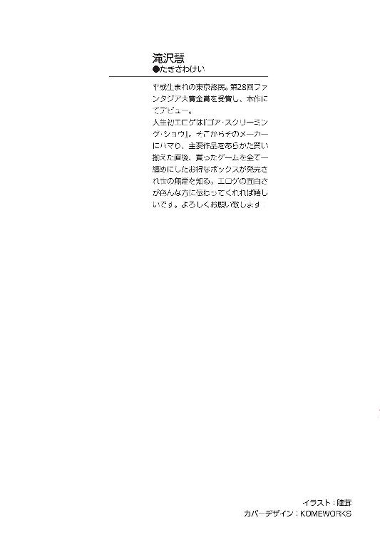
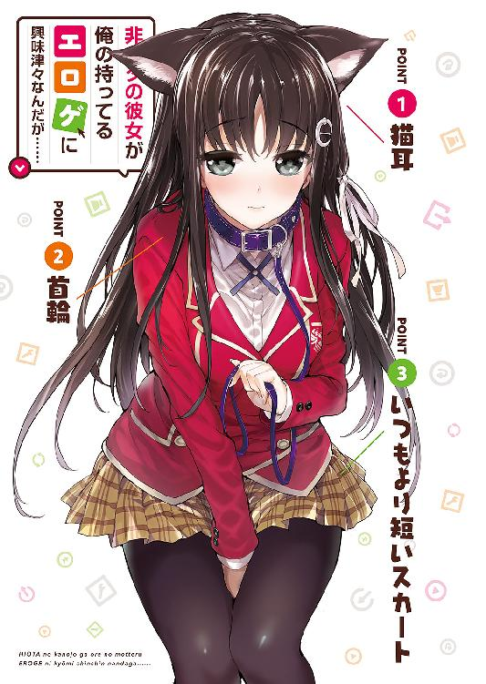
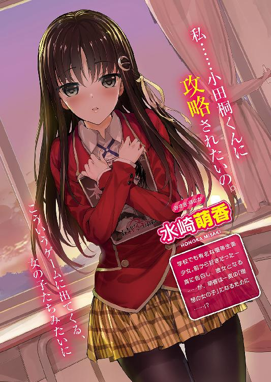
非オタの彼女が俺の持ってるエロゲに興味津々なんだが......
滝沢 慧

富士見ファンタジア文庫
本作品の全部または一部を無断で複製、転載、配信、送信したり、ホームページ上に転載することを禁止します。また、本作品の内容を無断で改変、改ざん等を行うことも禁止します。
本作品購入時にご承諾いただいた規約により、有償・無償にかかわらず本作品を第三者に譲渡することはできません。
本作品を示すサムネイルなどのイメージ画像は、再ダウンロード時に予告なく変更される場合があります。
本作品は縦書きでレイアウトされています。
また、ご覧になるリーディングシステムにより、表示の差が認められることがあります。
口絵・本文イラスト 睦茸
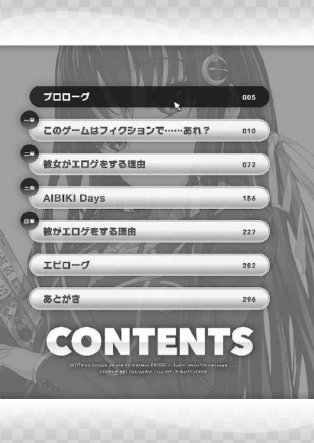
プロローグ
『あ、あのっ......ごめんね、私、男の子とこういうことするの、初めてで......！』
ひどく緊張したような、上擦った声が、パソコンのスピーカーから発せられる。その声を聞きながら、小田桐一真は、ごくりと唾を飲み込んだ。
デスクトップに表示されているのは、見慣れたエロゲのプレイ画面。丁度イベントが始まったところで、ウィンドウにはヒロインを描いたＣＧが映っている。
夕焼けに染まる部室。注ぐ夕日に負けないぐらい頰を赤くして、制服姿のヒロインがじっと主人公を見つめる。
一真の喉が、再び音を鳴らす。
けれどそれは、画面の向こうのヒロインの姿に、心動かされたからではなかった。
「──小田桐くん」
小さな、それでいてよく通る澄んだ声が、一真の名を呼ぶ。パソコンから再生される音声ではない、じかに耳に届く三次元の肉声。
緊張に心を逸らせながら、一真はゆっくりと、声のしたほうに顔を向ける。
そこにいたのは、一人の少女、
いや、美少女だった。
艶やかに背を流れ落ちる黒髪。白い素肌に華奢な姿態。こちらを見る瞳はびっくりするほど綺麗に澄んでいて、窓からの夕日を受けてきらきらと輝いて見える。
彼女の名は、水崎萌香。
この緑坂学園が誇る優等生にして、全校男子の憧れの的。美しくも凜々しいクールビューティー。そこらの男子では言葉を交わすことも叶わない、高嶺の花。
そして──一真の、生まれて初めての、『彼女』。
「あ、あの......ごめんなさい、私、男の子とこういうことをするのは、初めてで......」
夕焼けに染まる部室。注ぐ夕日に負けないぐらい頰を赤くして、制服姿の萌香がじっと一真を見つめる。
まるで、ゲームの焼き直しのようなシチュエーション。口にされる台詞も、ゲーム中のそれと全く同じものだ。
『だから、う、上手く......できないかもしれないけど......頑張るから』
オートモードに設定されたゲームから、また音声が流れ出す。
同時に、画面に表示されていたＣＧに変化が生まれた。
夕日を背景に佇むヒロイン。その服が胸元まではだけて、愛らしいデザインの下着が露わになる。
応じるように、萌香もまた、自身の制服に手を掛けた。
「だから......う、上手く......できないかもしれないけど......」
萌香の唇が小さく動いて、ヒロインの台詞をなぞる。その声は緊張と羞恥に震え、一真を見上げる瞳はかすかに潤んでいた。
そして、意を決したように、萌香はきゅっとブラウスを握る手に力を込め、
「が......がんばりゅっ──！」
嚙んだ。
「............」
「......えっと、み、水崎さん？」
何やら凄まじく落ち込んだ様子で項垂れる萌香に、おっかなびっくり声を掛ける。
「............ごめんなさい」
「そっ、そんなに落ち込むことないよ！ 途中まではすごく再現できてたと思うし！」
「......本当？」
「うん、本当本当！ だから、その、元気出して！ ね？」
顔を上げ、窺うように一真を見上げてくる萌香。力一杯頷き返しながら、一真はなんとも言えない脱力感に襲われる。
（何やってんだろう、俺......）
付き合い始めたばかりの彼女と、放課後の部室で二人きり。本当なら最高に幸せなシチュエーションのはずなのに、どうして自分はその彼女と、『エロゲごっこ』なんてしているのだろう。
確かに、このエロゲは一真の私物だし、最近やった中では五本の指に入るくらい好きなゲームではあるのだけれど。
「......ありがとう、小田桐くん」
「お、お礼なんていいよ。それより、今日はこの辺にして──」
「待って。帰る前に、もう一度だけ、挑戦させて」
「いや、えっと......で、でも、今日はもう遅いし、続きはまた明日とか今度とかでも......」
「もう一度くらいなら、時間はあるわ。やらせて。お願い。今度はきっと、最後までゲームの通りにやってみせるから」
──だって私は、小田桐くんの、彼女だから。
ぐっと両手を握り締め、萌香はやる気に満ちた瞳で一真を見つめる。さっきまであんなに恥ずかしがっていたのに、というか今も恥ずかしそうなのに、この熱意は一体どこからくるのだろう。
「ええと......水崎さんがそう言うなら......」
萌香の勢いに押されて、一真は躊躇いがちに頷く。
何故、一真達が二人でエロゲなんてやっているのか。何故、萌香がエロゲのヒロインになりきろうとしているのか。
そもそもどうして、高嶺の花であるはずの萌香と、一真みたいな平凡な男子が付き合うことになったのか。
──全ての始まりは数日前。
夏休みが明けて間もない、九月のある日のことだった。
一章 このゲームはフィクションで......あれ？
（ねみぃ......）
寝不足でだるい体を引きずって、一真はやっとの思いで、自身の教室に辿り着いた。
一─Ｃ。扉を開けると、この半年ですっかり見慣れた教室の風景が目に飛び込んでくる。
雑談に興じるクラスメイトの間を縫い、自身の座席へ。一真の席はクラスの一番奥、窓際の最後列だ。
「はー......」
半ば崩れ落ちるようにして、椅子に腰を下ろす。
夏休みが明けて早くも一週間。だが、一真は未だに、休みの間に崩れまくった生活リズムを正すことができないでいた。
何しろ、夏休み中はずっと、徹夜でエロゲ三昧の日々だったのだ。こうしている今も、気を抜くと寝落ちてしまいそうになる。
いや、いっそこのままホームルームまで寝てしまおうか。どうせ教室にいたって、親しく話をするような友達もいないのだし──。
「えいっ」
ぷすっ。
「......」
「うりうりうりうりー」
ぷすぷすぷすぷすっ、と猛烈な勢いで頰をつついてくる指を、ぞんざいに払いのける。
「あっち行ってろ」と言ったつもりだったが、悲しいかな、相手のほうはそう受け取ってくれなかったらしい。指が離れた代わりに、机の傍らに立っていた人影が、てててっと正面に移動してくる。
「もー、なんで無視すんの！ 人がおはようって言ってるのに」
目元のぱっちりとした、華やかで可愛らしい顔立ちの少女だった。動きに合わせて軽やかに揺れる髪は明るい茶髪。スカート丈は校則ガン無視の短さで、『あたし女子高生です』と、全身で主張するかのような出で立ちである。
しかし、何よりも目を引くのは、制服の胸元を押し上げる二つの膨らみだ。その大きさたるや、ブラウスのボタンが今にもはち切れんばかり。
四ノ宮瑠璃。今ではすっかりＪＫになってしまったが、こんなんでも一応、一真の幼馴染だ。
コミュ力が高くてリア充で、男子にも女子にも好かれていて、誰もが認めるクラスの中心人物で。
そんな無敵のポジションを確立している癖に、冴えないオタクの一真にも昔と同じ気安さで話しかけてくる、そんな『女の子』。
「言ってないだろ。うりうり鳴いてただけじゃないか」
「だーから、それがあたし的には『おはよう』って意味だったんだって」
「何語だよ......」
「んー？ あたし語？ なんつって」
自分の言葉を自分で面白がるように、瑠璃はへにゃっと笑った。メイクでばっちり決めた小顔に、明るい笑顔がより一層の華を添える。
「それよりさー。ねーねー一真ー、なーんかあたしに言いたいこと、なーい？」
サイドで結わえた髪、そして豊かなバストを惜しげもなく揺らしながら、瑠璃が一真の顔を覗き込んでくる。
距離の近さに少しだけどきりとしながらも、一真は「何言ってんだこいつ」と、わけのわからない幼馴染に怪訝な視線を返した。
「言いたいことなぁ......別にないけど。しいて言うなら、〝眠いからそっとしといてください〟ぐらい」
「そーゆーんじゃなくて！ ほーらー、よく見てってばー！ なーんか気が付かない？」
「よく見ろって言われても......」
言われるままによく見てみるが、目の前にあるのはどう見ても、いつもと変わらない幼馴染の姿である。小首を傾げたあざとい仕草も、動くたびにたゆんたぷんと揺れる胸の膨らみも、羽根飾りのような髪型もいつも通り──。
「あ」
気が付いた。いつも通りじゃなかったところ。
「なんだ。四ノ宮、髪型変えたんだな」
「もー！ 気付くのおーそーいー！ 髪型違うのなんか見たらわかんじゃん！」
折角正解したのに、瑠璃は満足するどころか、頰を膨らませてぷりぷりと怒り出した。
「なんだよ......。いいだろ、ちゃんと気が付いたんだから」
「ダメ！ っていうか、まだ言うことあるでしょ！」
「......ないって」
ぼそぼそと呟き、目を泳がす。急に気まずくなったのは、求められていることがわからなかったからではなく、むしろその逆だ。
しかし、瑠璃は見逃してはくれなかった。回り込むように一真の顔を覗き込み、にーっと得意げな笑みを浮かべる。
「ね？ ね？ この髪さ、似合ってるでしょ？ あたし可愛いでしょ？」
「あー......えっと、まあ......」
「可愛いでしょー？」
ここぞとばかりに、上目遣いでポージング。その手には乗るものかと、一真は抵抗の意思表示も兼ねて顔ごと目を逸らす。
が、
「ねー、可愛いっしょ？」
「......」
「かーわーいーいーでーしょー？」
「............」
「ねーってば！」
「わかった！ わかった!! 可愛い！ 可愛いよお前は！ だからそれ以上顔を近付けて来るなっ！」
口に出す勇気はないが、軽く身を屈めるような格好をしている所為で、ブラウスの胸元から谷間が思いっ切り見えているのだ。口に出す勇気はないが。
「──えへへっ。でしょー？ ありがと、一真」
乱暴に押し退けられたにもかかわらず、瑠璃はやたらと嬉しそうだった。ほかほかのホットケーキの上で溶け出すアイスのような、幸せに蕩けた顔。
（ホントこいつ、褒められるとめちゃくちゃ嬉しそうな顔するよな）
幼い頃から、家族を始めとする周囲の人間にちやほやされて育った瑠璃だ。『可愛い』なんて言葉、それこそ、生まれた時から散々言われてきているだろうに。
それでも、瑠璃は事あるごとに一真にそれを言わせたがるし、言ってやったらやったで、こっちがびっくりするくらい嬉しそうな顔を見せる。
そんな風に律儀に喜ばれるとこっちも悪い気はしなくて、ついつい甘やかしてしまうわけだが、まあそれはそれとして。
「ほら、もう用済んだだろ。どっか行けって。俺も忙しいんだよ」
「あー、何それ！ 人のことお邪魔虫みたいにー！ いーじゃん、ちょっとくらいさー」
「お前は良くても俺は良くないんだっての！」
ここだけの話、教室で瑠璃に声を掛けられるのは、色々と居心地が悪いのだ。
何しろ──。
「ルリー！ おっはよー！」
突然割り込んできた声に、ぎくっと体が強張る。
近付いてきたのは、同じクラスの女生徒だった。茶色の髪に、メイクとアクセサリーで飾り立てた派手な外見。瑠璃同様、一目見ただけで『リア充』とわかるような女子だ。
「あ、アンリじゃん。おはー」
「おはー。あ！ ルリってば髪型変えたんだー！ 似合うじゃーん！ 超カワー！」
「でっしょー？ 読モのあいにゃんがこないだテレビで髪こうしててさー、あたしもやってみよーって」
一真の机のすぐ脇で、きゃっきゃっとリア充トークを始めるイマドキ女子達。
と、アンリと呼ばれた女子（ちゃんとした名前が思い出せない）が、ふいっと一真に視線を寄越した。思いっ切り目が合ってしまい、一真の額に汗が浮かぶ。
「あ、小田桐くんもおはよ。今日もアッツイよねー」
「あー、ああ、えと......！ おは──」
ガチガチになりながらも挨拶を返そうとしたが、その時にはもう、彼女は一真のことなど見ていなかった。何事もなかったかのように、彼女は再び瑠璃と話し始める。
「ってかさー、ルリと小田桐くんってホント仲いいよねー。朝から二人っきりで話とかしちゃってさ」
「えー、そんなことないよー。普通、普通」
「そんなこと言ってさー、ホントは付き合ってんじゃないのー？」
「ないない。ただの幼馴染だってば」
にやにやと笑う友人の追及を、こちらもやはり笑顔で躱す瑠璃。
何しろ瑠璃は目立つ存在だから、一真と瑠璃が二人でいると、こんな風に茶々を入れられるのはそれこそ日常茶飯事だ。
......が。
言葉こそからかっている風だが、このアンリという女子も、瑠璃と一真が本当に付き合っているなどとは考えていないに違いない。
『ぱっとしない幼馴染が気の毒だから、人気者で気のいい瑠璃が適当に構ってやっている』──クラスメイトの大半は、一真と瑠璃の関係をそんな風に解釈しているのだろう。
実際、そういう面がないとは言えない。人付き合いが苦手で、何かきっかけでもない限り自分から人に話しかけられない一真が、それでもなんとかクラスで孤立せずに済んでいるのは、『四ノ宮瑠璃の幼馴染』という〝立ち位置〟を、彼女が与えてくれたからだ。
それについては本当に感謝しているし、ありがたいとも思っている。
ただ、時々無性に居た堪れなくなるだけで。
「そういえばさー、聞いてよルリー！ こないだ話したバイト先のことなんだけど、もーマジ最悪でさー！ ホンット意味わかんない！」
「えー、何？ またなんかあったの？」
一真そっちのけで盛り上がる女子二人を見上げ、ひっそりと溜息を零した時。
ガラリと、教室の戸が開く。
それだけで、あれほど騒がしかった教室が、凍り付いたように静まり返った。教師が突然現れたって、きっとこんな風にはならないだろう。
まず目を引くのは、腰まで伸びる艶やかな黒髪。
そして、感情というものを一切窺わせない、涼やかな眼差し。
水崎萌香。
『全科目満点』という驚異的な成績で主席入学を果たして以来、学園中の注目を一身に浴び続ける稀代の秀才。
眉目秀麗にして品行方正。無口かつ無表情。ただそこにいるだけで周囲の空気を引き締める、完全無欠のクールビューティー。
そして、一真にとっては、四月からずっと同じ教室で顔を合わせている、クラスメイトという名の高嶺の花。
それが、彼女。
クラス中から集まる視線を物ともせず、萌香は静かな足取りで自身の席へと向かう。
萌香の座席──それはすなわち、一真の一つ前の机だ。
「あ......」
進路を塞ぐ形になっていた瑠璃達が、慌てて左右に退く。
それに礼を言うでもなく──いや、そもそも、彼女達がそこにいたことさえ、最初から気付いていなかったかのように、萌香はどこまでもクールに、自身の席に腰を下ろした。
「あー......じゃあ、アタシもう行くから。後でね、ルリ」
萌香の圧倒的過ぎる存在感に耐えかね、そそくさと去っていくアンリ（仮）。
それを合図にしたように、固まっていたクラスメイト達も、ぽつぽつと雑談を再開し始めた。すぐに、さっきと同じ騒がしさが一真と瑠璃、そして、前の席の萌香を取り囲む。
その喧騒に紛れ込むようにして、瑠璃がこそこそと、一真に顔を近付けてきた。
「ねーねー。一真さ、今日の放課後って部活ないよね？」
「は？ ......まあ確かに、活動日じゃないけど」
「じゃあさ、暇でしょ？ ドーナツ食べ行かない？ 今日から新メニュー始まるんだって！ 行くよね？ はいけってー！」
「勝手に決めるな！ 俺にだって色々と予定ってものがだな......」
「えー。予定って言ったって、一真が普段やってることって言ったら、家で一人でゲームしてるか、一人でアニメ見てるか、そうじゃなかったら一人でアキバ行くかじゃん」
「一々『一人で』をつけるなよ！ 俺だって好きで一人でいるわけじゃないんだぞっ！」
語り合いたくてもその相手がいない、コミュ障のオタクの辛さが、非オタのリア充にわかってたまるものか。
割と本気で泣きそうになる一真だったが、瑠璃はそんな悲哀すらも吹き飛ばすように、にっこりと、とびっきりの笑顔を見せる。
「だからさー。そーやって一人で遊んでるより、あたしと一緒にどっか遊びに行ったほうが、絶対楽しいって。でしょ？」
「......」
聞きようによってはこれ以上なく傍若無人な台詞なのに、一真は反論できなかった。その言葉が、実はあながち間違っていないことを知っていたから。
「そーだ、久しぶりにカラオケも行こーよ、カラオケ！ 友達のおにーさんがバイトしてるってお店があってさ、クーポンもらったんだよねー。すぐ近くだから、帰る途中に寄ってこーよ」
一真が黙っているのをいいことに、瑠璃は勝手に放課後の予定を決めていく。
その態度に、思うところは色々とあるが。結局逆らえた例は一度もないので、一真は諦めの溜息を零した。
「けど......カラオケって言ったって、俺、エロゲの曲ぐらいしか歌えないぞ？ 最近はアニメもあんま見てないし......」
周囲のクラスメイトには、間違っても聞かせられない台詞だ。
だが、周りにいる生徒は皆それぞれの雑談に夢中で、限界まで潜めた小声に耳を傾ける者なんて一人もいない。
だから、聞いていたのはすぐ目の前にいた瑠璃だけで。
「ふぇっ......!?」
瞬間、瑠璃の顔が、一瞬にして茹だったように真っ赤になる。
（あ）
しまった、と思う。見た目はいかにも『遊んでる』風な癖に、瑠璃はこの手の話題がとことん苦手なのだ。
「バ、バカバカバカ！ 一真のエッチ！ ヘンタイ！ またそうやって、あたしのことエッチな目で見る！」
「なんでそうなるんだよ!? 話が飛躍し過ぎだろ!?」
カラオケのレパートリーの話をしただけなのに、何故かとんでもない汚名を着せられた。
「うぅ......！ 一真のヘンタイ......！ ヘンタイヘンタイ！ オタク！」
「待てその二つの単語を同列に並べるな！」
きゃんきゃん喚きながら──それでも一応、周囲に聞こえない程度に声を潜めて──瑠璃は胸元を隠すように、両手でぎゅーっと自らの体を抱き締める。
そんなことをしたら、胸が腕の間で潰れて余計大変なことになるだけなのだが、そこら辺わかっているんだろうか？ この、見てくれだけはビッチっぽい純情娘は。
「わかった、変なこと言って悪かった！ 謝るから、オタクに対して妙な偏見を持つのはやめろ。いえやめてください」
「そ、それは悪かったけど......でも、一真がエッチなのはホントじゃん。こ、高校生の癖に、そんな変なゲーム持ってて......！」
「やめてください。しんでしまいます」
「こ、こないだも、夕飯お裾分けに行ったついでに部屋覗いたら、ベ、ベッドのシーツに、裸の女の子の絵が描いてあ──」
「やめろよ！ しんでしまいますって言ってるだろ！ 大体、あれは姉貴が同人やってる知り合いからもらったやつで、俺が知らない間に勝手にベッドに敷いたのも姉貴で、俺は関係ないんだって散々言っただろ！ もう忘れてくれよ頼むから！」
「......じゃあ、放課後カラオケ」
「行きます行かせていただきますどこにでも！」
「ん。じゃ、許したげる」
まだ頰に赤みを残しながらも、瑠璃はすっかり機嫌が直った様子でにこりと笑った。
それに安堵しながらも、一真の胸には、一抹の不満が残る。
なんだってエロゲを持っているくらいで、こんなリアクションをされなければならないんだろうと。
......いやもちろん、高校生は本当ならエロゲやっちゃいけないんだけど。だから瑠璃の言いたいことはわかる......というかぐうの音も出ないほどに正論なんだけど。
（......けど、なぁ）
ちょっとくらい──ちょっとくらいは、許してほしい。認めてほしいと思うのだ。そりゃあ確かに大っぴらにできる趣味ではないけれど、エロゲにだって、面白かったり素晴らしかったりする作品は、たくさんあるのにと。
どこかにいないだろうか。一真と同じように、エロゲが好きな女の子が。
一緒にエロゲをやって、『すごい』、『面白い』と、同じテンションで萌えを語り合える、そんな相手が──。
「──四ノ宮さん」
周囲の空気が、一瞬にして張り詰めた。
一真も、瑠璃も、弾かれるようにして、声のしたほうに顔を向ける。
いつの間に席を立ったのか。水崎萌香が、一真と瑠璃をじっと見つめていた。
「......放課後」
「ふぇ？」
「放課後、カラオケに、行くの？」
『二人で』、と、小声で付け足し、萌香がちらりと一真を見る。
それだけなのだが、一真は反射的に身を竦めてしまった。何しろ萌香は普段から徹底した無表情なので、ただ見られるだけでも妙に緊張してしまうのだ。
「ごめんなさい。盗み聞きするつもりはなかったのだけれど、聞こえてしまったから」
「え、えっと......」
萌香の指摘に、瑠璃は見るからに狼狽えている。
それもそのはずで、下校途中の寄り道は校則で禁止されているのだ。
歴史のある私立校ならではの、お堅い校則。本来であれば、そんな決まりなんて誰も守りはしないけれど──相手が水崎萌香なら、話は別だ。
何しろ彼女は、学園きっての優等生。おまけに無口で取っつきにくいときている。相手がクラスメイトだからって、校則違反を見逃してくれるとは思えなかった。
いつしか教室は再び静まり返り、皆が固唾を吞んで、萌香達のやり取りを見守っていた。
耳に痛いほどの沈黙の中。萌香が、重々しく口を開く。
「......その、ね。いきなりこんなことを言うのは、失礼かもしれないけれど。私──」
「ごめん！ 水崎さん！」
「パシ！」と、軽やかな音が教室に響いた。
「そーだよね、寄り道はやっぱダメだもんね。あたしってばついうっかりしちゃった！」
ばつが悪そうに片目を瞑り、顔の前で両手を合わせる瑠璃。その、いつもと変わらない朗らかな声、振る舞いが、緊迫していたクラスの空気をあっという間に和らげていく。
「次からは、ちゃんと気を付けるね。教えてくれてありがと、水崎さん」
にこっと無邪気な笑顔を見せる瑠璃を、萌香はしばし、無言のまま見つめていた。
けれど、やがて、
「......いえ、いいの。お礼を言われることじゃ、ないから」
素っ気なくそう答えると、さっさと自分の席に座ってしまった。
自分に注目する視線も、瑠璃の見せた笑顔も、何一つ、気に留めない風で。
瞬間、張り詰めていたクラス内の空気が、一気に弛緩する。
一真もまた、緊張から解放されてほっと息をついた。
何しろ、瑠璃と萌香が向き合っていたのは、一真のすぐ目の前である。位置関係的に、一真は丁度挟まれる形になってしまい、はっきり言って生きた心地がしなかったのだ。
もっとも、直接対峙していた瑠璃に比べれば、ずっとマシだったとは思うが。
「あーっと......じゃ、一真。あたしもそろそろ行くね。なんか、ごめんね？ 巻き込んだみたいになっちゃって......」
「いや、そんなのはいいけど。えっと......なんだ、元気出せよ」
「別に、へこんでないよ。水崎さんも、意地悪で言ったんじゃないんだし。んじゃね」
言葉通りの明るさで軽く手を振り、瑠璃は離れていった。
自分の席へと戻った彼女を、いつも一緒にいる女子グループが迎える。「ツイてなかったねー」という会話が、かすかに聞こえてきた。
瑠璃がいなくなって、一真の周囲は急に静かになる。
と、同時に、周りで話しているクラスメイトのやり取りが、耳に届くようになった。
「うひゃー、こっわ。四ノ宮もかわいそーに」
「ま、しょーがねえじゃん。だって水崎さんだぜ？ 覚えてるだろ？ 四月にさー、授業始まって早々教師質問責めにして泣かせたこと」
「電車で痴漢してきたおっさんを一睨みで黙らせたってのも聞いたぜ」
「ああ見えて実は空手の達人らしいぞ？ 噂じゃ、しつこく付きまとってた男を返り討ちにして一ヶ月入院させたとかなんとか」
そんな会話が、耳から耳へと抜けていく。
語られる噂話は千差万別だけれど、一つ共通しているのは、彼らにとって、水崎萌香が〝高嶺の花〟──遠い存在であるということ。
そしてそれは、一真にとっても変わらない。
半年前の四月。入学式で、新入生代表として壇上に立つ萌香の姿は、今でも鮮明に覚えている。
その後、一真は偶然にも、萌香と同じクラスになることができた。二学期最初の席替えで、彼女のすぐ後ろの席になるという幸運にも恵まれた。
もしかしたら、何かのきっかけで親しくなれることもあるんじゃないか──そんな風に妄想を膨らませてみることも、なかったわけじゃないけれど。
（まあ、こんなもんだよな。現実なんて）
その妄想が現実になるだなんて、そんな夢みたいなことは思っちゃいない。
「────......くん」
そのうちまた席替えがあって、クラス替えがあって。そうして距離が離れていけば、いずれは、夢を見ることもなくなるだろう。
だって、現実は、二次元とは違うのだから。
「......桐くん......」
それにしても眠い。ＨＲまでもうすぐだが、少しだけ寝てしまおうか。授業中に居眠りするよりはマシだろうし、先生も大目に見て──。
「──小田桐くん」
「......えっ？」
とん、と、肩に、細い指が触れる。
はっとして顔を上げた途端、一真は息を吞んだ。
萌香が。
この半年、横顔か後ろ姿しか見たことのなかった彼女が、こちらを向いている。
一真のことを、見ている。
「っ......え、っと......」
だらけきっていた体が、一瞬にして髪の先まで緊張する。
何しろ、あの水崎萌香に面と向かって声を掛けられるのなんて、これが初めてだ。その上彼女は滅多にお目に掛かれないような美少女でもあるし、異性に免疫のない一真は思いっ切りへどもどしてしまう。
「あ、あの......お、俺に、何か......？」
挙動不審になる一真を、萌香は相変わらずの無表情でじっと見つめてくる。
それはもうじーっと。顔に穴が開くんじゃないかと思うぐらいに。
（ええええ......？ 俺、なんかしたか......？）
不安と緊張の中、一真が必死に自分の言動を省みていると、
「......小田桐くんは」
「え？」
「小田桐くんは......四ノ宮さんと、その......付き合って、いるの？」
「──えぇ!?」
思いっ切り叫んでしまい、クラスメイトの何人かがなんだなんだとこっちを見る。誤魔化すように、一真は慌てて咳払いを一つ。
それから、今度は注意深く声を潜めて言う。
「ま、まさか......！ 俺と瑠璃──あ、いや！ 四ノ宮が付き合ってるなんて、そんなことあるわけないって！」
「......でも、いつも、一緒にいるわ。さっきだって、仲良く話をしていたし」
「それは、幼馴染だから......！ だ、第一、どうして水崎さんがそんなこと──」
話題を逸らそうと苦し紛れに口にした言葉だったが、言ってみて初めて、一真も疑問に思った。今までまともに話したこともなかったのに、何故萌香は、いきなりこんなことを聞いてきたのか。
不思議に思いながら、一真は萌香の顔を見つめ返す。
対する萌香は、何か言いたそうに口を開きかけるが──。
「ほら、全員着席！ ＨＲ始めるぞー。日直、号令！」
ガラッと戸を開けて、入ってきたのは担任の男性教諭だった。教卓に向かう彼に急かされ、雑談していた生徒達がそれぞれの席に戻っていく。
「......ごめんなさい。先生が来たから、これで」
「あ......う、うん」
正直に言えば、ここで話を切り上げるのは躊躇われた。萌香がさっき何を言おうとしたのかが、どうしても気になる。
しかし、話はこれで終わりとばかりに前を向かれてしまっては、それ以上声を掛ける勇気なんてなかった。
仕方なく、一真は日直の号令に従って、クラスの皆と一緒に席を立つのだった。
◆◆◆
放課後。
一真が資料室を出ると、窓の外はもう暗くなり始めていた。
（うわ、もうこんな時間かよ......）
本当ならこんなに遅くなるはずではなかったのだが、帰り際に担任に呼び止められ、授業で使うプリントの作成を手伝うよう言われてしまったのだ。
当然、上手く躱せるだけのコミュ力なんて一真にはない。言われるままに雑用を押し付けられ、気が付いたらこの有様、である。
（帰ってエロゲやろうと思ってたのにな......）
今からでもさっさと帰ろうと、カバンを取りに教室へ急ぐ。
だが、教室の扉を開けた時、視界の隅で、誰かがびくりと身を竦めるのが見えた。
「え......？」
てっきり、もう皆帰ってしまったと思っていたから、予想に反して残っていたその人影に、一真は目を瞠る。
しかも、だ。
無人の教室にたった一人佇んでいたのは、誰もが認めるクラス一の美少女、水崎萌香その人だったのである。
突然現れた一真に驚いたように、萌香はこちらを見つめたまま動きを止めている。
「え、えっと......」
正直言って、かなり気まずい。今朝、あんなことがあったばかりだから、余計に。
できることならさっさとカバンを取ってこの場を立ち去りたかったが、萌香が立っているのは彼女自身の席──つまりは、一真の机のすぐ前である。荷物を取りに行くには、どうしたって彼女のほうに向かっていかねばならないわけで。
「ご、ごめん。なんか、邪魔しちゃったみたいで......。カ、カバン取ったらすぐ帰るから......」
下手な愛想笑いを浮かべつつ、一真はそそくさと自身の席に向かう。彼女を怒らせることがないよう、あくまでさりげなく、最新の注意を払って。
だが、いざカバンを持って出て行こうとした矢先。
「......小田桐くん」
「はい!?」
何故か、萌香に呼び止められてしまった。
（......俺、何かしたっけ......？）
ぶわっと冷や汗が噴き出すのを感じながら、ぎくしゃくとした動きで振り返る一真。
沈みゆく夕日を背景にして、萌香はそんな一真をしばし見つめ。
やがてゆっくりと、背後に回していた手を、前に持ってきた。
「......あの、これ」
「え？」
「さっき、三年生の先輩が、教室に来て。小田桐くんに、これを渡しておいてほしいって」
そう言って萌香が差し出したのは、どこにでもありそうな紙袋。
（先輩って......多分部長だよな。なんでまた？）
三年生に知り合いなんて一人しかいないから、多分間違いない。しかし、一体何を持ってきたのだろう。別に誕生日でもないし、物をもらうような心当たりなんて、一真には何もないのだが。
「あ、ありがとう。わざわざ」
とりあえず萌香に礼を言い、一真は袋の中を覗き込んで、
（ちょっ!?）
思わず悲鳴を上げそうになった。
紙袋の中には、以前一真が部室に持ち込み、そのまま紛失してしまったゲーム──『最終痴漢バス３』というタイトルのエロゲーが、剝き出しのまま突っ込まれていたのである。
（あああああ！ あのっ......あの人はほんとに、何考えてんだよ!!）
見付けてくれたのはありがたいが、よりにもよってこんな危険物を、見るからに非オタの......それも女子の手に委ねるなんて、嫌がらせを通り越して最早テロだ。本当に、一体なんのつもりなのか。
「......小田桐くん？」
「へ!?」
見れば、萌香が不思議そうな顔で、一真のことを見ていた。まあ、預かっていたものを渡したら相手が突然狼狽え始めたんだから、変に思うのも無理はないだろうけれど。
「......どうか、したの？」
「い、いい、いや！ なんでもないから！ そ、それじゃ俺、この辺で......！」
とにかく、ここに長居するのは得策ではない。一真はそそくさとカバンを摑み、踵を返そうとしたが、
その瞬間、ビリッ、と不吉な音がして、紙袋の持ち手部分が破け、取れた。
「────あ」
落下する紙袋。衝撃で入っていたブツが外に飛び出し、萌香の足下に落ちる。
彼女はごく自然な動きで、それを拾おうと身を屈め、
直後、全ての時が静止した。
「..................あ、あの、水崎さん......」
一真の震える声には答えず、萌香は落ちているそれを、静かに拾い上げる。
「............『最終痴漢バス』」
ぼそっと零される呟きは、さながら死刑宣告のよう。
頭の中で鳴り響く処刑用ＢＧＭを聞きながら、一真はがっくりとその場に膝をついた。
（ああ......終わった......俺の人生......）
真面目な優等生で知られる萌香のことだ。同級生がこんなものを持っているなんて知ったら、きっとすぐに学校側に知らせるだろう。そして噂はあっという間に学年中に広まり、一真はエロゲー好きの変態として、皆にドン引きされながら学校生活を送るのだ──。
脳裏を駆け巡る最悪の未来予想図。追い打ちを掛けるように、静かな声が頭上から降ってくる。
「......小田桐くん。私......あなたに伝えたいことが、あるの」
......ああ、これがラノベだったらいいのに。そしたらきっと、「実は私もエロゲに興味があって......」なんて話になって、そこからヒロインとのめくるめくラブコメが幕を開けるはずなのに。
もちろん現実は二次元ではないので、そんな上手い話になんてなるわけが──。
「私を──あなたの、カノジョにしてほしいの」
（......ん？）
はて。
何か今、明らかに状況にそぐわない台詞を聞いた気が。
「............え、えっと。水崎さん......？」
「......何？」
「その......今の言葉はどういう......」
「............〝雌豚〟のほうが良かった？」
「いやそういう問題じゃなくて！」
一真の全力のツッコミを聞いて、ようやく萌香も場の空気がおかしいことに気付いたらしい。美しいまでの無表情に、たらたらと汗が浮かんでいく。
「......み、水崎さん？」
声を掛けると、萌香は無表情のままびくっと痙攣。ついで、ずざざざっと教壇のほうへ後退していく。
「............えっと」
「ま、待って。今やり直すから......」
表情を変えないままそれだけ言い、萌香はさっと教卓の陰に引っ込んだ。
やがて教卓の向こうから、ぼそぼそと呟きが聞こえてくる。
「......落ち着いて。落ち着かなきゃ......慌てちゃダメ。大丈夫......ちゃんと練習してきたもの......落ち着いて冷静にやれば、きっと......」
「............」
これは、待っていたほうがいいんだろうか。
しかし、それから五分経っても十分経っても、萌香は教卓の下から出てこない。そうこうしている間にも日は傾き、辺りはどんどん薄暗くなっていく。
「............み、水崎さん......？」
このまま待ち続けていても日が暮れるだけの気がしたので、一真は恐る恐る、教卓の裏を覗き込む。
瞬間、
「きゃっ......!?」
ぴゃっ、と飛び跳ねた萌香は、そのまま頭のてっぺんを強打。ぶつけた箇所を押さえて声もなく蹲る。
「だ、大丈夫!?」
「だ、大丈夫っ......全然、なんともないわ......平気だから......！」
頭を押さえたまま、萌香はわたわたと教卓から這い出してくる。口調こそ凜々しいが、顔は完全に涙目だった。要するにちっとも大丈夫そうじゃない。
「え、えっと、本当に平気？ 保健室とか行ったほうが......」
「保健室......や、やっぱり、そういう場所のほうがいいの......？」
「いやなんの話!?」
「だ、だって、〝奴隷〟も〝雌豚〟もだめだったから、場所がいけないのかと......」
「だから、なんの話なのかさっぱりわからないんだって！」
「だ、だから、私......小田桐くんに、攻略されたいの。その......こういうゲームに出てくる、女の子達みたいに」
きゅっと唇を結び、萌香は赤い顔で一真の顔を見上げる。その手には、先ほど一真が落っことしたエロゲ。
言葉の内容というより、その恥ずかしそうな表情にはっとして、一真は息を吞んだ。
（......え？）
『あなたのカノジョにしてほしい』と、そう言った萌香。
それはつまり、
つまり──。
「そ、それ、って............？」
まさか。そう思いながら、無意識に問いを口にした瞬間。
「お、小田桐一真くん！」
「は、はい!?」
「あなたに、お願いが、あります......！ わ、私とっ、ちゅ──」
「〝ちゅ〟？」
「ち、違うの......今のはちょっと、間違って......」
どうやら嚙んでしまったらしい。
冷静になる為か、萌香は言葉を中断して深呼吸を一つ、二つ、三つ──あ、噎せた。
そして、
「小田桐くん──私と、付き合って、ください」
さらっと、黒髪を舞わせて。萌香が、深く頭を下げる。
「っ、え......？ えっ、つ、付き合っ......ええええ!?」
頭が事態を理解するより先に、体のほうが反応した。心臓の鼓動が猛烈な勢いで高鳴り、頰が熱くなる。
（いやっ、でも、そんな、噓だろ!? だってあの水崎さんだぞ！ そ、そりゃ、同じクラスではあるけど、全然話したこともないのに！）
夢、あるいは幻覚じゃないのかと思った。けれど、どれだけ時間が経っても、夢が覚める気配はない。萌香が顔を上げて、『実は今のはドッキリなの』なんて言い出す様子も。
（ほ、本当に......？ 本当に、水崎さんが、俺を......？）
信じられない。すぐには、とても。
「で、でも、水崎さん......その、俺、オタクだし、そういうゲームだって持ってるし......引いたりとか、しないの......？」
萌香の手の中にあるエロゲを指差しながら、尋ねる。
萌香はどう見ても非オタだし、それに何より女子だし。だからこの手のゲームにも拒否感があるんじゃと思ったけれど、萌香の答えは逆だった。
「引いたりなんて、そんなこと、しないわ。小田桐くんは男の子なのだから、えっちなのは仕方がないと思うし......それに、私、前から知っていたもの。小田桐くんが、こういうゲームを好きだって」
「えっ!?」
何故知られているのだろう。まさか、一真が気付いていないだけで、一真がエロゲオタクであることは実は周知の事実だったとか......？
嫌な想像をしてさーっと顔を青ざめさせる一真をよそに、萌香はもじもじと、恥ずかしそうに言葉を継ぐ。
「......その、それで、小田桐くん。返事を......聞かせてもらっても、いい......？」
「えっ、あ......！」
とっさに言葉が出ない一真を、萌香は顔中を真っ赤にしたまま、じっと見つめ続ける。
夕日の所為なんかじゃない。きゅっと唇を引き結び、大きな瞳を潤ませて。ぎゅっと両手を握り締めるその姿は、どこからどう見たって、羞恥をこらえて勇気を振り絞る女の子のそれだ。
その表情の可憐さに、一真はドキリとしてしまう。
まさか、あの『水崎萌香』が、こんな顔をするなんて。
「あ、え、えっと......！ み、水崎さん！」
何か言わなければ。そんな思いにせっつかれて、つんのめるように言葉を吐き出す。応えるように、萌香がゆっくりと、瞬きをした。
「お......俺で、良かったら......」
死ぬほどドキドキしながら、必死の思いで絞り出した返事。
しかし、それを聞いた瞬間、萌香はぴたりと動きを止めてしまった。
かと思ったら、そのままぺしゃんと床にへたり込む。
「え？ ちょっ、み、水崎さん!?」
「......本当？」
「え......？」
「本当に、私と、付き合ってくれるの......？」
床に座り込んだまま、萌香はじっと一真を見上げる。頰は相変わらず真っ赤で、なんだか夢でも見ているような顔付きだ。
......これじゃ、立場が逆だ。「本当にいいの？」と聞きたいのも、夢でも見ているような気持ちなのも、むしろ、一真のほうなのに。
「う、うん......。その、俺もずっと、水崎さんのこと、可愛いなって、思って、たし......」
恥ずかしさをこらえてそう言ったら、萌香は火がついたように顔を真っ赤にした。自分なんかの言葉でそんな顔をされるとは思わなかったから、一真は余計にドキドキしてきてしまう。
「あ、え、えと、ごめん......」
「い、いいの......。その、じゃあ、小田桐くん......」
──これから、よろしくお願いします。
そう言って、萌香は一真に、そっと小指を差し出した。
◆◆◆
──その日の夜。
（ほ、ほんとに夢だけど夢じゃなかった......）
夕食を終え、一真は自室で一人、食い入るように携帯の画面を見つめる。表示されているのは、登録されたばかりの『水崎萌香』の連絡先だ。
（うわぁ......うわぁ......！ 夢じゃないよな？ これ、掛けたらちゃんと水崎さんに繫がるんだよな!?）
萌香の携帯を見せてもらい、直接入力した番号。夢でも間違いでもない。瑠璃以外の女子から連絡先を教えてもらえるなんて、一真の人生始まって以来の快挙だ。
（俺......付き合うんだ。水崎さんと）
ドキドキと鼓動が早まり、ひとりでに頰が熱くなってくる。どうしてもそわそわしてしまって、一真は携帯を手に、部屋の中を行ったり来たりを繰り返した。
本当なんだろうか。
夢じゃないんだろうか。
あの水崎萌香が、自分の『カノジョ』になるだなんて。
それも、告白してくれたのは、彼女のほうからなのだ。
つまり、萌香はずっと、一真のことを好きでいてくれたということで。
話したことはなくても、一真のことをずっと見ていてくれたということで。
（噓みたいだ......）
でも、噓じゃない。夢ではないのだ。今だって頰を抓ってみているけど、ちゃんと痛いのだから。
自分にもとうとう、二次元でも妄想でもない、本物の彼女ができたのだ！
「......ははっ」
気が付いたら、笑みが零れていた。自分でも気持ち悪いと思うが、顔がにやつくのを抑えられない。
いやでも、『付き合う』って、具体的にどうしたらいいんだろうか。一真は萌香の『彼氏』になるわけだし、もっとリア充っぽい格好をしたりとか、リア充っぽい話題を探したりするべきなのか。
そもそも、『あの』水崎萌香と、これから一体どんな会話をしたらいいのだろう？ 女子はおろか、男子とさえもろくに話すことがないというのに、その程度のコミュ力で本当に場が持つのか......？
萌香に冷たい目で見られる様を想像して冷や汗を浮かべた時、不意に手の中の携帯がブルブルと震え出す。
（ま、まさか水崎さんからじゃ......!?）
死ぬほどドキドキしながら携帯を見たが、メッセージの送り主はただの幼馴染だった。
（なんだ......）
ほっとしたような、がっくりしたような。
とりあえずメッセージを確認。内容はなんてことない雑談だったので、大して気負わず適当に返す。
（こいつが相手だったら、余計なこと考えなくて済むんだけどな）
が、幼稚園の頃からの腐れ縁である幼馴染と、生まれて初めてできた彼女を同列に並べるわけにもいくまい。
萌香の連絡先を見つめながら、思案に暮れる。
と、突然、部屋のドアが開いた。
ひょこっ、と顔を覗かせたのは、姉の一葉だ。
可愛らしくはあるものの、歳の割にはやや童顔気味の顔立ち。ぽけっとした表情も相まって、どことなく子供っぽい印象を与える人物だ。
が、幼く見えるのは首から上だけで、ちょっと視線を下げれば、出るところは出、締まるところは締まった抜群のプロポーションが目に入る。特に圧巻なのは、Ｈカップという驚異のサイズを誇るその爆乳だ。
「カズちゃ～ん。お姉ちゃんお風呂上がったから、次どうぞ～」
「ああ、ありが──って!? あ、姉貴！ おまっ、なんて格好してんだよ!?」
「ん～？ 格好って～？」
タオルで髪を拭きながら、きょとんと目を瞬かせる一葉。
あろうことか、彼女は下着姿だったのである。
それもいわゆる、パンイチ。
湯上がりで上気した肌も、きゅっとくびれたウエストも、そして夢とロマンのＨカップも。全てが惜しげもなく、一真の眼前に晒されている。
いやそんなじっくり見てないけど。ちゃんとすぐに目逸らしたけど。
「や～だ～。カズちゃんったら照れちゃって～。昔はよく、一緒にお風呂入ってたじゃな～い」
「いつの話してんだよ!? いいから早く部屋行って着替えてこいって！」
「え～......。でもぉ、お風呂入ってすぐに着替えると暑いし～......」
なんとか追い払おうとするが、一葉はどこ吹く風で、あっさり部屋の中に入ってきてしまう。
「そ・れ・よ・り。どうしたの～？ 携帯握り締めて嬉しそうな顔しちゃって～。お姉ちゃんにも教えて～」
「あ、ちょっ......！」
肩にもたれるような格好で手元を覗き込まれ、途方もなく柔らかい感触が腕に触れる。
いやもうこれ触れるっていうか腕が埋まってるっていうかむしろ挟まれてるっていうか以下略。
「だからせめて隠せえええええ！」
ふにふにむにゅむにゅしたそれを渾身の力で押し退け、そこらに落ちていたＴシャツを投げ付ける。
結局、一葉が大人しく部屋を出て行ったのは、一真が今日あった出来事を洗いざらい白状した後だった。
ついでに、服は最後まで着なかった。
（ったく、姉貴の奴......）
疲れ果てて、ぐったりとベッドに沈み込む。
（......風呂、入ってこよう）
よいせっと立ち上がった途端、また携帯が震えた。
さてはまた瑠璃かと、何気なく画面を見てみると、
（なんだ水崎さんか......って!?）
人生初の、『彼女』からの電話だった。
（どっ、どっ、ど......!?）
どうしたらいいかわからず、携帯を握り締めたままあたふたする一真。
いや、どうしたらも何も、普通に出ればいいだけなのだが、なんというか心の準備が。
しかし、そうこうしているうちにもし切れてしまったりしたら、それこそどうしたらいいかわからない。
（ええい......！）
覚悟を決め、震える手で携帯を耳元に。
「も、もしもし......？」
『──小田桐くん？』
名前を呼ばれただけなのに、心臓がドキッと鳴った。
（ほ、ほんとに水崎さんからだ......）
『......小田桐くん？ 聞こえている？』
「あ、う、うん！ 大丈夫！ ちゃんと聞こえてるから！ え、えっと、それで、どうかした？ こんな時間に......」
いや、まだ九時前だから、『こんな時間』というほど遅くもないんだろうか？ 今まで女の子（幼馴染除く）とこんな風に電話で話すことなんてなかったから、どう受け答えしていいか今一わからない。
しかし、緊張しまくる一真とは対照的に、萌香は相変わらずクールだった......少なくとも、声を聞く限りでは。
『用事、というほどのことでは、ないのだけれど......その、小田桐くん。明日の朝は、何か予定はある？』
「朝？ いや、別に何も......学校行くだけだけど」
『なら......良かったら、私と、一緒に登校してくれないかしら』
「へ？ い、一緒に......？ 水崎さんと？」
『......嫌？』
「そ、そんなまさか！ 嫌なはずないよ！ た、ただ、ちょっとびっくりしただけで......！」
しかし、考えてもみれば、待ち合わせて一緒に学校へ行くぐらい、付き合っているなら普通のことだろう。
むしろ、思い付かなかった一真のほうが、非モテ丸出しというか、ぼっち乙というか......やめよう、考えても悲しいだけだ。
『それじゃあ、明日の朝、七時に、駅の前で待ち合わせでいい？』
「う、うん。えっと、改札の前で待ってればいいかな？」
『ええ。私も、見付かりやすいところにいるから』
おお、なんだかすごく付き合ってるっぽい会話だ。
『それじゃあ、おやすみなさい』
「あ、え、えっと、水崎さんもその、おやすみ......！」
結局最後まで緊張しっぱなしのまま、通話は切れた。
「っ......はー......」
携帯を握り締めたまま、崩れ落ちるようにしてベッドに座り込む。
（き、緊張した......！）
初めて萌香が電話をくれたのに、結局、どもってばかりでろくに話せなかった。
大丈夫だっただろうか。「なんだこの人」とか思われなかっただろうか。気付かないうちに、何かおかしなことを言っていたりしたらどうしよう。
（い、いや、落ち込むのはやめよう......！ 明日！ 明日挽回すればいいんだ！）
折角、萌香のほうから一緒に登校しようと誘ってくれたのだ。記念すべきお付き合い初日、ここできっちり正しい選択肢を選んで、好感度を上げなくては。
その為にも、今日はさっさと風呂に入って早めに休もう。寝坊なんてしては目も当てられない。
（よし、やるぞ......！ 俺はやるぞ！ ここからガンガンイベント起こして、水崎さんの好感度をがっつり上げて、デートして、キッ、キスとかもして......！ エロゲやラノベの主人公みたいな、誰もが羨む最高のリア充になってみせる!!）
決意を胸に、一真は輝かしい未来に向かって、偉大な第一歩を踏み出すのだった。
◆◆◆
そして翌朝が来た。
一真の輝かしいリア充人生が、ついに幕を開けるのである。
負ける要素など何一つ見えない、勝利を約束された希望の朝に、一真は、
「うわあああああああ!?」
思いっ切り寝坊していた。
（なんで目覚まし掛けなかったんだよ俺えええええ!?）
なんでも何も、忘れただけなんですけどね！
気合が高まり過ぎて、逆に空回りしてしまったのだ。それに、昨夜は緊張で中々寝付けなかったし、仮にアラームをセットしていても起きられたかどうかは怪しい。
もちろん、そんなことはなんの言い訳にもならないので、一真は死にたくなりながら大慌てで家を飛び出す。
（間に合ええええええ!!）
この世のありとあらゆる神に祈りながら、走りに走った。
が、結局、一真が待ち合わせ場所である駅の改札に着いたのは、約束の時間を十分ほど過ぎてからだった。
（み、水崎さん!? 水崎さんは......!?）
必死に周囲を見回し、萌香の姿を探す。
まさか、一真の遅刻に腹を立てて、先に行ってしまったなんてことは──。
（！ いた！）
壁際に設置されたベンチ。そこに腰を下ろしているのは、萌香に間違いない。
「水崎さん！ ごめん、遅れて──！」
謝りながら、一真は大急ぎで駆け寄ろうとし、
直後、ぴたりと足を止めた。
声を掛けた瞬間、萌香が、驚いた様子でがばっと立ち上がったからだ。
「っ......!? 小田桐くっ......！」
目をまん丸に見開いて、萌香はしばし一真を凝視。そして、慌ただしい手付きで時間を確認した後、くるっと一真に背中を向ける。
その瞬間、彼女の手元にちらっと見えたのは──。
（......肉まん？）
いや、あんまんだったかもしれないけど。
「............水崎さん？」
なんとなく近寄りがたくて、一真は足を止めたまま、そっと萌香の名を呼ぶ。
すると、
「......おはよう、小田桐くん」
萌香は何事もなかったかのように振り返り、すたすたと一真のほうへ歩いてきた。その様子があまりにも自然だったものだから、一真は一瞬、「さっきのは幻覚だったんじゃ？」とすら思う。
「お、おはよう......水崎さん。その、ごめん。遅刻しちゃって......」
「いいの。そんなに、待ってはいないから」
そっと、頰に柔らかいものが触れた。刺繡の入った白い布──ハンカチだ。
「え......？ み、水崎さん？」
「だって、小田桐くんは、走って来てくれたんでしょう？ こんなに汗を搔くぐらい、一生懸命」
確かに、家からここまで走り通しで、一真はすっかり汗だくになっている。普段運動なんてしないものだから、余計だ。
その汗を丁寧に拭いながら、萌香が言う。
「だから、いいの」
そう言って、萌香は少しだけ微笑んでみせる。
淡く目元を染めた表情は見るからに幸せそうで、一真はそれ以上何も言えなくなってしまった。
朝の日差しの中、萌香の姿はいつにも増して綺麗に、輝いて見える。ふわりと揺蕩う長い黒髪。白磁の肌に澄みきった瞳。改めて見ると、その完璧な美少女っぷりに圧倒されずにはいられない。
こんなに可愛い子が、一真の、『彼女』なのだ。
ドキリとした。
何にかはわからない。真っ直ぐに注がれる視線にだったのかもしれないし、萌香の手が、自分に触れているというその事実にだったのかもしれない。
「......このぐらいで、いいかしら」
「あっ......！ ご、ごめん、ハンカチ汚しちゃって......！ 洗って返すよ！」
「いいの。私が、好きでしたことだから」
一真の申し出をあっさりと退け、萌香はハンカチをしまう。
それと同時に、手のひらに、柔らかな感触が触れた。
（............え？）
一瞬錯覚かと思って、一真は自分の手を見下ろす。
けれど、勘違いでもなんでもなかった。
萌香の手が。一真の手を、そっと握り締めている。
「えっ、あ、えと......！」
一気に耳まで熱くなって、一真はあわあわと口を開け閉めする。萌香が、窺うような目でこちらを見上げてきた。
「......だめ、だった、かしら」
「い、いやっ......だめってことは、ない、けど......！」
そう、だめってことはない。だめってことはないけれども、これはちょっと、なんというかその、やばい。
だって、すごく柔らかいし。あったかいし。指とかもすごく細くて、肌の感触もすべすべで、ずっと触っていたくなるような感じで。
これが、女の子の──萌香の、手の感触。
「......行きましょう。小田桐くん」
「う、うう、う、うん」
がっくんがっくん頷いて、歩き出す。萌香と手を繫いだまま。
多少遅刻はしたものの、まだまだ、通学には早い時間帯であることに変わりはない。
そんなわけで、通い慣れた通学路に、人の姿はほとんどなかった。
閑寂な朝の道を、一真と萌香は微妙な距離を挟んで、ぎこちなく、ゆっくりと歩く。
いや、正確にいえば、足取りがぎこちないのは一真のほうだけだったが。二人の間の距離にしても、単にどのくらい近付いていいのかわからなくて、一真が勝手に近付いたり離れたりを繰り返しているだけである。
（な、何か......何か、話しないと......！）
このままでは、とてもじゃないが学校まで間が持たない。
「あ、あのさ！」
「何......？」
「え、えっと............み、水崎さんて、いつもこのぐらいの時間に学校来てるの？」
「普段は、違うわ。今日は、小田桐くんと一緒だから」
「そ、そっか......。..................ところでいい天気だね！」
「そうね」
「........................そういえば宿題やってきた!?」
「宿題は普通、やってくるものではないの？」
「デ、デスヨネー......」
だめだ。どう足搔いても間が持たない。今日に備えて、昨夜のうちにネットの恋愛指南サイトで色々勉強してきたのに。
こんな有様で、萌香は呆れていないだろうか。心配になって、一真はそっと隣を歩く萌香の顔を窺う。
けれど、そんな心配は杞憂だった。
（......！）
口振りこそいつものように落ち着いていたけれど。萌香は、小さく微笑んでいたのだ。かすかに目元を染めて。嬉しそうに。幸せそうに。
直視するにはあまりにも照れくさくて、一真は慌てて視線を逸らす。
そして、思った。手の中にある柔らかな感触を確かめながら。
（俺......リア充してる......！ 超リア充してる......！）
幸せだった。満たされていた。今なら世界中のあらゆる人に優しくできる──そんな気さえする。
「小田桐くん」
「はい!? あ、え、えっと、何？ どうかした？ 水崎さん」
「少し、いいかしら。学校に行く前に、寄りたいところがあるの」
「え？ い、いいけど......でも、寄りたいところって？」
「......ついてきて」
それだけ言うと、萌香は角を曲がり、路地へと入っていった。手を引かれるような形で、一真も後を追う。
しかし、一体どこへ行くというのだろう。こんな時間では、寄り道できるところなんてコンビニぐらいしかないんじゃないかと思うのだが。
しばらく路地を進み、やがて萌香が足を止めたのは、小さな公園の前だった。朝方なので、ここも当然のように無人。
こんなところに、萌香は一体なんの用があるのだろう？
「こっち。来て」
一真の疑問など知らず、萌香はすたすたと公園の中へ。そしてそのまま、植え込みの中へと分け入っていく。
「み、水崎さん？」
何事かと思いながらも、一真も後を追って繁みを搔き分ける。繁った枝葉を乗り越えると、その奥には意外にも開けた空間が広がっていた。
植え込みはそれなりの高さがある上、葉っぱが隙間なく生い繁っている為、向こう側の様子は全く見えない。たとえ誰かが通りがかっても、ここに一真達がいることには気が付かないだろう。
枝葉に囲まれた空間は薄暗く、狭苦しさも相まって、なんとなく、いかがわしいものを連想させた。いや、単純に、一真がエロゲ脳なだけかもしれないけど。
けど、だってこの状況は、あまりにも『それっぽ過ぎる』。
本当に、萌香は一体、この場所にどんな用事があるというんだろうか。
戸惑って萌香を見た時、不意に、カバンの落ちる音がした。
「......？ 水崎さん？」
突如、持っていたカバンを地面に落とす萌香。
その顔はいつの間にか、耳まで赤く染まっていた。
「み、水崎さん......？」
「あのね、小田桐くん......」
「え？」
「私、男の子と、こういうことをするのは......初めてなの」
そう言って、彼女は空いた手を、静かに、自身の襟元へと伸ばす。
「でも、大丈夫。......ちゃんと、勉強してきたから」
（────へ？）
何を言われたのかわからず、一真がぽかんと口を開けた直後。
しゅるっと衣擦れの音が響いて、萌香が、制服のリボンをほどく。
そして、彼女はそのまま、ブラウスのボタンを外し始めた。
「ちょっ......!?」
ぎょっとする間にも萌香の手は止まらず、白い肌が瞬く間に露わになる。
「ちょ、ちょ、ちょ!? ま、待って！ 何してるの水崎さん!?」
ようやく我に返った一真は、なおもボタンを外し続ける萌香を慌てて止めようとするが、
──完全に遅かった。
「どっ......どうぞ！」
ぎゅっ、と両目を閉じて、萌香はえいやっとばかりに、ブラウスを思いっ切りはだけさせる。
次の瞬間、一真の目に飛び込んできたのは、眩しいばかりの白い肌だった。
きゅっとくびれたウエスト。滑らかな腹部。平均よりやや小振りながら、触れたらいかにも柔らかそうな胸の膨らみに、それを包み込む淡いピンクのブラジャー。
半端に手を突き出した格好のまま、一真は声もなくその光景に見入り。
「あっ!? ご、ごめん!! みみっ、見てないから!!」
「だ、大丈夫......！ 見てもいいのっ、ちゃんと、新しい下着にしてきたから......！」
「いやそういう問題じゃ──って、え？」
......〝見てもいい〟？
「あ、あの、水崎さ......」
──むにゅ。
「ちょっと待ってちょっと待ってちょっと!?」
突然手のひらに触れる、馴染みがないけど覚えはある感触。ばっと背けていた顔を前に向けたら、真っ赤な顔をした萌香が、一真の手を摑んで自分の胸に押し付けていた。
（うわ、うわ......！ や、柔らかっ、ってか、見た目小さめなのに意外と揉め──ちがあああああ!!）
心の中で絶叫しながら、勝手に蠢きそうになる手を渾身の力で引き剝がす。
「～～～～～ッ......水崎さんッ!!」
「や、やっぱり、下着も脱いだほうが良かった？」
「違うそうじゃないッ!! いいからとにかく前隠して!! 服着て!! ホントお願いします!!」
おまわりさんに連行されてしまう前に。
土下座する勢いで懇願したら、萌香は案外すぐに服を着てくれた。
「で、でも、水崎さん......その、な、なんであんなこと......」
そりゃあ確かに、自分達は付き合い始めたわけだけれども。昨日の今日であの展開は、いくらなんでも色々と早過ぎる。エロゲじゃあるまいし。
が、一真の当然の（はずの）疑問に、萌香は不思議そうに首を傾げた。
「だって......小田桐くんは、ああいうことがしたいんだと思って」
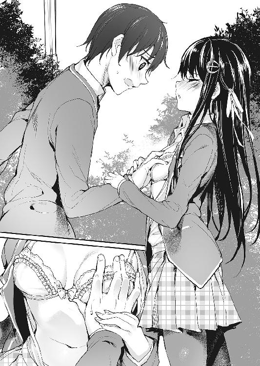
「そそそそそそんなことないよ誤解だよ!?」
「えっ」
「〝えっ〟って何!?」
何故そんな「噓だ！」みたいなリアクションになるのか。
「でも......小田桐くんは、えっちなゲームが好きなんでしょう？」
「そりゃ好きだけど！ で、でも、ああいうのはフィクションで、実在する人物団体とはなんの関係もないっていうか、つまりそれとこれとは話が全然別で......！」
変な誤解をされては困る。確かに一真はよくエロゲをプレイするけれど、それは決して、エロ目当てというわけではないのだ。ストーリーなりゲームシステムなり、どこかしらゲームとして『面白そう』と思える要素があるから、購入するしプレイもするのである......だってエロ目的ならＣＧ集とかのほうがずっと安く済むし。
萌香は一真に言ってくれた。『えっちでもいい』、『えっちなゲームが好きでもいい』と。一真がエロゲを好きなことを知って、それでもなお、一真に告白してくれた。
それは一真にとって、本当に、夢みたいに嬉しいことだったから。
だから、一真がエロゲを好きな理由も、ちゃんとわかっていてほしい。
「聞いてほしいんだ、水崎さん！ エロゲっていうのは、世の中の人達が思ってるほどいかがわしいものじゃないんだよ！ そもそもエロゲが十八禁なのは、〝エロがあるから〟だけが理由じゃない！ あれはいうなればドレスコード！ ＣＥＲＯにも常識にも縛られない自由な発想を可能にする為に、制作側がユーザーに求める資質なんだよ！」
例えばそう、某有名ブランドの蟲ゲーとか。触手プレイで異生物を孕まされたヒロインと、生まれてきた異生物の種族を越えた親子愛なんて、エロゲ以外の媒体では絶対に描けないテーマだと思う。
「その証拠に、業界にはどんなに作品の人気が出ても、頑なにコンシューマ移植を拒み続ける老舗ブランドがいくつもある！ これについては賛否両論あるけど、少なくとも俺は、『全年齢版が出ること』を人気作の条件みたいに扱う風潮には反対だよ！ エロゲっていう媒体だからこそ最高の良さを発揮する作品が、世の中には数えきれないくらいにあるんだから！」
固く拳を握り締め、魂込めて主張する。
......そして正気に戻った。
「あ!? い、いや、違......！ い、今のはあくまで一般論で、別に俺がそういう風に思ってるってわけじゃなくて......!!」
まずい。つい、語りに熱が入ってしまった。あんなことまで言うつもりはなかったのに。
普段話下手な癖に、一度勢いがつくと止めどころがわからない──コミュ障にはよくあること。
（やばいやばいやばい......！ 水崎さん非オタなのに、エロゲのことであそこまで熱くなるとか絶対引かれるだろ......！）
仮に相手がガチオタであっても、問答無用でドン引きされたかもしれないが。
（と、とにかく、早く誤魔化さないと......！）
必死に言い訳を考えるが、焦り過ぎて頭が上手く回ってくれない。
だが、萌香のリアクションは、一真の予想とは違っていた。
「......なら、小田桐くんが教えて」
「え？」
「私......小田桐くんと、もっと、仲良くなりたいの。だから、〝えろげ〟のことを、もっと教えて。小田桐くんが、大事に思っているもののことを」
「い、いや、そこまで大袈裟に言うことじゃ......」
控えめにツッコミを入れると、萌香が一歩、一真との距離を詰めてくる。
そして言った。上目遣いに一真を見て、乱れた制服も直さないまま。
「私を......調教してくれる？」
......あれ？
これ、なんてエロゲ？
二章 彼女がエロゲをする理由
「──小田桐くん。待たせてしまってごめんなさい、行きましょう」
放課後のＨＲ終了後。担任が教室を出ていくと、朝に約束した通り、帰り支度を終えた萌香が声を掛けてくる。
瞬間、騒がしかった教室に激震が走った。
まだＨＲが終わってそんなに経っていないから、教室には大半の生徒が残っている。その全員が驚愕の表情で、向かい合う一真と萌香を見つめていた。
それはそうだろう。何しろ水崎萌香といえば、誰もが畏れ敬う孤高のクールビューティー。そんな彼女が、一真のような地味男子に声を掛けたりしたのだから、そりゃあ誰だって仰天するだろう。
「............」
正直、ものすごく居にくい。突き刺さる視線から逃げるように、一真は萌香の後ろにくっついて教室を後にする。
廊下に出てしばらく歩き、周囲に人の姿がなくなったところで、
「み、水崎さん......！」
「何？ 小田桐くん」
勇気を出して声を掛けると、萌香が足を止め、こちらを振り返った。
「その、さっきのことなんだけど......ああいう風に教室で話をするのは、もうやめたほうがいいと思うんだ」
「どうして？」
「ど、どうしてって、そりゃ、俺と水崎さんが仲良さそうにしてたら、それだけで目立つし......その、つ、付き合ってることが、クラスの皆にバレるかもしれないしさ」
ただでさえ萌香は目立つ存在なのだし、さっきみたいなことを続けていたら、すぐに変な噂が立ってしまうだろう。
......別に、付き合っているのは本当なのだから、そんなこと気にする必要がないと言えばそうなのだが。
それでも一真としては、萌香とのことはできるだけ秘密にしておきたかった。人と話すのはあまり得意じゃないし、変に注目を浴びるのは、なるべくなら避けたい。
しかし、そんな一真の心配をよそに、萌香は不思議そうに首を傾げた。
「でも、ただ少し、話をしただけでしょう？ クラスにも、男の子と仲がいい女の子は大勢いるのだし、そのぐらいで、変に勘繰られたりは、しないと思うけれど」
「そりゃ、普通はそうかもしれないけど、俺は普段、あんまり女子と話したりしないから......」
「............四ノ宮さんは？」
「え？」
「四ノ宮さんと小田桐くんは、いつも、教室で一緒にいるわ。とても仲がいいって、クラスの皆も言っているし」
「そりゃ、あいつは幼馴染だし、クラスの皆も〝そういうもんだ〟って思ってるから......」
「........................」
「あの、水崎さん......？」
萌香が急に黙り込んでしまったので、一真は不安に駆られる。何か、まずいことを言ってしまっただろうか。
「え、えっと......ごめん、俺、何か気に障ること──」
「大丈夫。そうじゃ、ないから......それより、早く行きましょう」
そう言って、さっさと歩き出してしまう萌香。置いて行かれる格好になり、一真もやや慌てて後を追う。
二人が向かっているのは、旧文化部棟の三階にある〝サブ研〟の部室だ。正式名称はサブカルチャー研究会。一真が所属する、この学校唯一のオタク系文化部である（正式には同好会だそうだが）。
その部室で、一真は萌香と、一緒にエロゲをやる約束をしているのだ。
◆◆◆
サブカルチャー研究会の部室は、廊下の突き当たり。三階の一番奥にある。
他の文化部の部室に比べ、部屋の面積はやや狭い。精々準備室ぐらいの広さしかなく、壁面を埋めるように、漫画やライトノベルやらが詰まったラックが並んでいる。奥の空いたスペースには机が置かれ、真新しいノートパソコンがでーんと鎮座していた。
「すごい......パソコンがあるのね」
「備品じゃなくて、部長が自分で持ち込んだやつらしいけどね。でも、部室に置いてあるものは、部員なら好きに使っていいってことになってるんだ」
「......でも、部室でえっちなことをして、本当にいいの？」
「その言い方は誤解を招くからやめて！」
それはそれとして、部室でエロゲをやって大丈夫なのかという話だが、結論から言うと問題はない。
いやもちろん、教師とかにバレれば大目玉は必至だが。でもこの部室は内側から施錠できるし、覗き窓みたいなものもない。音が外に漏れないようにだけ気を付ければ、こっそりエロゲをやることは可能なのだ。
萌香に椅子を勧め、その間にパソコンの電源を入れる。
（......ど、どうしよう）
まだゲームを始めてもいないのに、一真は早くもそわそわし始めていた。
だって、まだ付き合い始めて二日しか経っていないのだ。萌香と二人でいるだけでも緊張してしまうのに、よりにもよって一緒にエロゲをプレイするなんて、羞恥プレイにもほどがある。
（まあ......嫌ってわけじゃないけど）
むしろちょっとだけ、期待していないこともないというか。こう、ラッキースケベとか、ラノベのお約束とか、そういう男のロマン的な意味で。
（いや別に、変なこと考えてるわけじゃないけど！ ないけど......！）
煩悩を捨て去ろうと、ぶんぶん首を振る。隣に座る萌香が、きょとんと瞬きをした。
「......えっと、一応取説あるけど、読む？ 基本的には普通のＡＤＶだから、操作はそんなに難しくはないけど......」
「取説って？」
「あ、聞いたことない？ ゲームの取扱説明書のことだよ。操作方法の他に、ストーリーのあらすじとか、簡単なキャラ紹介なんかも載ってるんだ。えっと、これなんだけど......」
カバンに隠していたエロゲを取り出し、説明書を萌香に渡す。
今日、一真が持ってきたのは、例の『最終痴漢バス３』。プロの痴漢である主人公が、全ての痴漢の夢である『最終痴漢バス』への乗車券をゲットする為、警察の捜査網を搔い潜りながらターゲットを痴漢しまくっていくという、痴漢シミュレーションゲームである......一応言っておくけどツッコミ禁止。
萌香は非オタだし、いきなり陵辱要素のあるゲームを勧めるのはハードルが高いかもしれないとも思ったが、色々考えた末、一真はやっぱりこれにしようと決めたのだ。
だって、萌香は昨日、言ってくれたから。あの、公園での出来事の後に。
『私......知りたいの。小田桐くんのこと......小田桐くんが好きなもののことを』
その言葉を聞いて、一真は思ったのだ。
......これは誰にも話したことはないが、一真はエロゲの中でも、特に、陵辱系の作品を好む傾向があった。二次エロの同人を見る時も、純愛モノよりそっちのほうに目が行く。
二次元では陵辱萌えなんて珍しくもない嗜好だし、フィクションと現実が違うこともちゃんとわきまえているけれど......やっぱりちょっとは、引け目があって。
だから、思ったのだ。
もしも萌香が、一真と同じようにこういうエロゲを好きになってくれたら。
彼女と一緒にエロゲをやって、『すごい』、『面白い』と、同じテンションで萌えを語り合えたら。
それはきっと、最高に楽しい。
それこそ、夢みたいに。
（一応、保険用にエロ薄いやつも持ってきてあるし、まあ、触手系とかに比べたら、痴漢モノなんてライトなほうだろ......多分）
......やっぱり考え直したほうがいいだろうか。
自問自答を繰り返す一真の横で、萌香は黙々と取説を読み進めている。
「......これは、男の人が、女の子に、痴漢をする話なのよね」
「あ、うん。そう、なるんだけど......」
答えながら、一真は萌香の顔を覗き込む。気の所為か、彼女の表情がなんだか曇っている気がしたのだ。
「えっと......抵抗あるなら、やっぱり別のにしようか？」
「......いいえ。そういうわけじゃ、ないけど」
呟いて、萌香はまたページをめくる。
次の瞬間、その手がぴたりと静止した。
「............ねえ小田桐くん。このゲーム、主な舞台はバスの中なのよね？」
「そうだけど、それがどうかした？」
「......公共の乗り物の中でこんなに服を脱いだら、いくらなんでも、周りの人が気付くと思うのだけれど」
萌香が見つめているのは、説明書に掲載されたサンプルＣＧ。主人公に痴漢され、ヒロインがあられもない格好になっているイラストだ。当然シチュエーションはバスの車内なので、背景には大勢のモブが描かれている。
常識的に考えて、ツッコミどころのあり過ぎる光景だった。
「こ、この主人公には特殊能力があって、周囲の干渉を拒絶する特殊なフィールドを発生させることができるんだよ！ 例えば『封●』みたいな！」
「............」
「いやほんと！ 本当にそういう設定なんだって！」
むしろ、本当にそういう設定になっているからこそ問題なのかもしれないが。
「......そういえば小田桐くん」
「え？ どうかした？」
「聞いたのだけれど。オタクの男の人は、自分の好きなキャラのことを、〝嫁〟というのよね」
（ぶっ!?）
急所を抉り抜くかのような問いだった。
「小田桐くんの嫁は、どのキャラクターなの？」
「......こ、この、体操やってる女子高生、的な......」
「..................そう」
『そう』という返事が返ってくるまでに、明らかに意味深な間があった。
「......小田桐くんは、胸の大きい子が好きなのね」
「やめてくださいしんでしまいます!!」
ここで、『おっぱいの嫌いな男の子なんていません！』と高らかに叫べたら、どんなにいいだろう。
しおしおと打ちひしがれる一真だったが、次の瞬間、萌香は思いがけない問いを投げ掛けてきた。
「じゃあ......私は？」
「......え？」
「私の胸は......好き？」
ちょっぴり恥ずかしそうな表情で、こちらの顔を窺ってくる萌香。
「い、いや、そんな......す、好きって......っ」
思わず、視線は萌香の胸に。クラスの女子に比べるとやや小振りではあるが、それでも、おっぱいはおっぱいだ。
──不意に蘇ってくる。昨日、萌香の胸を揉みしだいた時の、あの柔らかな感触。
（いや揉みしだいてないから！ ちょっと触っただけだから！）
指を動かしていなければセーフのはずだ......そう信じたい。
必死に自己弁護を図る一真の横で、ふとぶつぶつ言う声が。
「......やっぱり、少し、小さい......？ でも、この女の子のはちょっと大き過ぎるんじゃ......こんなに大きい人、滅多にいないと思うのだけれど......」
「み、水崎さん......？」
そうこうしているうちに、パソコンが立ち上がった。一真はログインを済ませると、プログラムメニューから『最終痴漢バス３』を起動させる。
「えっと、じゃあ始めるけど......大丈夫？ なんか聞きたいこととかない？」
「大丈夫。説明書に書いてあったことは、一通り覚えたから」
そうこうしているうちにもゲームは動いていた。お決まりの注意書きがいくつか続き、やがて無駄にスタイリッシュなオープニングムービーが流れ出す。
──と思ったら即行で飛ばされた。
「え!? オープニング飛ばすの!?」
思わず声を上げたら、萌香がやや驚いたようにこちらを見た。
「......いけなかった？」
「い、いや、いけないってことはないけど......。でも、初プレイなんだし、折角だから見たほうがいいんじゃないかっていうか......そ、それにさ、このゲームのオープニング、曲がめちゃくちゃカッコイイんだよ！ 〝ただの陵辱ゲーなのに本気出し過ぎだろ〟って感じで！」
「......そうなの？」
後半の部分は言うつもりはなかったのだが、意外にも、萌香は興味を示してきた。
途端、一真は急に、熱く語ってしまったことが恥ずかしくなる。
「あ、う、うん......えっと、だから......水崎さんも、好きになってくれたら、嬉しいなと思って......」
なんとか誤魔化そうとしたら、なんか余計に恥ずかしい感じになった。......いや、むしろ気持ち悪いのかこれは？
「......え、えっと、ごめん......」
「......どうして、謝るの？」
「いやだって、変なこと言っちゃったから......」
「そんなこと、ないわ。......その、小田桐くん。そのオープニングというのは、一度飛ばしてしまったら、もう見られないの？」
「え？ いや、どこも押さないでしばらく待ってればまた再生されるけど......」
「そう。なら、もう一度最初から見ましょう？」
「え、でも......いいの？」
「ええ。......だって私も、聞きたいもの」
──小田桐くんが、好きな曲を。
そう言う萌香の声は、別に可愛らしいわけでも、甘えた風でもなくて。いつもと何も変わらない、落ち着き払ったクールボイスだったけれど。
でも、その一言を聞かされただけで、一真はなんだか、そこら中を闇雲に走り回りたいような気分に駆られた。
（そ、そっか......俺が『好きだ』って言ったら、水崎さん、聞いてみてくれるんだ......）
なんだろう。なんだかやばい。
こんなのきっと大したことじゃないのに、自分でもちょっとどうかと思うくらい、嬉しくなってしまっている。
「......どうかしたの？ 小田桐くん」
「い、いや。なんでもないよ」
妙にふわふわとした気持ちで、流れ出すオープニングテーマを一緒に聞く。萌香と二人でいることが、くすぐったくて仕方がない。
（......でも。なんか、いいな。こういうの）
一緒にエロゲをしたいなんて言われた時は、正直どうしようかと思ったけれど。
でも、こういうのも──意外と、悪くないのかもしれない。
......なんて思っていた時期が俺にもありました！
「............」
「────」
部室には、沈黙だけが満ちていた。
俯き、だらだらと冷や汗を流す一真と、口を閉ざしてただただ画面だけを見つめる萌香。
微動だにしない二人の前で繰り広げられるのは、『最終痴漢バス３』のプロローグを飾るイベント。
すなわち、ヒロインがバスの中で男達に［自主規制］されるシーンだった。
でーんと画面一杯に表示される、モザイクと肌色だらけのＣＧ。スピーカーから鳴り響くエロゲ声優さんの御声とピー音。そこに時折、「ぐちゅ」とか「ぬちゅ」とかいった、無駄にハイクオリティなＳＥが混じる。
（き......消えてしまいたい......）
空気の重さに負けたように、一真は深く深く項垂れる。
（そうだよ！ そりゃこうなるに決まってるだろ！ 馬鹿か俺！ なんで普通の純愛ゲーにしとかなかったんだよ......!!）
萌香の無言が怖い。せめて罵倒するとかしてくれたら、一真も「それは違うよ！」みたいなノリで反論できたかもしれないのに。
萌香は今、何を思っているのだろう。一体どんな顔で、この色々とあれなイベントシーンを見つめているのか。知りたくないけれど、確かめないのも居た堪れない。
（............）
葛藤することしばし。結局確かめたい気持ちが勝って、一真は恐る恐る、萌香の横顔をチラ見する。
でも、
（......え？）
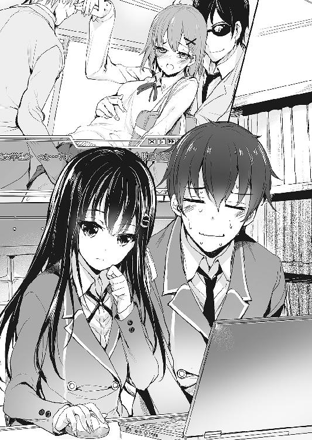
萌香の表情は、想像していたどれとも違っていた。
いや、表情自体に目立った変化はなかったのだが。
なんというか、雰囲気──わかりやすく言うと、どことなく元気がないように見える。
「水崎さん......その、大丈夫？」
「えっ......」
「いや、その......なんか、具合、悪そうだから」
「そ、そんなこと、ないわ......私、平気よ」
萌香はそう言うが、その表情には明らかに力がなかった。
（やっぱり、こういうゲーム嫌だったんじゃ......）
「やっぱりやめようか？」と、一真が提案しようとした時。
──ぐぅ。
エロボイスが響き渡る部室に、なんとも場違いな音が響いた。
いわゆる、お腹の音。
（............えっと）
現在部室にいるのは二人だけ。一真に覚えはないのだから、今の音はつまり。
「......水崎さ──」
「なんのこと？」
「え？」
「私には、何も聞こえなかったわ。小田桐くんの、気の所為じゃないかしら」
一真と目を合わせないまま、萌香は早口に言う。しかしその視線は不自然に泳ぎ、額には汗が浮かんでいた。
......つまり。
（......こういう時は、黙ってたほうがいい......のか？）
──と、
「......あれ？ ルリじゃーん！ 何してんのー、こんなとこでー？」
「──ふぇ!?」
ドターン！ バタバタバタッ！ ガタタ！
廊下のほうがにわかに騒がしくなり、一真も萌香も、弾かれるように立ち上がる。
「うっわ、大丈夫？ なんか今すんごい音したけど」
「だ、だいじょぶ！ な、な、なんでもない！ 全然なんでもないから！」
「えー？ ホントー？ だってなんかすごい勢いで壁に頭ぶつけてたじゃん」
「い、いいの！ あたし頭硬いから！ そ、それよりっ、ちょ、ちょっとこっち！ こっち来て！」
ドアの向こうから聞こえる、ものすごく聞き覚えのある声。それが、わたわたと遠ざかっていく。
（......今のって）
ドアを開けて廊下の様子を窺ってみるが、そこは既に無人で、誰の姿も見えなければ声も聞こえない。
「あ、あの......小田桐くん？」
「いや、ごめん。えっと、よくわからないけど、多分なんでもないんじゃないかな......？」
何事かと聞きたそうな萌香に、首を傾げてそう返す。
実際一真にも、何がなんだかさっぱりわからなかった。
その後も、一真と萌香は引き続き『最終痴漢バス３』をプレイ。やがて下校時刻になり、続きは明日に、ということになった。
「お待たせ。......えっと、じゃあ、行こうか」
「ええ」
荷物をまとめ、二人揃って部室を出る。
特に『一緒に行こう』と話したわけではなかったけれど、どうせ向かう先は一緒だから、自然と並んで歩く格好になる。
しかし、昇降口につき、靴を履きかえて校庭に出た後も、萌香は一真の隣で、つかず離れずの距離を保ち続けていた。
（これは......『一緒に帰る』ってことで、いいのか？）
登校時と違い、下校については、特に『一緒に帰りましょう』と言われたわけではない。付き合っているのだから、特に約束がなくても一緒に帰るのが当然なのかもしれないが......。
（いやでも、そう決まってるわけじゃないし......一応確かめるか？ でも、普通はそんなの一々聞かないのかもしれないし......）
「一緒にエロゲ」のインパクトが強過ぎてすっかり忘れていたが、そもそも一真は、誰かと付き合うのなんて初めてなのだ。ただ一緒に帰るというだけでも、一真にとっては十分に緊張するし、ドキドキすることなのである。
（ど、どうする？ 勘違いだったらむちゃくちゃ恥ずかしいし、やっぱりちゃんと確かめといたほうが......）
悶々としながら歩いていると、
「小田桐くん」
「ひゃい!?」
嚙んだ。
「......大丈夫？」
「だ、大丈夫！ そ、それより何？」
誤魔化す代わりに尋ね返すと、萌香はほんの少し、恥じらうような気配を見せた。迷うように、視線がゆっくりと足元に落ちる。
「いえ......その、良かったら、少し、遠回りして帰りたいのだけど......」
「え？ え、えっと......そ、それ、俺と一緒に帰ってくれるってこと、だよね......？」
ドキドキしながらそう言ったら、何故か、萌香は驚いたようにばっと顔を上げた。その上、足までぴたりと止めてしまう。
「......嫌、だった？」
「そそそっ、そんなこと！」
あるわけがない。
必死になってぶんぶんと首を振ったら、萌香はほっと息を吐いた。
「そう。......良かった。じゃあ、少し遠回りになるけれど、いい？」
「う、うん。もちろん」
口に出すのは気恥ずかしいが、萌香と一緒にいる時間が増えるのは、一真だって嫌じゃない。
なんといっても、萌香はとびっきりの美少女だし。それに、生まれて初めてできた『彼女』でもあるわけだし。
とはいえ、何を話したらいいかは相変わらずわからないので、緊張するのは確かなのだけれど。
校門を出てしばらく歩いたところで、萌香の先導で脇道に入る。
大通りから一つ道を逸れると、辺りに広がるのは閑静な住宅街。
つまりは、それだけ沈黙が浮き彫りになるということで。
（か、会話......！ 会話を......!!）
必死に頭を回転させる一真だったが、言うべきことが何も思い浮かばない。
別に、話したいことがないわけではないのだ。「よくこんな道知ってるよね」とか、「普段からこの辺歩くの？」とか、「ところでさっきのエロゲどうだった？」とか。
ただ、口に出すタイミングがわからないだけで。
（いや、弱気になるんじゃない......！ さっき部室にいた時とかちょっといい感じだったし、ここでフラグ立てなくていつ立てるんだ！）
「み、水崎さ──！ あれ......？」
意を決して口を開き、同時に気付く。隣を歩いていたはずの萌香の姿が、いつの間にか消えていた。
「水崎さん？」
振り返ると、萌香は道の真ん中で足を止め、何かをじーっと見つめていた。
（......『喫茶・銀のぶどう』？）
名前から察するに、どうやら喫茶店らしい。店の前にはボード型の黒板が置かれ、『今月の特盛・スペシャルパンケーキ』と達筆な字で書かれている。
萌香の目は、その文字を食い入るように見つめていた。
そういえば......と思い出す。さっき部室で、萌香がお腹を鳴らしていたこと。
「えっと......そんなに気になるんなら、ちょっと、寄っていく？」
気が付いたら、一真はそう尋ねていた。
そしてすぐに、自分が何を言ったかに気付いて、ガチンと身を強張らせる。
（う、うわ、やばい......！ そんなつもりじゃなかったのに......！ これじゃ、一緒にお茶しようって言ってるみたいじゃないか......！）
しかし、だ。考えてみれば、自分達はもう赤の他人ではない。付き合って日が浅いとはいえ、れっきとしたカレカノである。
だったら、お茶に誘ったぐらいで、『うわ、キモ』なんて思われたりはさすがにしないだろう。......しないよね？
気を取り直し、一真はドキドキと萌香の返事を待つ。
が、
「ええと......でも、いいの。特に、寄りたかったわけじゃ、ないから」
「..................そ、そうですか......」
「......それに。食事をしながらだと、小田桐くんと、話せないし」
「──え？」
どん底から一転。思いがけない言葉を聞かされて、一真はぱっと顔を上げる。
「実は......私、今日は、小田桐くんに、色々と聞きたいことがあって。それで、遠回りして帰りたいって、そう言ったの」
「あ、そ、そうだったんだ！ そういうことなら、なんでも聞いてよ！」
良かった。萌香は何も、一真のことが嫌でお茶の誘いを断ったわけではないのだ。
（そ、そうだよな。そもそも俺と水崎さん、付き合ってるんだし......！ 嫌われてるわけじゃないのは確かなんだから、そんなにびくつくことないんだよな！）
再び歩き出しながら、一真はうきうきドキドキと、萌香からの質問を待つ。
（けど、何聞かれるんだろ。やっぱり好きな食べ物とか？ そういえば水崎さん、家庭科の成績もいいって聞くし、もしかして弁当作ってきてくれたり......！）
「......早速だけど」
「うん！ 何？」
「小田桐くんは、胸の大きい子が好きなのよね？」
「ひでぶっ──!?」
不意打ちな上に強烈な威力の一撃が、浮かれた気分を紙屑のように吹き飛ばす。
「つまり、えっちな女の子のほうが、いいということよね？」
「いいいい、いや、そそ、そんなこっ、こここととはけけ決して......！」
「それじゃあ......やっぱりスカートも、パンツが見えるくらい、短いほうがいいの？」
「ちちちがっ、パ、パンツなんてそ、そんなもの別に見たいわけじゃ......っ」
「......でも、今日やったゲームに出てくる女の子達は、皆スカートが短かったわ」
「はう......!?」
「パンツも見えていたわ」
「ひぎぃ!?」
そして訪れる、つかの間の沈黙。
「......小田桐くんは」
ほんのちょっとだけ頰を染め、軽く唇を尖らせて。そんな拗ねたような顔で、萌香は一真に言う。
「小田桐くんは......えっちな人ね」
「──────」
最早呻く気力もなく、一真は遠い目をしたまま、がっくりとその場に崩れ落ちそうになったが、
「でも......いい。頑張るから」
「......え？」
ふと耳に届いた言葉。意味がわからなくて聞き返すけど、萌香は答えなかった。
代わりに、小さな声で、誰にともなくこう呟く。
「だって私は......小田桐くんの、『彼女』だもの」
──ちなみに、萌香の質問責めはその後も続き、一真は結局、それら全てに詳細な回答と解説を返す羽目になった。
その一つ一つに、萌香は熱心な頷きを返していたけれど──その時彼女が何を思っていたのか。
一真が全てを知るのは、翌日の朝になってからのことだった。
◆◆◆
「......あれ？」
駅の改札を出てすぐ、一真はぴたりと足を止めた。
一昨日、昨日に続き、今日も一真は、萌香と待ち合わせて一緒に学校に行くことになっている。
だが、妙だった。昨日のこの時間に来た時は、萌香が先に来て待っていたのに、今日はどこにも彼女の姿が見えないのだ。
（良かった。水崎さん、今日はまだなんだ）
昨日、一昨日と待たせてばかりで心苦しかったが、これなら一安心だ。
いつ萌香が来てもいいよう、目につきやすい場所で待っていると、五分と経たないうちに彼女が姿を見せた。どうやら一真のすぐ後の電車だったらしい。
「ごめんなさい、小田桐くん......！ 遅れてしまって......」
「そんな、謝ることなんてないよ。俺もついさっき来たところだし。それに、昨日も一昨日も俺のほうが待たせちゃったんだから、水崎さんが気にすることないって」
「......そう？ それなら、いいのだけど」
よほど焦っていたのか、駆け寄ってきた萌香は軽く息を切らしていた。そもそも待ち合わせの時間にはまだ間があるのだから、ここまで焦る必要もなかったと思うのだが、来る途中で何かトラブルでもあったのだろうか？
「大丈夫？ なんだったら、少しその辺で休んでから──」
「ありがとう、でも、いいの。大丈夫だから。......それより」
そこで、萌香は急にそわそわするような様子を見せた。何か言いたげな......というより聞きたげな目が、じっと一真を見上げてくる。
「その......ね。何か、気が付かない？」
「え？」
なんのことだろう。周囲を見回してみても、特に変わったところなんてない気がするが。
「えっと、ごめん。俺、よくわからなくて......」
「............」
瞬間、萌香の表情が急激に萎れた。
「え!? え、ご、ごめん！ 俺、何か変なこと言った？」
「......違うわ。いいの。忘れて。ただ......私の頑張りが、足りなかっただけだから」
「──」
その瞬間、一真の脳裏に閃くものが。
......ひょっとするとこれはあれだろうか。彼女が髪型を変えてきたのに、彼氏のほうは全然それに気付かなくて、彼女に理不尽に怒られまくるというリア充にありがちなあのイベント。後で彼女に謝罪と賠償を要求されるところまでテンプレ。
（......ってまずいだろそれ!?）
慌てて萌香の姿をよく確かめてみるが、一体どこがどう違っているのかさっぱりわからない。
そうこうするうちに萌香が歩き出してしまったので、一真はそれ以上尋ねる機会を失ってしまう。
おかげで手を繫ぐことさえできないまま、二人は黙々と通学路を歩いた。
その間も、萌香は落ち込んだ様子で項垂れている。
しかも。
「......どうしよう。こんなはずじゃ......やっぱり、もっと思い切って......で、でも、見るのは小田桐くんだけじゃないし......せめて二人きりの時に......」
そんな感じで、ぶつぶつぶつぶつと独り言を呟き続けているのだ。声が小さいから断片的にしか聞こえないけれど、一真は気になって仕方がない。
（これ、明らかに俺の所為だよな......）
聞こえる。フラグのへし折れる音が。
（えーと、髪型、は昨日と同じだし......服、は制服だろ......あとは......）
......下着？
（いや確かめようがないし!!）
そもそも昨日の下着だって知らないし。
（あとは、あとはっ......あ、靴下とか!?）
ほとんど藁にも縋る思いで、ばっと視線を下げる。
そこでようやく、小さな違和感に気が付いた。
（......あれ？）
なんとなく。本当になんとなくだが、萌香のスカートが、いつもと違う、ような？
（いや、でも、普通の制服のスカート、だよな......？）
何か、何かが違っている気がする。が、それがなんなのかがわからない。
そうこうしているうちに、学校に到着してしまった。
校舎に入ると、萌香は寄るところがあるからとどこかへ行ってしまった。
先に行っていてと言われたので、一真は一人で教室に向かう。
八時前というだけで、校舎の中は驚くほど静かだった。グラウンドのほうからは朝練に励む運動部の声が聞こえてくるが、教室や廊下に人の姿は乏しい。部活もないのにこんな時間に登校してくる人間は、やはり少ないのだろう。
──とか思っていた矢先、顔見知りに出くわした。
「......あ」
「あー。一真じゃん。どしたの？ こんな時間に」
階段の手すりからひょこっと顔を出し、こちらを見下ろす顔見知りこと瑠璃。
忘れていた。そういえば、彼女も部活組だったのだ。
「よう。こんな時間から朝練なんて、大変だな。合唱部」
「違う違う。今日のは朝練じゃなくて自主練。課題曲でどーしても上手く音取れないとこあってさー。ほらここ」
手にしたプリント（文脈的に恐らく楽譜）をぺらぺらと振りながら、瑠璃が階段を降りてくる。
が、それを下の階から見上げていた一真は、顔を赤くして大いに焦った。
「ちょっ......！ おま、バカ！ スカート！」
「ふぇ？ ......きゃあ!?」
一瞬きょとんとした後、瑠璃は真っ赤になってスカートを押さえる。
「～～～ッ！ バカ！」
「お、俺の所為じゃないだろ今のは！ お前のスカートが短過ぎるのが悪いんだろうが！」
「み、短くない！ このぐらいフツーだってば！ あたしより短い子だって一杯いるもん！ そ、それに、そういう子達は大体見せパンだし！」
「それを俺に教えてどうする気だお前!?」
喚き返しながら、一真は大股で階段を上りきる。途端、瑠璃はまるで不審者から身を守るように、スカートを押さえたまま踊り場の隅に退避した。
そして、紅潮した顔でぼそりと言う。
「......み、見た......？」
「......見てない」
「今ちょっと間があった！ 目逸らした！ やっぱり見たんでしょ!?」
「だ、だから見てないって言ってるだろ！」
本当に見ていない、いちご柄のパンツなんて。「お前高校生にもなってそれかよ」とか、そんなことは断じて思っていない。いないったらいない。
「うぅぅ......！ き、今日の下着、あんま可愛くないやつなのに......」
（......じゃあ可愛いやつだったらいいのかよ）
危うく口に出しそうになったが、寸前で思い直した。そんなことをしようものなら、また真っ赤になって怒り出すに決まっている。っていうか見てないと言っているのに。
「そんな嫌なら、最初からスカート短くしなきゃいいだろ。それか、なんか下に穿くとか。俺はよく知らないけど、今ってそういうの、色々あるんだろ？」
「だめだってばそんなん！ だって可愛くないじゃん！」
「......そういうもんか？」
そうは言っても、スカート丈を短くするのは校則で禁止されているのだ。ほとんどの女子は守っていないし、学校側も半ば諦めている感があるが、それでも厳しい先生はいて、注意されている女生徒をたまに見かける。多分瑠璃も、一度や二度は指摘されたことがあるに違いない。
（まあ、水崎さんだったらそんなこともないだろうけど）
実際彼女は、きちんと校則を守ったスカート丈で登校している。それでも全然野暮ったく見えないのは、それだけ彼女の容姿が優れているからなのだろう。
（......こいつだって、その辺は水崎さんに負けてないんだし。こだわることないと思うけどな）
まあ、瑠璃は一真と違って友達の多いリア充だし、彼女達に合わせなくてはいけないとか、そういうリア充ならではの苦労があるのかもしれない。
「......俺教室行くけど。お前は？」
黙って立ち去るのもなんなので、一応声を掛けてみる。
さっきの今だったのでまた嚙み付かれるかとも思ったが、瑠璃は案外素直に、
「......じゃあ、一緒に行く」
「ん。了解」
頷き、歩き出そうとしたところで。
「......四ノ宮さん？」
「ふぇ？」
瑠璃を呼ぶその声は、萌香のものだった。どうやら、用事が済んで追い付いて来たらしい。
名を呼ばれた瑠璃、そしてそれを聞いた一真も、ほぼ同時に声のするほうに顔を向け、
「「──へ？」」
直後。二人揃って、ぽかんと目を点にした。
入学以来、テストでは満点しか取ったことがないという、秀才中の秀才。
他の学校に比べて若干厳しめの校則を、律儀に、かつ完璧に守るストイックっぷり。
そんな、校内では知らぬ者のない優等生、水崎萌香のスカート丈が、激変していた。
今にも何かがちらっと見えてしまいそうな、ぎりぎりの超ミニスカートに。
◆◆◆
「......えー。と、いうわけでー、織田信長は大敵の今川義元を倒しー、天下に名乗りを上げたわけでー......」
静まり返った教室に、眠気を誘う間延びした声が響いている。
四限目の、日本史の授業だった。担当の男性教諭は定年間近のおじいちゃん先生で、悪い人じゃないけどとにかくしゃべりが遅い。
必然的に、日本史の授業中は男女を問わず、居眠りする生徒が続出するのだが。
しかし、今日に限っては、とても居眠りどころではない緊張感が教室中を包んでいた。
「えー、この戦いをー、『桶狭間の戦い』とーいうわけだがー......」
席に座る生徒達は、誰もがぴんと背筋を伸ばし、身じろぎひとつしない。様子がおかしいのは教師も同じで、教壇に立つ老教師の額には、びっしょりと汗が浮かんでいた。
スカートを短くした萌香が教室に現れてから、教室内はずっとこの調子だった。
無理もない。クラスメイトにとっても教師にとっても、水崎萌香は最近じゃ珍しいくらいの『完璧な』優等生だったのだ。
そんな彼女がいきなりその辺のギャルのようなスカート丈で現れたら、そりゃあ誰だって動揺する。しかも本人は、「私どこも変わってませんけど？」とばかりにいつも通りの態度なのだ。ここまでくると、動揺を通り越していっそ怖い。
「えぇー......ここまででー、何か、質問のある人ー......」
まるで何かに怯えるかのように、そろそろと教室を見回す先生。誰の手も上がっていないことを確かめると、彼はあからさまにほっとした様子で、教科書に視線を戻し──。
「──先生。一つ、質問があります」
瞬間、教室にいた誰もが、一斉にびくっと身を竦ませた。
「あ、ああ......水崎か......。ええと、何かな......？」
発言を促され、萌香がすっと席を立つ。姿勢の乱れも動作の淀みも一切ない、まさにお手本のような起立の仕方だ。
「先生。『桶狭間の戦い』については、既に一学期の授業で触れています」
「え......？ あ、ええと......そ、そうだったかな......？」
「はい。今日は教科書の96Ｐ、『鎖国の終焉 ～黒船来航と攘夷運動～』からです」
「そ、そうか......。すまん、どうもうっかりしていたようだ。わ、わしも歳かな......ははは......」
「いえ。時には以前の授業内容に触れることも、復習という意味では、良いことだと思います。それでは、授業を続けてください」
「あー......えっと、水崎。ちょっと待ちなさい」
座りかけた萌香を、教師が制する。恐々と、まるで爆発物でも扱うように。
「はい、何か？」
「ああ、うん、そのな......こ、答えたくなかったらいいんだが......」
「はい」
「その......だな、水崎。お前......一体どうした、その制服」
──言った。その瞬間、教室にいた全員が同じことを思った。
「......なんのことでしょう。私は、いつも通りですが」
「い、いや、いつも通りって......」
「私は、いつも通りです」
答える萌香の表情は、相変わらず不動。
しかし、目線だけはあからさまに泳いでいた。顔自体は全くの無表情なので、それが見る者に、なんとも言えない恐怖と威圧感を与える。
「............ああ、うん。......そうだな、うん。先生が悪かった......」
先生は早々に逃亡、もとい避難を選択した。
萌香が着席し、何事もなかったかのように授業が再開される。
しかし、空気の重さは、明らかに増していた。
「......み、水崎さん！ ごめん、ちょっといいかな？」
昼休み。教室を出て行った萌香を追いかけた一真は、周囲に人の姿がなくなったのを見計らって、彼女に声を掛けた。
「あの、さ......その、スカートのこと、なんだけど」
遠慮がちに切り出すと、萌香の頰がさっと上気する。
「に、似合っていない......？」
「い、いや、そういうことじゃなくて」
「......じゃあ、何？」
何かを期待するように、そわそわ、と体を揺らす萌香。短くなったスカートも一緒にひらひら揺れて、一真は目のやり場に困る。
「な、何っていうか......ただ、突然、どうしたのかなって......」
「......だって。小田桐くんは、スカートは、短いほうが、嬉しいんでしょう？」
「え？」
「それに、おっぱいは大きいほうが嬉しくて、パンツもたくさん見えたほうが嬉し──」
「やめてくださいしんでしまいます!!」
冗談抜きで。
（でも、それって......）
萌香は、一真の為にスカートを短くしたということだろうか。より一真の好みに適うように。今よりもっと、一真に好かれる為に──。
「で、でも......水崎さんは？ 水崎さんは、短いスカートとか、恥ずかしくないの？」
「そ、それは......っ」
「かぁぁっ」、と、萌香の顔が赤く染まる。どんな言葉よりも雄弁な返答。
けれど彼女は、きゅっとスカートを握り締めて言う。
「ほ、他の人に見られるのは、恥ずかしいけど......小田桐くんに、なら......」
もじもじと俯きながら言われて、一真も頰が熱くなる。
どうしよう。
萌香が可愛い。
妄想じゃなく、リアルの女の子にこんなことを言ってもらえる日が来るなんて、ついこの前まで夢にも──いや、夢にくらいは見たけど、でも、それが本当に現実になるなんて、ちっとも思っていなかったのに。
「あの、でも、小田桐くんがやっぱり元のほうがいいって言うなら──」
「あ、い、いや、そういうわけじゃ......！」
思わずそう言ってしまってから、はっと気付く。これじゃ、完璧に下心丸出しだ。
「え、えっと、いや、短いほうがいいってわけでもないんだけどっ......ただ、その、普段から短くするのは、さ......。ほ、他の人も見るわけだし......」
自分自身が萌香のミニスカ姿を見たいかどうかはひとまず置くとしても、他の誰かにそれを見せるのは正直抵抗がある。
だって......彼女、だし。
「だから、その......とりあえず、制服のスカートは、そんなに短くしなくてもいいんじゃないかな、って......」
一真の言葉を、萌香がどう受け取ったのかはわからない。
ただ、
「......じゃあ。二人きりの時なら、どう......？」
そう、窺うように見上げてくるから、一真は照れくささに視線を逸らす。
「え、っと......み、短いのも、いい......かな......」
「......なら、そうするわ」
顔を背けているから、萌香がどんな顔をしているのかはわからない。
でもきっと、さっきと同じくらい、可愛い顔をしているんだろう。
そう、思った。
しかし。
萌香の『頑張り』は、それだけで終わりはしなかったのだ──。
例えば、主人公がガテン系のヒロインと出逢い結婚する（そして最終的に嫁を寝取られる）エロゲをやった時。
帰り道。周囲に人気がなくなるなり、萌香は、一真のことを突然、
『それで、明日は、どんなえろげをするの？ あ......〝あなた〟......』
と、呼び出し（途轍もなく恥ずかしかったのですぐにやめてもらったけれども）。
さらに別の日の朝。監禁調教モノのエロゲをプレイした時には、待ち合わせ場所で顔を合わせた途端、
『おはよう、水崎さ──......あの、その、首につけているのは......？』
『首輪よ』
『............』
『......首輪よ？』
『いや、聞こえなかったわけじゃなくて......』
さらにさらに別の日。洗脳によってペットプレイを強制されるというイベントを見せた時なんて、部室に行ってみたら、
『..................』
『小田桐くん、どうしたの......にゃ』
『............えっと、俺の目の錯覚だったらいいんだけど。......水崎さん、その耳って......』
『大丈夫にゃ。尻尾もちゃんとつけてきているから......にゃ』
『あ、やっぱりそれ幻覚じゃなかったんだ......』
『......じ、実はっ、下着も猫の──』
『わー！ わー！ 言わなくていいからそういうことは!!』
「......はあ」
昼休み。校庭の隅っこの、あまり人気のないベンチに座って、一真は溜息を零す。
溜息の原因は、現在絶賛お付き合い中の彼女──萌香のこと。
（知らなかった......。まさかあの水崎さんが、あんなに積極的な性格だったなんて......）
そりゃあ萌香は彼女だし、一真だって、「もっとイチャイチャしたいな」ぐらいのことは思う。
しかし、萌香のアプローチはいかんせん、突飛というか、刺激が強過ぎるというか。まだ心の準備ができていない領域にまでいきなり飛び込んでくるので、喜ぶ以前にどうしたらいいかわからなくなってしまうのだ。
（まあ、嬉しくないわけじゃないけど......っていうか結構嬉しいけど）
何しろ、萌香は学内でも一、二を争う美少女だ。そんな可愛い子が、自分の前でエッチっぽいことを言ったりやったりしてくれたら、男なら誰だって嬉しいと思う。
......そう、男なら誰だって嬉しいはずだ。決して一真が変態だからだとか、そんなことはないはずだ。絶対に。
（そ、そうだ。俺は別に変態じゃない、変態なわけじゃない......。だって別に、無理矢理やらせてるわけじゃないし......風が吹いたらたまたまパンツが見えて、『ラッキー！』と思いつつ目を逸らすのと同じで......）
「小田桐くん」
「うわあ!? え、水崎さん!? い、いつの間に......！」
「......さっきから、ずっと声を掛けていたのだけれど」
「え？ あ、ご、ごめん......！」
どうやら、あれこれと考え込むあまり、萌香の声に全く気付いていなかったらしい。
「え、えっと、それで水崎さん。どうかした？ あ！ ひょっとして、一緒にお昼、とか？」
「そうじゃないの。......ちょっと、来てほしいところがあって」
「来てほしいところ？ 別にいいけど......あ、ちょっと待って」
断りを入れてから、食べかけだった昼食を片付ける。残りは放課後にでも食べよう。
と思っていたら、ふと視線を感じた。
その出所は、言うまでもなく。
「......水崎さん？」
声を掛けると、じーっと一真の手元を見ていた萌香がはっと顔を上げた。
「ち、違うの......そうじゃなくてっ」
「うん？」
「ただ、その............おいしそうだなと思って」
「そう？ 別に普通のおにぎりだけど。作ったのも俺だし」
「小田桐くんが？」
一真の昼食はいつも弁当だ。といっても、きちんとお弁当箱に入っているようなやつではなくて、大抵は自分でおにぎりを握って済ませている。高校生の小遣いでエロゲを買うには、こういった細かな節約が重要なのだ。
「......良かったら食べる？」
萌香があまりにも凝視してくるので、まだ口をつけていないのを指差して尋ねてみる。
萌香は一瞬迷う気配を見せたものの、結局は、躊躇いがちに差し出されたおにぎりを受け取った。
「じゃあ......いただきます」
一真の隣に腰を下ろし、萌香はおにぎりをぱくり。
瞬間、彼女の瞳が、ぱっと明るく見開かれた。
「......おいしい」
「そんな、大袈裟だよ」
「そんなことないわ。本当においしいもの。小田桐くんの............あむっ」
「そこで言葉を切るのは危険だからやめよう!?」
一真のツッコミを聞いているのかいないのか、萌香は熱心におにぎりをぱくつく。
もぐもぐと口を動かす横顔は、言葉の通りおいしそうに綻んでいた。そんなに美味いのだろうか。別に、何にこだわったわけでもない普通のおにぎりなのだが。
「......ごちそうさま。......ところで小田桐くん」
「何？」
「......そっちのおにぎりの具材は？」
ひとしきりおにぎりを堪能し、満足したらしい萌香に当初の目的を尋ねる。
「それで、来てほしいところって？」
「......そうだったわ」
どうやら忘れていたらしい。
「こっちよ。ついてきて」
言われるまま、萌香の後について歩き出したところで、ふと過ぎるデジャヴ。
ひょっとして、これも例のパターンなんだろうか？
（え、えっと、昨日やったゲームは確か......！）
必死に記憶を手繰っているうちに、萌香が足を止めた。校庭の隅にある、古い用具倉庫の裏手。生徒も教師も、普段は滅多に来ないところだ。
「......小田桐くん。その、昨日、一緒にやったゲームのこと、覚えている？」
「あ、え、えっと」
思い出した。昨日はゲームをやっている途中で何故か下着の好みの話になって、過去にやったゲームの中から、いいと思ったＣＧを選んで萌香に見せたりしたのである。
断っておくと、「見せてほしい」と言い出したのは萌香であって、一真が嬉々として見せびらかしたわけでは決してない。
だが、〝これを見せたら、萌香がどんな行動を起こしてくれるか〟──そう期待する気持ちがあったのは、紛れもない事実だ。
（で、でもまさか、本当に......？）
知らず知らずのうちに、ごくりと唾を飲み込む。
「......小田桐くん。その、ね」
「う、うん」
「......私も、今日......穿いているの」
（......何を!?）
気にはなるがとても聞けない。
「............見たい？」
「ふへ!? ああああ、いや、ええと、それはその、あの......！」
一真がまごついてる間も、萌香は一真のことを上目遣いにじーっと見つめ続けている。羞恥を孕みつつも、「こういうの好き？」と、リアクションを期待する眼差し。なんだか、犬がご主人様の命令を待っているみたいだった。......いや別に変な意味ではなくて。
が、彼女はじきに待ちきれなくなったようで、
「お、小田桐くんっ」
「えっ？」
勢いに気圧される一真の手を、萌香ががしっと摑む。
そして、摑んだその手を、導くように自身のスカートへ──。
「え？ え!? ちょ、ちょっと、何してるの水崎さん！」
「大丈夫......合意の上だから」
「俺合意してないよ!?」
「あっ......で、でも、全部見せるのは恥ずかしいからっ......！ できたら、ちょっと見るか、触るかだけに......！」
「触るって何っ!?」
慌てて手を振り解こうとするが、手首を摑まえる力は案外強く、中々引き剝がすことができない。どころか、じりじりと手がスカートへと近付いていく。
そして、そんな構図は端から見れば、抵抗する萌香に一真が無理矢理迫っているように見えなくもなく。
（やばい......！ こ、こんなとこ誰かに見られたら、絶対変な誤解される......!!）
──と、焦った矢先だった。
「──なっ、な、なっ......！ 何やってんのー!?」
突如として倉庫裏に響き渡る、聞き慣れた声。
ばたばたと巨乳を揺らして駆け込んできたのは、案の定、瑠璃だった。
「なっ......!? おま、な、なんでここに!?」
「バカバカバカ！ 一真のヘンタイ！ 女の子になんてことしようとしてんのよぉ!!」
「ちが、これはそういうんじゃ......！」
「知らないっ、バカバカバカバカ!! バカー!! わーん！」
よほど取り乱しているのか、瑠璃は怒りながら泣き出してしまう。
一真はどうにかして宥めようとし、萌香も誤解を解こうと口を開きかけた時。
突然、強い風が辺りに吹いた。風圧で一瞬目を閉じてしまったほどの、結構な強風。小さく悲鳴を上げて、瑠璃がスカートを押さえる。
が、普段短いスカートなんて穿き慣れていなかった萌香は、そこまで気が回らなかったらしい。
ふわりと。
優雅にフリルを揺らして、スカートが風にめくれる。
紐パンだった。
黒レースだった。
ついでにちょっと透けていた。
水崎萌香のイメージとはまるで逆の、しかし、だからこそ、一度見たら忘れられないような光景が、そこにあった。
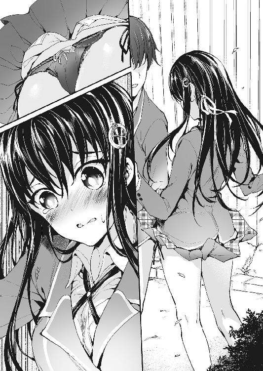
──風が過ぎったのはほんの一瞬。めくれたスカートはすぐ元に戻り、後にはただ、呆然と立ち尽くす三人だけが残される。
萌香の悲鳴が響き渡ったのは、それから五秒後のことだった。
◆◆◆
「はあー......」
深く長い溜息が、寝転んだベッドに吸い込まれていく。
（なんていうか......すごい一日だった。とにかく）
萌香に告白されて以来、何も起こらなかった日なんて一日もないけれど、今日は特にすごかった。
あの後のことは、今思い返しても、正直溜息しか出ない。
幸い、瑠璃のほうの誤解はすぐに解けたのだが、問題だったのは萌香のほうだ。
何しろ、紐パンである。黒レースである。顔中真っ赤にした萌香はすっかりカチコチになってしまい、一真が頭を下げても土下座しても、ろくに言葉も返せないような有様だったのだ。
まあ、あそこまで思いっ切りパンツを見られてしまったのだから、取り乱すのも無理はないと思うが......。
（でも......水崎さん、なんであそこまでしてくれるんだろ？）
萌香が、自分の為に努力を重ねてくれているのはわかる。今まで女の子にモテたことなんてなかった一真にとって、それは本当に天にも昇るほど嬉しいことだ。
しかし、いくらなんでも頑張り過ぎではないか、とも思うのだ。
片思いならともかく、自分達はもう付き合っているわけで。いわば既にゴールしている状態で。なら、これ以上何かを頑張る必要なんて、ないんじゃないかとも思う。
実際、一真はもうとっくに、萌香のことを『可愛い』と思っているわけだし──。
などと、一真が内心首を捻っていると、
「ふえええんっ......カズちゃ～ん......！」
「うわあああ!? あ、姉貴か......！ びっくりしたっ......っていうか、ノックしろっていつも言ってるだろ!?」
「そんなことより聞いてよおおおお......原稿終わらないのおおおお......」
一真の文句は完全に無視して、一葉は思い切りベッドにダイブしてきた。避け損なった一真は、丁度、豊か過ぎる胸に顔を潰される格好になる。
「ちょっ、お、おい──ぶっ」
「もーいやーやりたくないー書きたくないぃ......締切来週なのにいいいい......」
姉の一葉は、商業でオタ向けのエロ小説を書いている。なので、原稿執筆中はたまにテンションが振りきれておかしなことになるのだ。
「わかった、わかったからどけって！」
胸が、胸が重い......。
「じゃあコンビニでお夜食買ってきてぇ......ジャンボ肉まん二つとレッド●ル......」
「それはわざと言ってんのか!?」
「............くー」
「起きろよ!? 原稿終わらないんだろ!? 寝たら死ぬぞ本当に!! 姉貴じゃなくて担当さんが!!」
その後、一真はどうにかして一葉を叩き起こすと、頼まれた夜食を買いにコンビニに向かった。
──のだが。
「あ」
「あ」
家から一番近くにあるコンビニ。目的のものを持ってレジに行くと、幼馴染にばったり出くわした。
その手には、買ったばかりのみたらし団子（ワンパック五本入り）。
「......太るぞ」
「今日は一杯エネルギー使ったからいいのー」
一真の下手なからかいもなんのその。余裕綽々の笑顔で、瑠璃はぱくっとみたらし団子を頰張る。
そのままなんとなく、二人一緒に店を出て。やっぱりなんとなく、二人並んで、家までの道を歩き出した。
そうすることに、何か特別な意味があったわけじゃない。
ただ、瑠璃の家は一真の家の真向いで、だから当然、帰り道も同じで。
要するに、それだけの話。
「そういやお前、制服着てるけど、もしかして今帰って来たのか？」
「そだよー。今日部活の日だもん。授業終わってからずーっと練習」
「でも、朝も練習やってるんだろ？ きつくないか？ こんな時間まで」
「んー、そりゃきつくないわけじゃないけど。でもさ、コンクール近いし。練習ぐらいは、ちゃんとしなきゃじゃん」
「まあ、そりゃそうだろうけど」
なんてことのない雑談。教室にいる時は瑠璃の放つリア充オーラに気圧されてしまう一真だが、こうして学校以外の場所で会うと、昔のように気安く話せるから不思議なものだ。
垢抜ける前の、よく知る幼馴染が、帰ってきたような気持ちになる。なんだかんだ言っても、瑠璃は一真にとって、家族以外では最も親しい人間なのだ。
「なあ、瑠璃──あ」
つい昔の呼び方が出てしまい、慌てて口を噤む。
そんな一真を見て、瑠璃はさもおかしそうにくすくすと笑った。
「いーじゃん、別に。今さら無理に呼び方変えなくったって。小学校まではずーっと〝瑠璃ちゃん〟だったんだし」
「い、いつの話してんだよ！ もう高校生だぞ俺達！ お前だって、クラスの皆の前で、俺に〝瑠璃ちゃん〟とか呼ばれたら困るだろ！」
「んー？ ......あたしは、別にいーけど。それでも」
ちらっと、瑠璃が視線を寄越す。何かを探るような、確かめているような眼差し。
「......なんだよ？」
「んーん。なんでもない。......それよりさ」
気の所為か、瑠璃の声のトーンが変わった気がした。
「......一真さ。最近、水崎さんと仲いいよね」
「言っておくけど昼休みのあれは本当になんでもないからな!!」
いや、結果だけを見れば全くなんでもなくなかったが。あれは不慮の事故なのだ。そういうんじゃない。断じてない。
「わ、わかってるってば！ そうじゃなくて！」
赤い顔でばたばたと両手を振り回した後、瑠璃は躊躇いがちに言う。
「ただ......ちょっと、意外かなって。だって一真、私以外の女子とほとんど話とか、しないじゃん。『友達はマンガのキャラだけー』、的な」
「こら。人を可哀想な奴みたいに言うんじゃない」
あながち否定できない辺りがなおさら辛い。
「いや、仲いいってうか、その......水崎さんさ、俺の持ってるゲーム、とかに、ちょっと興味あるみたいで」
「ふぇ!? そ、それって、まさか、エッチなヤツ......!?」
「そそそそそんなわけないだろ！」
思いっ切り図星を指されて、露骨に動揺してしまう一真。
しかし、瑠璃のほうも、まさかあの水崎萌香がエロゲをやるなんて思わなかったようで。
「そ、そだよね！ 水崎さんだもんね！ ご、ごめん！ 変なこと言っちゃって......！」
と、失言を誤魔化すみたいに何度も何度も頷いている。下手に追及されずに済んで、一真はほっと胸を撫で下ろした。
「えーっと......じゃあ、そのゲームとか、貸してあげたりしてるってこと？」
「まあ、そんなとこ」
「ふーん......。それだけ？」
「それだけって......なんだよそれ。他に何かあるっていうのか？」
「ううん。ただなんとなく、聞いてみただけ」
呟いて、瑠璃はまた団子を頰張る。
......別に、噓をついたわけじゃない。萌香が一真の持っている『ゲーム』をやりたがっているのは、本当のことだ。
けれど、悪いことをしているような後ろめたさは、やっぱり消えなかった。
（......こいつにぐらいは、言っといたほうがいいのかな。水崎さんと、付き合ってるって）
ちらっと隣を見る。団子を食べ終えた瑠璃は、しかしまだ物足りないのか、指に付いたタレを名残惜しそうに舐め取っていた。
......いつも思うのだが、どうしてこいつはエロネタに免疫がない癖に、たまに見せる仕草や表情がやたらにエロいのだろう。
その癖、こっちがそれを指摘すると、「エッチ」だの「ヘンタイ」だのと怒濤の勢いで罵倒してくるし。全く理不尽な話である。
こんな調子じゃ、こいつと付き合う男はさぞ苦労させられるに違いない──と、そこまで考えて。
（そういや、こいつって、彼氏とかいたことあんのか？）
少なくとも、一真自身は、これまでにそういう話を聞いたことはない。本人からはもちろん、周囲の噂という形でも。
けれど、瑠璃の可愛さは、幼馴染である一真だって認めるところだ（調子に乗るのが目に見えているので、絶対に本人には言ってやらないが）。その割に、性格に気取ったところはなくて、むしろ気さくで親しみやすい。
そんな、リア充の代表のような彼女が、今まで誰とも付き合ったことがないだなんて、そんなのあり得るだろうか。
（......まあ、俺が知らないだけ、だよな。普通に考えて）
何しろ一真は友達が少ない。コミュ力もない。クラスメイトが他人の恋バナで盛り上がる中、気付けば一人だけ取り残されている......なんてのは割とよくある話だ。
（だってこいつ、なんだかんだ言っても可愛いし。......あとエロいし）
なんとなく横顔を眺めていた視線が、なんとなく下に滑り落ちる。横から見ると、改めて圧巻のボリュームだった。
とか思っていたら、いきなり頭をはたかれた。
「いてっ！ な、何すんだよ!?」
「それはこっちの台詞！ い、今っ......あたしの胸見てたでしょ!?」
「ばっ!? み、みみ、見てないって！」
ちょっとしか。
しかし、そんな弁解が、思春期の中学生並に潔癖な幼馴染に通じるはずもなかった。瑠璃は顔中を真っ赤にし、ぎゅーっと両手で体を抱き締める。だからそんなポーズをしたら逆効果だというのに......。
「一真のバカ！ ヘンタイヘンタイヘンタイヘンタイ！ そうやってエッチなことばっかり考えてるから、いつまでも彼女ができないんだよっ！」
「よ、余計なお世話だっ！」
大体、彼女ならもういるし。だから傷付いたりなんてしないし。
............き、傷付いたりなんてしないしっ。
「だ、大体だな！ 前から思ってたけど、お前もちょっと大袈裟だぞ？ そりゃ、触ったりするのは犯罪だけど、胸元とかスカートの裾をチラ見するぐらい、男だったら皆やってるもんなの！ 普通なの！ 俺は悪くねえ！」
「そ、そんなことないっ！ 絶対ない！ 一真がエッチで、ヘンタイで、女の子の気持ちが全然わかんないダメ人間なだけじゃん！」
「そこまで言うか!?」
いつしか二人は立ち止まり、道路の真ん中で舌戦を繰り広げていた。周囲は既に住宅地で（というか顔見知りのご近所さんで）、近所迷惑も甚だしい。
......結果、一真はこの日の翌日、偶然顔を合わせたお隣のおばさんに、「一真くんと瑠璃ちゃんは本当に仲がいいわねぇ」とそりゃもういい笑顔で弄られることになるのだが、それはまた別の話である。
「とにかく！ 俺は断じておかしなことは言ってないからな！ 噓だと思うんなら彼氏にでも聞いてみろ！ お前みたいなエロ可愛い女子と付き合ってて、エロいこと考えない男なんて絶対いないぞ！ 賭けてもいいね！」
己の、ひいては全世界の男性諸氏の人権を守る為、力強く声を張り上げる一真。
が、瑠璃はそれに対し、一真の予想とは全く違うリアクションを返してきた。
「──ふぇ!?」
びく、と、まるで感電でもしたみたいに、瑠璃の体が大袈裟に震える。
「な、なんだよ......？」
「だ、だっ、だって、一真が、急に、変なこと言うから......！ エ......エロ、可愛いとか......」
さっきまであんなに怒っていたのに、瑠璃は突然しおらしくなってしまった。きゅっと両手でスカートを握り締め、もじもじと俯く。
「あ、い、いや......今のは場の勢いっていうか、言葉のアヤで、別に変な意味で言ったわけじゃ......」
そんな反応をされると、一真も平静でいられなくなる。
結果、先刻の騒々しさはどこへやら。二人は揃って顔を赤らめ、気まずい思いを抱えて押し黙る羽目になった。
「......ねえ」
「う、うん？」
「さっきの話だけどさ。......彼氏、って、何」
「い、いや、だから深い意味はなくて......ただ、お前学校でも目立つほうだし、人気あるし、彼氏ぐらいいるんだろうなって......」
「......るわけ......いじゃん......」
「へ？」
「だから......いないって、言った」
ぎこちなさを引きずったまま、瑠璃はぼそっとそれだけ言う。
「は？ い、いないって、なんで？」
思ってもみなかった返答に驚き、一真は直前までの微妙な空気も忘れて聞き返す。
だって、あの〝四ノ宮瑠璃〟なのだ。顔は文句なく可愛らしくて、性格だって、ところどころ気になる部分はあれど、基本的には申し分ない。そんな彼女がモテないなんて、そんなことあるはずがないのに。
一真の疑問に、瑠璃は最初、沈黙を返した。黙ったまま、彼女は上目遣いに、じっと一真を見つめてくる。
その表情が何故か、一瞬、萌香の顔と重なった。
「......好きな人、いるから」
「────」
絶句。まさに、その一言に尽きた。
「え？ す、好きな人って......だ、誰だよ？ 俺の知ってる奴か？」
気が付いたら、思わずそう尋ねていた。わけもなく、ドキドキと心臓が高鳴ってくる。それは、幼馴染の思ってもみなかった秘密を知ってしまったからなのか、それとも。
動悸を持て余す一真を、瑠璃はしばし、どこか不安そうな顔でじっと見上げていた。
けれどやがて、安心したような、落胆したような、そんななんとも言えない溜息をつき。
「わかんないなら、いい......」
呟くようにそう言うと、呆ける一真を置き去りにして、さっさと歩いて行ってしまった。
「あっ......！ ま、待てよ！ なんだよそれ！」
もちろん、すぐに追いかけたけれど。その後どれだけ尋ねても、瑠璃は不貞腐れた顔で黙り込むばかりで、何一つ、答えようとはしなかった。
◆◆◆
（......ん？）
瑠璃と別れて帰宅した直後、ポケットに入れていた携帯が震える。見てみると、萌香から電話が来ていた。
瞬間、昼の一幕を思い出して、ドキッと鼓動が高鳴る。
「も、もしもし」
『............お、小田桐くん？』
電話越しの声は、明らかにもじもじとしていて、恥ずかしそうだった。顔を真っ赤にしていた萌香の顔が脳裏に浮かんで、一真までなんだか緊張してきてしまう。
「う、うん。......あ、えっと、昼間はその、ごめん......！ なんか変な風になっちゃって......！」
『い、いいの......っ。気にしていない、から......。私のほうこそ、変な態度を取ってしまって、ごめんなさい......』
「い、いいんだよ、謝らなくて！ 水崎さんは全然、悪くなんてないんだから......！ そ、それより......その、変なこと、聞いてもいいかな......？」
『何......？』
「その......水崎さんはどうして、俺の為に、そんなに色々、してくれるのかなって......」
『それは......』
何やら口籠もる様子を見せる萌香。聞いてはいけないことだったのかと、一真は慌てて謝る。
「あ、ご、ごめん！ 答えたくないならいいから......！」
『ち、違うの。そういうことじゃなくて......』
そうは言いながらも、萌香はそれからもしばらく黙ったままだった。
だがやがて、恥ずかしそうな小声で話し始める。
『その、ね......。小田桐くんは、四ノ宮さんと、すごく、仲がいいでしょう......？』
「え......？ そりゃ、幼馴染だし、仲悪いってことはないけど......でも、なんでそんなこと──」
『............笑わない？』
「わ、笑わないよ！」
と言いつつ、「もし笑っちゃったらどうしよう......」とドキドキしながら、萌香の答えを待つ。
『その............わ、私、四ノ宮さんのことが、羨ましく、て......』
「〝羨ましい〟......？」
思わず聞き返したら、萌香はわかりやすく慌て出した。
『べ、別に、二人のことを疑ってるとか、そういうことじゃないの......！ た、ただ......わ、私、四ノ宮さんみたいに、小田桐くんと仲良くなれたらって、ずっと思っていて......だから、エロゲのことを勉強して、小田桐くんの、『理想の女の子』になろうと思ったの』
つまり、萌香はずっと瑠璃にヤキモチを焼いていたと、そういうことなのだろうか。
だから、もっと一真との距離を縮める為に、ずっと頑張っていた？
『私......小田桐くんの、〝一番〟に、なりたいの』
それっきり、萌香は口を噤んでしまった。
けれど、受話器越しの沈黙を聞いていると、真っ赤になって俯く萌香の顔が脳裏に浮かんでくる気がする。
一方、一真は一真で、なんだか色んな感情がこみ上げてきて何も言えない。
「あ、えっと......！」
だって嬉しいし。ドキドキするし。
こういう時、ハーレム系のエロゲ主人公って、どういうことを言うんだっけ？
「お、俺の一番は......」
確かに、一真と瑠璃の付き合いは長い。一真にとって瑠璃は、家族以外では最も親しい人間だ。
でも──それと、『一番』であることは、また別の話だと思う。
緊張するのも、ドキドキするのも、相手が『特別』だからこそ。
だから、一真は萌香に言う。
電話の向こうで自分の言葉を待っている、大切な『彼女』に。
「俺の一番は、水崎さん、だよ......？」
が、いざ口にしてみた瞬間、我に返って耳まで真っ赤になった。勢いとはいえ、我ながらなんて恥ずかしいことを言ってしまったのか。
（うわああ！ き、消えてなくなりたい......！）
でも、萌香は、笑ったりも、呆れたりもしなかった。
『............ありが、とう』
たった一言だけだけれど、その一言をもらっただけで、一真はたちまちのうちに幸せな気分で満たされる。
萌香も、同じ気持ちでいてくれているだろうか。
そうだったらいいと、思った。
◆◆◆
放課後。
今日も今日とて、一真はサブ研部の部室に足を運ぶ。萌香は今日は掃除当番だそうで、後から合流する予定になっていた。
（......ん？）
いつものように中へ入ろうとしたところで、気付く。何やら、中から物音がするのだ。
（珍しいな。誰か来てるのか？）
何しろこのサブ研は幽霊部員が多い。先代の部長が勧誘に力を入れていたおかげで部員数だけはそこそこらしいのだが、実際に部活に顔を出しているのは、一真の他にはもう一人ぐらいしかいないのだ。そんな有様でよく活動が認められているものだと思うけれど、多分、一真の知らない事情とか理由とか、そういうのが色々とあるんだろう。
となれば、今中にいるのも、十中八九彼女のはずで──。
「失礼しまーす──ってうわ!?」
「や。待ってたよ、ボクの可愛いカズマくん」
ひらひらと、華奢なつま先が手を振るように揺れる。
部室の奥。椅子に座ってふんぞり返っていたのは、やはり思っていた通りの相手。小学生かと思うほどに小柄な、制服姿の少女だった。
猫を思わせる吊り目と、悪戯っぽく笑んだ口元。見た目は子供そのものだが、一真を迎える態度は余裕と自信に溢れ、それが彼女を、外見以上に大人っぽく見せている。
笹井結奈。こんな見てくれでもれっきとした高校生、しかも三年で、このサブ研部の部長でもある。一真にとっては、名前を知っている唯一の上級生でもあった。
「ちょ、ちょっと、なんて格好してるんですか部長!?」
「何って、自分の部室でくつろいでるだけだけど？ あとついでに、部長として、可愛い後輩であるキミをあらゆる意味で慰めてあげようと思ってね」
「要りませんよそんな気遣い！」
大慌てで扉を閉める一真を尻目に、結奈は明らかにからかっている顔でにたにたと笑う。
制服姿、と言っても、今彼女が着ているのは、とあるエロゲで作中のヒロインが着ている制服──すなわちコスプレである。
元が巨乳を強調したデザインなので、子供体型の結奈が着ると、どうしてもバスト周りがスカスカになるのだが──それがかえって大胆に胸元を露出する結果になり、非常にけしからんことになっていた。
しかもよく見たらノーブラだし。下手したら乳首が見え──あ。
「んー？ どうしたのかなー、カズマくん。ボクの胸元じーっと見つめちゃって。何かいいもの見える？」
「違っ......！ いっ、いいから早く着替えてくださいって！ 誰かに見られたらどうするんですか！」
「んん？ その誰かっていうのは、最近キミがこっそり部室に連れ込んでるっていう、同じクラスの可愛い女の子のことかな？」
にまにまと目を細めながら、結奈がにじり寄ってくる。完全に、獲物を見付けたハンターの目だ。
「あーあ、悲しいなぁ。ボクはキミに、あんなこともこんなこともさせてあげたっていうのに。いざとなったら年上の女はあっさり捨てて、若い子に走っちゃうんだ。ショックだなぁ、裏切られた気分だなぁ」
「なんの話ですか!? っていうか、あんまり近付いてこないでくださいって......！」
「んんんん？ 聞こえないなぁ。やめてほしいっていうなら、何がどうなっちゃうからだめなのか、ちゃんと言ってくれないと」
にやつきながら、なおも距離を詰めてくる結奈。下手に押し退けるわけにもいかず──迂闊に触れたら付け入る隙を与える気がするのだ──じりじりと壁際に追い詰められる。
「ちょ、ちょっと、冗談はやめてくださいって、ほんとに！」
この先輩がセクハラまがいのことをしてくるのはいつものことだが、いくらなんでも今日は、彼女の好きにさせるわけにはいかない。こんな場面を萌香に見られたら、きっとまた、『えっちな人ね』と言われて──。
とか思っていた矢先に、部室のドアが開いた。
「うわぁ!? み、水崎さっ......！」
「..................」
ドアノブを摑む手もそのままに、萌香は一真を見、次いで結奈を見、そしてまた一真を見る。その表情、その眼差しは、普段に輪をかけて無だった。
「ち、違うんだ水崎さん！ この人はこの部の部長で、ただの先輩で、この格好も別に変な意味はなくて、全部俺をからかってるだけで......！」
「やだなぁ、カズマくん。〝からかってるだけ〟、なんて言い方は心外だよ。ただ〝からかってるだけ〟で、後輩にこんなことすると思う？」
「話をややこしくしないでくださいよ部長っ!!」
これ見よがしにぱたぱたと胸元を揺らされ、見るまいと思うのについついチラ見してしまう。
──と、
「......あの」
控えめに割って入る、萌香の声。
同時に一真の腕が、何か温かく柔らかいものに包まれる。
「え？ ちょ、ちょっと、水崎さん!?」
抱き付かれていた。萌香に。
ぎゅーっと押し付けられる、決して大きくはないけどふにゃりと柔らかい感触。慌てて振りほどこうとするが、萌香は一真を解放するどころか、ますます強く抱き付いてくる。
その上、狼狽える一真を完全に無視して、萌香は結奈と話し出してしまった。
「......お久しぶりです、笹井先輩」
「あれ？ よく見たらキミ、あの時の......。やー、久しぶりだねー。元気だった？」
「え......？ 水崎さん、部長と知り合いだったの？」
「知り合い、というわけではないけれど......前に、ちょっと」
「あー、実はね。彼女、前にこの部室に部活見学に来たことがあってさ」
口籠もる萌香の代わりに、答えたのは結奈だった。初めて知る事実に、一真は目を丸くする。
「え？ そうだったんですか？」
「そうそう。......まあ、彼女が知りたかったのは部活のことじゃなくて、その部活にいる誰かさんのことだったみたいだけどね」
「......え？」
反射的に萌香のほうを見れば、彼女は逃げるようにぱっと顔を背けてしまう。表情は見えないけれど、頰がほんのりと上気しているのは見て取れた。
......そういえば、萌香は以前から、一真がエロゲ好きであることを知っていたと言っていた。ひょっとして、以前部活に来た時に、部長から何か話を聞いていたのだろうか。
「ほら、これでわかったでしょ？ ボクが彼女にキミのエロゲを預けた理由が。ボクは決してキミを困らせようと思って、女の子にエロゲを渡したわけじゃないんだよ。この子なら大丈夫だと思うからこそ預けたんだから」
「......それについては後で話し合わせてください部長」
恨みの目で見つめると、結奈は可愛らしくぺろっと舌を出して見せる。実際可愛いので、ちょっと許してしまいそうになる自分が嫌だった。
ところで、
「くっ......！」
萌香はどうして、微妙に悔しげな様子で歯を食い縛っているんだろうか。
「あ、あの、水崎さん......？」
「ま、負けない......っ」
何やらぶつぶつ言っているのが聞こえるが、小声過ぎてよく聞き取れない。
そう思ってみれば、萌香はなんだか態度も妙だった。ぐっと足を踏ん張り、唇を引き結んで。まるで小動物が、自分より体格で勝る相手を威嚇しているみたいに見える。
......もっとも、実際の体格は、結奈のほうが圧倒的に小さいが。
「カズマくん今なんてった？ ねえなんてった？ 言ってみ？ 怒らないから」
「何も言ってないですから変なところ触らないでくださいっ！」
というか、本当に何も言ってないのに。相変わらず、身長の話題になるとエスパー並の洞察力を発揮する人である。
「ふう......仕方ない。今日は忙しいから、このぐらいで勘弁してあげるよ。カズマくんも十分弄れたしね」
ひょいっと一真から体を離し、結奈が一真を見上げてくる。
「カズマくん。キミさ、ちょっとおつかいを頼まれてくれないかな」
「おつかい？」
「そ。ボクの代わりに、今夜アキバへ行ってほしいんだ。『シクシス』の深夜販売があるんだよ」
「は......？ 『シクシス』って、あれですか？ 紅茶ソフトの新作の？ 部長買うんですか？」
「三女の設定がドストライクなんだよね。これ買わない手はないでしょ」
『シックス×シスターズ』、略して『シクシス』。平凡な暮らしを送っていた主人公の元に、ある日突然六人の『姉妹』が現れて一緒に暮らすことになるという、今時珍しいくらいにベッタベタな設定のエロゲである。
「まあ、先輩の好みは知ってるつもりですけど......でも、なんで俺なんですか。先輩が自分で行けばいいでしょう」
「だめだめ。今夜は大お祖母様の百十一歳の誕生日でね。親戚一同で集まってパーティーがあるんだよ。朝まで強制的にどんちゃん騒ぎの予定だから、ちょっと抜けられないんだ。久しぶりにお祖母ちゃん孝行もしたいしね」
「......前に部室の大掃除を頼まれた時は百一歳って言ってませんでしたっけ」
「それは父方の大お祖母様で、今日お誕生日なのは母方の大お祖母様。うちは親戚が多いから」
さも当然のように言ってのける結奈。本当かどうかは正直疑わしいのだが、彼女の普段の振る舞いを見ていると、案外本当かもしれない気がするから怖い。
「じゃあ、誰か別の人に──」
「自慢じゃないけど、ボクには友達がいないんだぞ！ 今日だって久しぶりに家族以外の人と口を利いたよ！」
「そういう自虐ネタを胸張って言うのやめてくださいよ！」
同類として、巻き込まれてダメージを食うので。
「なんだよ、そんなに渋ることないだろ。ボクとカズマくんの仲じゃないか」
「だからそういう誤解を招く発言はやめてくださいって......」
気の所為かもしれないが、さっきから萌香の視線が妙に冷たい気がするのだ。
いや、冷たいというか、むしろ熱いというか。あるいは痛いというか。
「......でも、嫌ですよ。俺、エロゲは基本通販でしか買わないって、前に言ったじゃないですか」
昔から、エロゲを店に行って買うのには抵抗がある。もし高校生であることがバレたらと思うと、どうしても尻込みしてしまうのだ。
しかし、その辺りの事情を既に知っている結奈は、「大丈夫大丈夫」と一真を丸め込もうとしてくる。
「今日行ってもらうお店は、普段から年齢確認とかしないし。特に今日は『シクシス』の他にもいくつか新作を販売するし、レジが混雑するからそんな手間掛かることやらないよ」
「そんなこと言ったって......」
「そこをなんとか。行ってくれたら、なんでも言うこと聞いてあげるからさ！ なんでもだよ？ なんでも。ほらほらほらー、行きたくなってきたでしょ？」
「だからなんでそこで胸元揺らすんですか胸元を！」
渋い顔をする一真に、結奈はすすすっ、と身を寄せて、一言。
「......行ってくれたら、キミの大好きな『村雨』の初回版についてたブックレット、見せてあげてもいいよ？」
「くっ......!?」
──結局、一真は欲望に屈した。
「それじゃ、ボクは帰るから。あとは二人でよろしくやってよ。戸締まりと、あとおつかいのほう、よろしくねー！」
一真の承諾を取り付けると、結奈は上機嫌で部室を去って行った。......結局着替えなかったけれど、あのコスプレのまま家に帰る気なのだろうか。
残されたのはげんなりと肩を落とす一真と、ずっと蚊帳の外に置かれながらも、文句も言わずに大人しく待っていた萌香。
「ごめんね、水崎さん。部長もなんていうかその、個性的な人だから......」
「............」
「......水崎さん？」
なんだろう。何か、おかしい。
黙りこくっている萌香の顔。いつもと変わらない無表情が、けれど、明らかに、いつもと違って見える。
「......小田桐くん」
「は、はい！」
名前を呼ばれただけなのに、何故か反射的に背が伸びた。
──今さらながらに思う。一真が結奈と話している間、一切口を挟まずにいた萌香。
けれど、それは本当に、大人しく待っていただけだったのだろうか？
「......『アキバ』というのは、確か、秋葉原のことよね。小田桐くんは、今夜、秋葉原に行くの？」
「まあ、部長に行くって言っちゃったし......」
「......なら、私も、一緒に行ってもいい？」
「──へ!?」
「前からずっと、行ってみたいと思っていたの。その、えろげを売っているお店というのにも、興味があるし」
なんの冗談かと思ったが、そもそも萌香が冗談なんて言うわけがなかった。一真を見つめる瞳は、いつも通りのクール＆フラット。
つまり、完全に本気であった。
三章 ＡＩＢＩＫＩ Ｄａｙｓ
カチカチと、秒針の動く音がやたらに大きく聞こえる。
（うーん......）
夕食と入浴を済ませ、一真は自室に籠もってうんうんと唸っていた。
部屋の床とベッドには、タンスから引っ張り出してきた洋服が散乱している。
今日の深夜販売に何を着ていくか。悩み始めてかれこれ三十分近くが経つが、未だに結論が出ず、一真は腕を組んでひたすらに唸り続ける。
ただアキバに行くだけならここまで悩みはしないのだが、今日はエロゲを買ってくるというミッションがある。となれば、あまり子供っぽい服装で行くわけにはいかないだろう。結奈は年齢を聞かれる心配はないと言ったけれど、万が一ということもあるし。
それに何より──今日の買い物には、萌香も一緒に来ることになっている。
となればなおさら、適当な格好で出て行くわけにはいかなかった。
（これって、デート......に、なるのか？）
そりゃあもちろん、デートだろう。
だって、彼女との外出だ。それも、深夜に二人っきりで。
たとえ行き先がアキバであろうとも、目的がエロゲを買いに行くことであろうとも。それでも、デートはデートである。
（初デート、だ......水崎さんと、初デート）
考えると落ち着かなくて、一真は意味もなく立ったり座ったりを繰り返す。
（と、とりあえず服......！ 着てく服決めないと......！）
とはいえ、一真にはコーディネートの知識もなければセンスもない。
考えた末に選んだのは、以前瑠璃の買い物に付き合わされた時、彼女に強引に買わされた洋服だった。
当時は「なんでこんな高い買い物を......」と不満に思ったものだったが、まさかこんな形で役に立つとは思わなかった。持つべきものは、リア充の幼馴染である。今度機会があったら、お礼に何か奢らせてもらおう。
（あとは、えっと、何したらいいんだ......？）
『深夜販売』、『デート』で検索してみるも、有力な情報は一つも上がってこない。そうこうしている間にも時間は過ぎ、出掛ける時刻が刻々と近付いてくる。
（あああ、やばい遅刻する......！）
結局、一真はろくな心の準備もできないまま、わたわたと身支度を開始した。
◆◆◆
深夜販売に行く旨を一葉に伝えると、「じゃあ私の分も」と、代金と共に余計な仕事を押し付けられてしまった。
両親には、「部活の用事で先輩の家に行く」と言ってある。万が一の時は、一葉が上手く誤魔化してくれる手筈だ。
かくして、夜も更けた午後十時。一真は玄関を後にした。
まだ家を出ただけなのに、早くも心臓がドキドキしている。無事に買い物を終えられるか不安だし、無事にデートを終えられるかはもっと不安だ。
と、そんなことを考えていた時。
「うわっ!?」
ポケットに入れていた携帯が突然震え出して、一瞬びくっとする。
（電話？ 誰からだ、こんな時間に......）
萌香から、あるいは部長からだろうかとも思ったが、画面に表示されていたのは意外な名前だった。
（瑠璃から？）
反射的に向かいの家──瑠璃の家を見上げると、部屋の窓からこちらを見下ろす幼馴染と目が合う。風呂上がりらしく、瑠璃はパジャマ姿で、濡れた頭にタオルを載せていた。
「......も、もしもし」
『ん、もしもし。瑠璃です』
「お、おう」
携帯を片手に、窓越しに手を振り合う二人。なんともシュールな図だった。
「えっと......それで、どうしたんだよ。なんか用か？」
『別に用ってわけじゃないけど。ただ、こんな時間にどこ行くのかなーと思って。あと、もしコンビニ行くんだったらお菓子買ってきてほしーなーって』
「悪いけどコンビニじゃない。......ちょっと、アキバ行ってこようかと」
『ふぇ!? アキバぁ!? え、アキバって秋葉原でしょ？ 今から行くの!?』
「まあ......」
『一人で!?』
「──」
その質問に他意はなかったのだろうが、一真は思わず言葉に詰まってしまう。
だが瑠璃は、それには気付かなかったらしい。驚いた──というよりは、どこか慌てた様子で、なおも捲し立ててくる。
『えー、だってもう十時過ぎてるよ！ 何しに行くの、こんな時間に!? お店だって開いてないじゃん！』
「ゲームの深夜販売があるんだよ」
部長におつかいを頼まれたことを説明すると、瑠璃はにわかに心配そうな様子を見せた。
『えー、でもさ......あたしよく知らないけど、アキバってなんか色々変なお店とか、変な人とか一杯いるんでしょ？ ホントにだいじょぶ？』
「お前はアキバにどんな偏見を持ってるんだよ！」
瑠璃の言う『変な人』がエロゲーマーを意味するなら、今夜はきっとぞろぞろ来ていると思うが。一真も含めて。
「とにかく、大丈夫だって。終電までには済むと思うし」
『ホントに？ ......あたし、一緒に行ったげようか？』
「は!?」
思ってもみなかった申し出に、驚くと同時に焦りが膨らむ。
もし瑠璃についてこられたら、萌香と待ち合わせしていること──こんな時間に二人で会う約束をしたことを知られてしまう。付き合っていることを隠しているのに、それはまずい。とてもまずい。
「い、いいって！ ホントに一人で大丈夫だから、お前は大人しく寝てろ！ 終わったらメールするから！」
『あ、ちょっと、一真──！』
まだ何か喚いているのを無視して、通話を切る。
時刻を見ると、予定していた出発時間より随分と遅れてしまっていた。これでは約束の時間に間に合わないかもしれない。
「うわ、やべっ......！」
慌てて携帯をポケットに押し込み、駅に向かって走り出す。
その背後で、
「──ねーえー！ ホントに気を付けてよー！ ゲーム買ってあげるって言われても、知らない人についてっちゃダメだかんねー！」
「っ......こら！ 近所迷惑ってものを考えろ！」
窓から顔を出した幼馴染の声が、深夜の住宅街に木霊した。
◆◆◆
家を出てから走りに走ったが、結局、一真が待ち合わせ場所であるアキバの駅に着いたのは、約束の時間を十分ほど過ぎてからだった。なんというデジャヴ。
（み、水崎さん、は......！）
息を整える間も惜しく、一真は周囲を見回して、萌香の姿を探す。
しかし、一真が萌香を見付けるよりも早く、背後から声が掛かった。
「小田桐くん」
「あ、水崎さん!? ごめん、遅刻しちゃって──」
会えたらすぐにも謝ろうと思っていたのに、振り返った途端、一真は言葉を失ってしまった。
萌香は、私服姿だった。
白いニットカーディガンに、シンプルなチェックのスカート。膝上丈のスカートからは、タイツに包まれた細い足が伸びている。上品な中にも可愛さのある、いかにも萌香らしいファッションだ。いつもより大人びて見えるのは、「高校生に見えないように」という一真のアドバイスを守ってくれたからかもしれない。
普段の制服とは違う、初めて目にする彼女の姿。お馴染みの無表情さえ、柔らかく見えるような気がして、一真は思わず見入ってしまう。
すると、一真の視線をどう思ったのか、萌香は体を隠すようにほんの少し肩を窄めた。
「......何か、変？」
「そ、そんな！ 全然っ、全然そんなことないよ！」
女子のファッションになんて詳しくはないが、今の萌香が最高に可愛いのは間違いなくわかる。
「え、えっと......にっ......似合ってる、よ......」
さすがに「可愛い」と言う勇気はなかったので、どうにかそれだけ伝える。
すぐに、萌香はかあっと顔を赤らめた。
「あ、ありが、とう......うれ、しい」
「う、うん......」
それっきり、お互い何も言えないまま、一真は萌香を促して歩き出した。
駅へと向かう人の波に逆らい、目的のエロゲショップへ。
店の前に辿り着くと、既にそこそこの長さの列ができていた。最後尾札を受け取り、一真達も列に加わる。
「......こんなに、人が来るものなのね。少し、驚いたわ」
「でも、これからまた増えると思うよ。まだ販売開始まで時間あるし。あ、そういえば、お家の人、ちゃんと説得できた？」
「それは、大丈夫。笹井先輩が、家に電話をくれたから」
萌香を連れてくるに辺り、一真は結奈に事情を話して、アリバイ作りに協力してくれるよう頼んだのだ。
散々からかわれたし、弱みを握られた気もするが、それだけの甲斐はあったらしい。
「えっと、多分終電までには帰れると思うけど、あんまり遅くなるようなら、水崎さんは先に帰っていいよ」
「いえ、最後までいるわ。一緒に来たいと言い出したのは私だし......それに、家族には、『遅くなるようなら先輩の家に泊まる』って、ちゃんと言ってきたから」
「えっ」
なんだろう。なんか、立てるつもりのないフラグが立ちかけている気が。
その後もぽつぽつと雑談をしながら、待ち時間を潰す。
前後に並ぶ人からたまに送られる「リア充滅べ」みたいな視線に耐えていると、ほどなくして、販売開始のアナウンスがあった。
すぐに、それまで動かなかった列が続々と前に進み始める。
この分なら、すぐに買って帰れるだろう──と、最初は思ったのだが。
（マジか......）
買ったばかりのエロゲを手に、一真は深夜の道端で途方に暮れる。
実は今日は、あるコンシューマの大作ゲームが発売される日でもあり、レジの店員が対応に追われた所為で、順番を待っている間に終電の時間が過ぎてしまったのだ。
「......小田桐くん」
「だ、大丈夫！ とにかく、休めるところを探そう。まさか野宿するわけにもいかないし......。この辺だったら深夜もやってるお店くらいあるだろうから、そこに入って......」
言いながら、周囲を見回す。
ただ時間を潰すだけならファミレスやカラオケでもどうにかなるだろうが、萌香が一緒であることを考えると、できればきちんと横になれる場所を探したい。
こういう時、エロゲだったら──。
（いやいやいやいやそれはマズイさすがにマズイ本当にマズイ）
ぶおんぶおんと頭を振りまくる一真を、萌香が不思議そうに見つめる。
（で、でも、他に寝られそうなところなんて思い付かな──あ）
忙しなく動いていた視線が、ふと、その文字を捉える。
古びた雑居ビルの六階。
薄汚れた看板には、派手な色のペンキで『漫画喫茶』と書かれていた。
◆◆◆
「ここが、漫画喫茶？」
個室のドアを開けるなり、萌香は興味深そうに目を丸くした。
パソコンとテレビが備え付けられた、二畳ほどの広さのスペース。普通の個室のように椅子はないが、代わりに床の部分がフラットシートになっていて、寝転がることもできるようになっている。
「......初めて来るわ」
「そ、そそ、そうなんだ」
「ええ。名前は、聞いたことがあったけれど。......こういう風になっているのね」
靴を脱ぎ、萌香は恐る恐る、といった様子でフラットシートに上がっていく。
たったそれだけのことなのに、一真は自分の心臓が早鐘を打ち始めるのを感じた。
「小田桐くん？」
「ひゃい!?」
名前を呼ばれ、思わず飛び上がる。
見れば、萌香が不思議そうな顔でこちらを見上げていた。
「......どうか、したの？」
「い、いや！ どうもっ......どうもしないです！」
動転するあまり、言葉遣いが敬語になった。
ますます不思議そうな萌香の視線を浴びながら、自分もシートに乗る。
ドアを閉めると、わずかに聞こえていた足音や雑音も遮断され、個室の中はほぼ完全な無音になった。
（ど、どうしよう......）
二人きりなのだという事実が、ここにきて強烈に胸に迫る。
密室も同然の場所で、今から、朝まで、二人きり。予想だにしなかった急展開に、思考も感情も未だに追い付いてこない。
こんなことになるはずじゃなかった。ゲームを買って、電車で一緒に帰って、『良かったら送って行こうか？』なんて話をしたりもして。それだけで終わるものだと、そう思っていたのに。
悶々としている間にも、背後でごそごそと物音がする。萌香だ。どうやら、初めての漫画喫茶がよほど珍しいらしい。テレビをつけてみたり、隅に置いてあるクッションをいじったり、決して広いとは言えない室内を、萌香はちょこちょこと動き回っていた。
瞬間、一真の脳裏を、フラットシートに横たわる萌香の姿が駆け巡り──。
（うーわあー！）
寝よう。もうさっさと寝てしまおう。このまま起きていたら、絶対確実にろくなことにならない。
毛布は既にレンタルのものを借りてある。貸し出しは部屋単位なので萌香の分しかないが、店内はそんなに寒くはないし、一晩くらいならなんとかなるだろう。
「み、水崎さんっ！ もう遅いし、そろそろ寝よっか!? こ、これ、毛布借りてきたから......！」
毛布を差し出すと、フードメニューを眺めていた萌香がこちらを見た。
そして、彼女はゆっくりと首を傾げる。
「......小田桐くんは、もう、眠い？」
「うぇっ!?」
──何それどういう意味!?
一瞬で耳まで熱くなる一真をよそに、萌香は軽く俯き、困ったようにもじもじし始めた。
「その......もし、小田桐くんさえ良かったら、なのだけど。その、ね......まだ、寝ないで......もう少しだけ、起きていてほしいの」
「そ、それって......」
ドッドッドッ、と、心臓が凄まじい勢いで鼓動を繰り返す。
狂おしいほどの沈黙。
やがて、萌香は意を決したように顔を上げ、
「......さっき、小田桐くんが買ったゲーム。良かったら、今から一緒にやらない？」
「........................──」
「えっ......!? お、小田桐くん......!?」
へなへなとシートに崩れ落ちる一真を見て、萌香が目を瞠る。
「ごめんなさい......。そんなに眠いのなら、無理にとは──」
「いや、大丈夫......眠いわけじゃないから。ただちょっと安心したっていうか、拍子抜けしたっていうか......」
「？」
一真の言っていることがわからないのか、きょとんとした顔をする萌香。わかられてしまっては逆に困るので、一真は話題を変えた。
「えっと......でも、水崎さんは眠くないの？」
「私は、まだ平気」
「そ、そっか......」
萌香がまだ起きているなら、一真だけさっさと寝てしまうのは良くないかもしれない。
そうなると、一緒にゲームをするというのは案外悪くない案に思えた。『シクシス』はエロ特化の作品じゃないから、ルート分岐までは健全な場面が続くだろうし。
（本当は俺のじゃなくて姉貴のだけど......まあ、ここでちょっとやるくらいなら、姉貴も多分怒らない......よな）
「じゃあ、とりあえずインストールしようか。操作は俺がやるから、水崎さん、ディスク入れてくれる？」
「ええ」
買ったばかりのソフトを袋から取り出し、パソコンの電源を入れる。
備え付けのパソコンは比較的新しいもののようで、スペックのほうは問題なさそうだったが、困ったのは音をどうするかだ。
一応多少の防音はされているようだが、だからといって、エロゲのあれなボイスを垂れ流しにするのは気が引ける。幸い、カバンの中にいつも使っているイヤホンが入っていたので、今回はそれを使ってプレイすることにした。
──のだが。
イヤホンから聞こえてくる、若干電波入ったテーマソング。
それを聞きながら、一真はごくりと唾を飲み込む。
（ち、近い......）
二人で一つのイヤホンを使うとなると、当然、体は密着せざるを得なくなる。
パソコンの前に並んで座り、一真と萌香は画面を覗き込んでいた。肩をぴったりとくっつけ、頰を寄せ合って、それこそ、恋人同士が寄り添うように。その距離は、いつも部室でプレイしている時よりも、ずっとずっと近い。
（うわあ......髪、髪サラサラしてる......！ 頰もなんかすべすべしてる！）
ほんの少し視線をずらせば、萌香の横顔がすぐ目の前に見える。気を落ち着けようと深呼吸すれば、彼女の甘い匂いを間近に感じる。
だが、それら以上に強く感じるのは、萌香もまた、お互いの距離の近さに緊張しているらしいということだ。
一真の隣で画面を見つめながら、萌香はしきりに身じろぎを繰り返す。多分、じっとしていられないのだろう。
そして、そんな風に彼女が身動きするたびに、一真の肩や腕に、萌香の華奢な体が触れるのだ。
そうしていると、狭い空間に二人きりであることを意識せずにはいられなくて、一真は緊張のあまり眩暈がしてきそうだった。
（そう、だよな......。二人きり、なんだ......）
もし、一真がこの手をほんの少し伸ばして、萌香の肩に触れたら。一真は、そのまま萌香を抱き締めることだってできるのだ。誰かが邪魔しにくることだってない。いや、もちろん、萌香が嫌がったり、悲鳴を上げたりすれば別だけれども。
でも、と思う。
たとえ一真がそうしてみても。萌香は、嫌がったりはしないんじゃないかと。
いや、むしろ。
それこそエロゲみたいな、夢みたいな反応を見せてくれるんじゃないかと。
想像する。
かすかに頰を染め、瞳を潤ませて。緊張に体を強張らせながらも、自分に身を委ねてくる萌香の姿。
『──小田桐くん』
（うああああ......!!）
肩から先をぴくぴくと引き攣らせながら、一真はひたすら逡巡し、躊躇し、懊悩して、
そのまま、何事もなく一夜が明けた。
「............んあ？」
どこからか『ブー、ブー』という音が聞こえて、ぱちりと瞼を開ける。
半分眠りながら付近を手探り。雑音の源──忙しなく震える携帯をとっ捕まえて、手早く黙らせる。
（えっと、今何時......なんだよ、まだ六時にもなってねえじゃん......）
昨日の自分はなんだって、こんなむちゃくちゃな時間にアラームをセットしたりしたのだろう。過去の己に腹を立てながら、寝直そうと寝返りを打つ。
次の瞬間。
（え......？）
一瞬、自分の目に映っているものがなんなのか、理解できなかった。
萌香がいる。
横たわる一真の、すぐ目の前に。
フラットシートの上。一真と一つのブランケットに包まって、萌香はすやすやと、静かに寝息を立てていた。
しかも。一体何がどうしてそんなことになったのかは知らないが、萌香の腰には一真の腕が回っていて、まるで、抱き寄せているかのような格好になっているのだ。
（っ!? なっ......なっ......!?）
がばっと、慌てて跳ね起きる。同時に萌香が「ん......」と寝息を零し、寝返りを打った。その寝姿はびっくりするほど無防備で、まるで子供のようだ。
目を閉じたその顔はただただ可憐で、一真は目を逸らすことができない。
長い睫毛。白く滑らかな頰。吐息を零す唇。その一つ一つに、一々目を奪われてしまう。
瞬きもできずに固まっていると、スヌーズになっていたアラームが再び鳴った。
それに反応したのか、それとも一真がびくりと体を跳ね上がらせた所為か。かすかに身じろいで、萌香が瞼を開ける。
「......おだぎり、くん......？」
寝起きの、少し舌足らずな声。
それを聞いた途端、一真は弾かれるように立ち上がった。
「ご、ごめん！ ちょっとトイレ......！」
萌香の顔もろくに見ず、それだけ言ってブースを出る。
トイレに駆け込み、ようやく一息つく頃には、自分でもわかるほど顔が熱くなっていた。
（びっ......くり、した......）
萌香の寝顔。まさか、そんなものを目にする日が来るなんて、思ってもみなかった。
それも、あんなに間近で。
（て、っていうか俺、水崎さんと一緒、一緒に寝て......！）
今さらのようにさっきの体勢を思い返し、心臓がすごい勢いで暴れ出す。
......そりゃあ、二人で一晩明かすことになった時点で多少は妄想したし、期待に似た気持ちも少しはあった。
けれど、まさか、本当にそんな状況になるなんて。
（あ、あったかかった、な......）
それに、柔らかかった。頭が真っ白になるほどびっくりしたけれど、その感触は、はっきりと腕に残っている。
（って、違う、だから余計なこと考えるなって！ 冷静に、普通に、いつも通りに......！）
あれ？ でもよくよく考えると、〝いつもの自分〟も大体こんな感じのような。
今さらのように日頃の行いを省みていると、コンコン、とノックの音がした。
「あ、はい！ すみません、今出ます！ ......って、み、水崎さん!?」
てっきり他の客が来たのかと思ったのに、ドアの前に立っていたのは萌香だった。
しかし、なんだか様子がおかしい。目が、半分開いていないのだ。
「水崎さん......？」
「............といれ」
「え？」
「おだぎりくん、といれにいくって」
「う、うん。言ったけど......」
「いた。といれ」
「......水崎さん？」
「............よかった」
「え!? ちょ、ちょっと!?」
驚く暇もなく、萌香が一真の胸に倒れ込んでくる。その目は完全に閉じられており、よく聞けばすやすやと寝息も。信じられないが、立ったまま寝てしまったらしい。
「み、水崎さん、ちょっと！ お、起きてってば！ そろそろお店出ないといけないし、っていうかこんなとこでっ......水崎さんってば!!」
「..................すぅ......」
水崎萌香は朝に弱い。
学校での姿からは想像もできない、驚きの新事実だった。
◆◆◆
「ふあ......」
最早欠伸を嚙み殺す余力もなく、一真は疲れた足取りで改札を後にする。
萌香とは、彼女の自宅があるという駅で別れた。朝早いから人通りも少ないし、家まで送ろうかとも思ったのだが、「家族に見られると困るから」と萌香に断られたのだ。
確かに、萌香は結奈と一緒にいたことになっている。だというのに、知らない男が家まで送ってきたりしたら、騒ぎになるのは間違いない。
何しろ、朝帰りである。
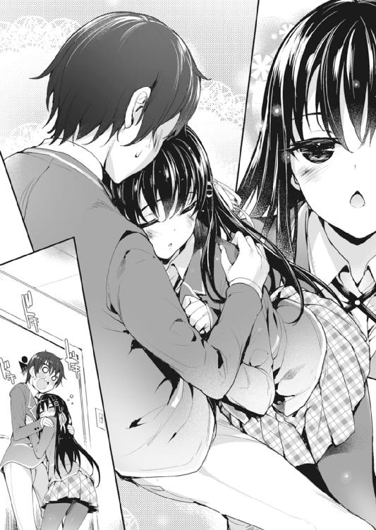
（いや、別に、やましいことは何もしてないけど......ないけど）
言葉の響きの所為か、どうしても、いけないことをしたような気持ちになってしまう。
落ち着かない気持ちを振り払おうと、少し足を速める。
ほどなくして、通りの向こうに見慣れた自分の家が見えてきた。
（そういえば、姉貴、まだ起きてんのかな。......原稿進んでるといいけど）
もう外は明るいし、起きているならカーテンぐらい開けているはずだ。様子を見ようと、一真は道路から二階を見上げる。
その時、ふと視界に、向かいの家──瑠璃の部屋の窓が映り込んだ。
（あれ......？）
思わず、足を止める。
窓を覆うカーテンが、少し動いたような気がしたのだ。
（瑠璃の奴、こんな時間から起きてるのか？）
確かに、このところ部活が忙しいとは言っていたが。しかし、朝練に行くにしたって、こんなに早く起きる必要はない気がする。
（そういや昨日、メールすんの忘れてた......）
まさかとは思うが、一真の連絡を待って、今まで起きていたのだろうか。
気になってしばらく窓を眺めていたが、カーテンが開く気配も、そこから瑠璃らしき人影が顔を覗かせることもない。
（......気の所為、か）
後ろ髪を引かれながらも、一真は玄関のドアを開けた。
◆◆◆
萌香と二人でアキバに出掛けた日から、さらに数日が過ぎた。
「ねえ、小田桐くん」
「何？ 水崎さん」
例の如く、二人でエロゲをプレイした帰り道。隣を歩く萌香に声を掛けられて、一真は彼女に顔を向ける。
最初の頃は一緒にいるだけで緊張していた二人での時間も、このところはさすがに慣れて、随分自然体でいられるようになってきている。少なくとも、名前を呼ばれるだけで狼狽えたり、口を開くたびにどもったりするようなことはなくなった。
（まあ、エロゲやるのに比べたら、一緒に帰るくらいなんてことないもんな......）
しかし、一番の理由は、それだけ一真が萌香と親しくなったということなんだろう。
自分と彼女が並んで歩いているという図に、違和感を覚えなくなる程度には。
「その、ね。......小田桐くんは、今度の日曜日、何か、予定はある？」
「日曜日？ 特にないけど」
「それじゃあ、その......小田桐くんさえ良かったら、なのだけれど」
「うん？」
「今度の、日曜日に、ね......私の家に、来て、ほしいの」
「えっ!?」
......家？
「い、家って......で、でも、どうして......？」
思わず聞き返すと、萌香は見る見るうちに顔を紅潮させた。
「そ、それはっ......ま、まだ言えないの」
「言えないって......」
「と、とにかく、来てほしいのっ！」
叫ぶように言う萌香は、既に耳まで真っ赤。その勢いに押される形で、一真は「い、いいけど......」と頷く。
しかし──。
（家に行く、って......）
帰宅し、自室に戻ってきて早々。一真は頭を抱える。
前に深夜販売に行った時にも緊張したが、今回はそんな次元じゃない。
だって、家だ。自宅だ。それも友達の家じゃない。付き合っている、彼女の家に行くのである。
しかも、日曜ともなれば家族全員が家に揃っているだろう。その前で一真は、萌香の『彼氏』として紹介されることになるのだ。
（む......無理ゲーだ......）
ついこの前までぼっち同然だったオタクには、あまりにもハードルが高過ぎた。
しかし、とりあえず対策は立てねばと、一真は携帯のブラウザを立ち上げ、『彼女』、『家に行く』、『初めて』などのワードで検索。出てきたサイトの中から、役に立ちそうなものを選んでクリックしてみる。
（あ、そうか、お土産とかいるのか......。えっと、服装は......え、美容院とか行かなきゃいけないもんなのか!? そ、そんな金ないぞ......！）
不安を解消する為に検索したのに、いざ調べてみたら気にしなければならない点が山ほどあって、かえって不安になる。
（い、いやでもなんとかしないと......！ お土産も買わないといけないし......。とりあえず、お袋に頼んで、なんとか来月分の小遣い前借りさせてもらって......くそ、こんなことなら正月のお年玉残しときゃ良かった......！）
ここで手を抜くわけにはいかない。もし下手を打ったら、萌香のご両親にお付き合いを反対されて、そのまま萌香にも幻滅され......なんて事態にもなりかねないのだから。
（で、でも......お袋になんて言おう......）
彼女の家に行くから、と正直に言えば多分許してくれるとは思うが、それができたら苦労はしない。だって恥ずかしいし、あれこれ詮索されそうだし、あと、そもそも信じてもらえないかもしれないし。
いいアイデアが浮かばないまま、一真は黙々と検索結果を辿り、その内容に驚いたり、焦ったり、不安に駆られたり。
そんなことをしているうちに、約束した日曜は、あっという間にやってきた。
◆◆◆
事前に話し合って、待ち合わせ場所は萌香の自宅のある駅、その改札前ということになっている。そこで萌香と落ち合い、彼女の家まで案内してもらうという流れだ。
（と、とうとう来た......）
緊張に体中を強張らせながら、一真は改札を出る。
大丈夫だ。問題ない。対策は万全である。
資金は結局、姉に借りることにした。次の収入があり次第返さなくてはならないが、おかげで美容院も行けたし、手土産も買ってこられた。あとはスマイル。スマイルである。
改札の前はすぐに出口になっていて、外の様子が見通せた。綺麗に整備された大通りを、車や人がのどかに行き過ぎていく。
決して寂れてはいないが、静かで、暮らしやすそうな雰囲気の街だった。萌香に聞いた話では、最近再開発が進んでいて、近くに大型のショッピングモールもできたらしい。駅が混んでいるのも、そのモールに向かう客が多いからだろう。
（ここが、水崎さんの住んでるところか......）
なんとなく、感慨のような気持ちに浸っていると、
「小田桐くんっ」
ドキッと、心臓が思いっ切り跳ねる。
軽やかに駆け寄ってくる萌香は、以前アキバに行った時とは違い、落ち着いた色味のワンピースを着ていた。袖口や襟元にリボンがあしらわれていて、それがシンプルな中にも可愛らしさを演出している。
「ごめんなさい、待たせてしまった？」
「う、い、いやっ、俺も、今来たところだから......！」
「そう......なら、良かった」
ほっと、萌香が息を吐く。それだけの仕草すら眩しく感じられて、一真は萌香の顔が見られない。
「それじゃあ、行きましょう。案内するわ」
「う、ん。よ、よろしく、お願いします」
促されて歩き出しながら、一真は急速に落ち着きを失くしていく。
大丈夫だよね？
萌香といい雰囲気になった瞬間、口からわさびを生やした殺人鬼が襲い掛かってくるなんて、そんなエロゲみたいな展開にはならないよね？
◆◆◆
萌香の自宅は、一目見て新築とわかる、洒落たデザインの一軒家だった。
「どうぞ。上がって」
「お、お邪魔しまーす......」
萌香の後にくっついて、おっかなびっくり家の中へ。
家の中は、しんと静まり返っていた。
まるで、誰もいないみたいに。
（......いやそんな、エロゲじゃあるまいし。きっと水崎さんに似て物静かな人達なんだきっと）
「あ、あのさ。一応お邪魔するわけだし、お家の方にご挨拶したいんだけど、いいかな？」
おずおずと申し出ると、何故か、萌香は急にそわそわし始めた。俯いた視線が、忙しなく床の上を彷徨う。
「そ、その......ごめんなさい。今日は、家に、誰もいなくて......」
「──────」
言葉の意味を理解するのに十秒。
今度は一真のほうが、挙動不審になる番だった。
「え、あ、そっ、そそ、そうなんだっ......！ ひっ、ひ、一人で留守番なんて、た、た、大変だね！」
だらだら汗を垂らしながら、乾いた声であははと笑う。萌香は俯いたまま何も言わない。が、心なしか、うっすらと耳が赤いような気がする。
「あっ、あのこれ！ お土産！」
手に提げてきた紙袋を、わたわたと突き出す。
「ケ、ケーキなんだけど、水崎さん、甘いものって大丈夫だった!?」
「大丈夫。私も、ケーキは好きだから」
「そ、そっか！ なら良かった！ そ、それ、うちの近所のケーキ屋のなんだけど、結構おいしいから！」
「......そうなの？」
袋を受け取り、そっと中を覗き込む萌香。
一瞬、きらっと、その瞳が光を放った気がした。
「......水崎さん？」
「！」
ぴく、と萌香の肩が小さく震える。まるで正気に戻ったみたいに。
「ご、ごめんなさい......なんでもないの。それより、来て。リビングに案内するから」
「あ、うん。それじゃ、お言葉に甘えて」
萌香の口から『リビング』という言葉を聞いて、一真は少しほっとした。家族の空間に通されるのは確かに緊張するが、『萌香の部屋』よりはずっと気が楽だ。
（ま、まあ、少しだけ残念な気もするけど......って違う違う！ 何考えてんだ俺は！）
煩悩を追い出しながら、萌香に案内されてリビングへ。
「どうぞ、座って。今、お茶を用意するから」
「あ、ありがとう」
一真にソファを勧め、萌香がリビングを出ていく。
案内されたリビングは広く、綺麗に掃除が行き届いていた。中央にローテーブルとソファ、壁際には小洒落たキャビネット。外観のイメージを裏切らない、シックで品のいい内装だ。ダイニングの向こうに見えるキッチンも、お洒落で使いやすそう──。
（あれ......？）
よく見たら、リビングはダイニングキッチンと続き部屋になっていた。
となると、萌香は一体どこに行ったのだろう。確か、お茶を淹れにいくと言っていたはずだが──。
「おっ......小田桐、くん」
「え？ あ、水崎さん？」
ドアの向こうから声が聞こえて、ぱっと腰を浮かせる。
「ご、ごめんなさいっ......き、着替えるのに、思ったよりも、時間が掛かって......！」
「いいよ、そんなの。大して待ってないし──」
......着替え？
唐突な言葉に首を捻った矢先、廊下へと続くドアがものすごい勢いで開いた。
その向こうから現れた萌香は──。
何故か、メイド姿だった。
もちろんメイド服と言っても、クラッシックなアレじゃない。スカートは今にもパンツが見えそうな超ミニだし、胸元もかなり大胆に開いていて、軽く飛び跳ねたらそのまま『ぽろっと』いきそうだ。ナニがとは言わないけれども。
「な、なっ、み、みさ......！」
「......こ、この前、やったでしょう？ 女の子が、借金のカタに、メイドとして、意地悪なお金持ちの家に売られてしまうゲーム......」
「や、やったけど......」
あらすじを見せるや否や、「......人権侵害ではないの？」と真顔で尋ねられたことは記憶に新しい。
「......だ、だから......」
だから自分もメイドになってみたと、そう言いたいのだろうか。
立ち尽くす萌香の顔は、パンツを見られた時と同じか、あるいはそれ以上に赤い。さっきからしきりにスカートを引っ張っているし、ここまで露出の多い格好は、やはり恥ずかしいんだろう。
思わず、ごく、と喉が鳴った。
こういう時、彼氏として、自分は何を言うべきなのだろうか。「可愛いよ」とか「似合ってるよ」とか、褒めてあげたほうがいいのか。いやしかし、こんなエロい格好を下手に褒めたら、「あなたをエロい目で見ています」と自分から白状するようなものではないか？
（いや、見てないけど！ 見てないけど!!）
といいつつ、気を抜くとどうしても視線が胸元とか、スカートの裾とかに行ってしまう。
あ、なんか今一瞬白いものが──。
「お、小田桐くん......」
「はい!?」
びくっ、と飛び上がるのと同時、赤くなったままの萌香が、そっと、一真の手を取る。
「み、水崎さ......っ」
「......座って」
軽く腕を引かれ、促されるままにソファへ。
固まって動けない一真を尻目に、萌香はキッチンに向かい、紅茶を淹れケーキを出し、てきぱきとお茶の準備を調えていく。手際良く立ち働くその姿は、まるで本物のメイドのようだ。
が......とりあえず、身動きするたびに、胸元やスカートから余計なものが見えそうになったりするのをやめてほしい。困る。とても困る。
「どうぞ、小田桐くん......いえ」
全ての支度を調えて、萌香が一真の隣に腰を下ろす。
そして、一真を見上げて、恥ずかしそうにこう言った。
「『一真......様』」
躊躇いがちの小さな声が、エロゲのそれに重なる。まるで自分がエロゲの主人公になって、『萌香』を従わせているような、そんな錯覚を起こしそうだ。
「み、水崎さんっ......。そんな、呼び方はいいよ、いつも通りで......！ メイドの格好だって、〝フリ〟なんだし......！」
「......そ、う？」
気の所為か、一真の言葉を聞いて、萌香はどこかがっかりしたように見えた。
しかしすぐに、気を取り直すように「むっ」と口元を引き結ぶ。
「じゃあ、ケーキ......ケーキを食べて。お持たせで、申し訳ないけれど」
「あ、う、うん。じゃあ、水崎さんも──」
話の流れが無難なほうに向いて、一真は少しだけ安堵しながら、ケーキに手を伸ばす。
が、一真の手が届く前に、萌香がそれを取り上げてしまう。
「？ 水崎さん？」
「あれ？」と思った矢先、眼前に突き出されるフォーク。
「......あーん」
そっと差し出されるケーキ。その向こうには、頰を赤らめながらも、これ以上なく真剣な顔で一真を見つめる萌香がいる。
そしてそして、ほんの少し視線をずらせば、前屈みになった彼女の胸元から、控えめな曲線を描く谷間が覗いていて──。
「......小田桐くん？」
「な、なんでも！ なんでもないよ！ ちょっと急に天井が気になって！」
限界まで首を仰け反らせながら、必死に言い訳を述べる。
しかし、いつまでもこんな不自然な体勢でいるわけにもいかない。見ないように、見ないようにと自分に言い聞かせながら──でもちょっとだけ、見えることを期待しながら──恐る恐る、視線を下に。
「......どうかしたの？」
「い、いや、ほんとに、ほんとになんでもないから......」
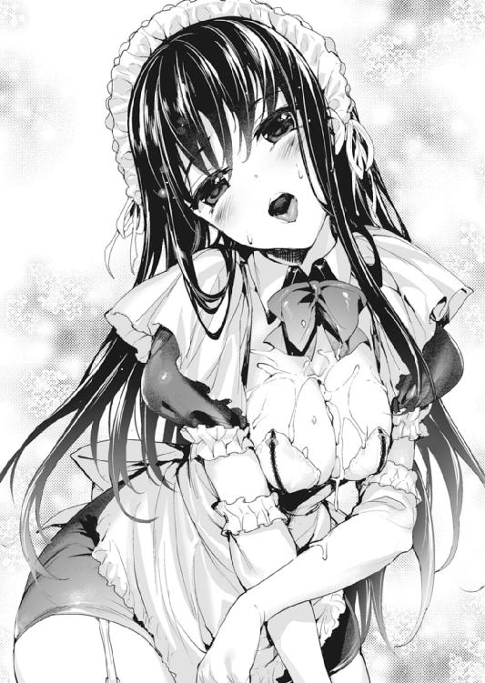
「でも、さっきから様子が......」
言葉の途中で、「はっ！」と、何かに気付いた顔をする萌香。
「ごめんなさい......私、間違えていたわ」
「え？」
聞き返す一真を無視し、萌香はケーキの皿を置いた。そして、何を思ったのか、フォークに差していた分のケーキを、自分の胸元に零す。
両手で胸を寄せ、上目遣いで、熱でもあるのかと思うほど顔を赤くしながら、
「あ......あーん......」
「────ごめんちょっとトイレ!!」
とにかくその場を離れたい、離れなくてはならないという一心で、後先考えずにリビングを飛び出す。
廊下に出てから、トイレの場所がわからないことに気付いて焦ったが、幸い扉にプレートが掛かっていたので、出ていって早々リビングに戻るという醜態は、なんとか晒さずに済んだ。
◆◆◆
「は～......」
一真がトイレに立て籠もってから、そろそろ五分が経とうとしていた。
いい加減戻らなくてはいけないだろう。あまり長居するのも、萌香に失礼だ。「自分と一緒にいたくないからトイレに逃げた」なんて、変な誤解をされても困るし。
いや、される『誤解』はそれだけじゃないかもしれないけれど。そっちの誤解のほうがもっと困るけど。
しかし......実際、危ないところではあった。と思う。
（まさか、水崎さんがあんなことまでするなんて......）
きわどいメイド服、さらには『あーん』。特に最後のあれは、一真のちっぽけな妄想なんて足元にも及ばないくらいの破壊力だった。ヤバかった、本当に。特に生クリームが──やめよう。冷静に、クールになるのだ。クールに。
最後に一度深呼吸し、手と顔を念入りに洗ってトイレを出る。
そーっとリビングを覗き込むと、萌香はメイドの格好のまま、ちょこんとソファに座っていた。
「ご、ごめんね。いきなり出てっちゃって......」
「いいの。気に、しないで」
ゆっくりと首を振る萌香。その表情が、少しだけ曇る。
「あの......さっきのことだけれど。私、何か、間違っていた？」
「い、いや、間違っていたっていうか......」
間違っていたといえば確かに色々と間違ってはいたが、果たしてどう答えたものか。
返す言葉に悩んでいると、ふと萌香の胸元が目に入る（あくまで偶然であって、決してやましい意味はない）。
真っ白な肌には、先ほど零した生クリームの痕が残っていた。一応拭き取りはしたようだが、このままではべたべたして気持ち悪いだろう。
「あ、あのさ。その......ついてる生クリーム、良かったら洗ってきたら？ ついでに着替えて──」
「......〝洗って〟」
考え込むような顔付きで、萌香がその言葉を繰り返す。
何故だかわからないが、地雷を踏んだような気がした。
（......そういえばあのゲームだと、緊張したヒロインが雇い主の体にケーキを零して、罰として一緒に風呂に入れって命令されるんだっけ）
......つまり？
「......ごめんなさい」
「へ？ ぶっ......!?」
「何が？」と思った瞬間、顔面にぶちまけられる甘ったるいもの。
「み、水崎さん......!?」
「大丈夫。ちゃんと、べたべたになったから......あむ」
生クリームまみれになった一真の頰を、華奢な指先がちょんちょんとつつく。......ところで最後の『あむ』ってなんだろう？
「さあ、小田桐くん。来て、こっちだから」
「ちょ、ちょっと待って！ 俺、前がよく見えな......！」
「心配しないで。ちゃんと、案内するわ」
萌香に手を引かれ、一真はわけもわからないままどこかへと引きずられていく。
廊下に出、しばらく歩き、またどこかの部屋に入ったところで、ようやく足が止まった。
（こ、ここは......？）
手で顔を拭って、どうにか視界を確保する。目の前には綺麗に整頓された洗面台と、大きな鏡。どうやら洗面所のようだ。奥に風呂場らしきドアも見えている辺り、脱衣所も兼ねているのだろう。
（ああ、〝ここで洗って〟ってことかな？）
どこに連れて行かれるのかと内心ひやひやしていたので、ほっと胸を撫で下ろす。
次の瞬間、体の下のほうから、ファスナーを下ろすような音が聞こえた。
「ってうわああああ!! ななっ、何してるの水崎さんっ!?」
あろうことか、萌香は一真の前に膝を付き、一真のズボンのジッパーを下ろそうとしていたのだ。
「だ、だって......ファスナーを下ろさないと、脱がせられないから......」
「そもそもどうして脱がせる必要が!?」
「だって、脱がないと、できないでしょう......？」
「なんの話!?」
そう言う間も、萌香は一真のズボンを摑んでずり下ろそうとしてくる。やってることはただの痴女だが、萌香の目は真剣そのもので、顔も耳まで真っ赤だ。
もちろん、大人しく脱がされるわけにはいかないので、一真は必死に抵抗する。
「じゃ、じゃあ......小田桐くんは、着たままのほうが、いいの？ 小田桐くんがそう言うなら、私はそれでもいいけれど......でも、濡れてしまうと、帰る時に困らない......？」
「だから何言って──わあああ待って待って顔近付けないでそんなところに!!」
息が！ なんだか温かくて湿っぽい吐息が！
「でも、やっぱり、服は、洗ったほうがいいと思うわ。思ったよりも、生クリームが零れてしまったし......洗濯機を使えば、乾燥まで含めても、そんなに時間は掛からないから。小田桐くんがシャワーを浴びている間に、済むと思うわ」
「あ......ああ、なんだ。そういう......」
確かに、シャツもズボンもあちこちべとべとしている。髪にもクリームがべっとりついているし、シャワーを貸してもらえるならありがたい。
「だ、大丈夫。零したのは私なのだし、責任を取って、ちゃんと隅々まで綺麗に──」
「いや一人でできるから!! 水崎さんはリビングに戻ってゆっくりしてて!!」
意気込みを見せる萌香を、問答無用で廊下に押し出す。
（と、とにかく、さっさと済ませよう......！）
とりあえず服を洗うのは断念し、一真は手早く裸になって風呂場へ。
他の部屋と同じく、浴室も真新しくて綺麗だった。クリーム色を基調とした空間はゆったりとしていて、湯船に浸かったらさぞリラックスできるんだろうな、と思う。
（水崎さんも、毎日このお風呂を使って──って違う違う違う!! 何考えてんだ俺、いくらなんでも変態過ぎるだろ......！）
急ごう。ここに長居するのは色々な意味で危険だ。
それに、萌香と二人きりの家で裸になっているというのは、それだけでなんだか落ち着かない。
手早く洗い終えて、一真はすぐさま踵を返す。
が、ドアノブに手を掛けようとしたところで、閉まっていたドアが「ばーん！」と勢い良く開け放たれた。
ドアの向こうにあったのは、なんかやたらと赤い萌香の顔。
華奢な体にバスタオルだけを巻いて、
すらりとした手足を惜しげもなく露わにし、
白い肌を一分の隙もなく真っ赤に染め上げている、
そんな格好をした、一真の『彼女』。
「おっ、小田桐くん......！ やや、やっぱりわた、私もてつだ、だ、だっ......手伝うから......！ よっ、汚してしまったのは私だしっ、せ、せき、責任は取らないとっ！」
湯気が出るほど顔中まっかっかにして、萌香は半ば叫ぶように言う。これが漫画だったら、彼女の両目はきっと、ぐるぐる渦を巻いていたことだろう。なんかもう、見るからに一杯一杯だった。
「すっ、座って......！ わ、わた、私が、綺麗にしてあげるか〝りゃ〟っ......！」
呂律も回らない状態でありながら、果敢にも浴室へと一歩を踏み出す萌香。
そこで、ようやく一真も我に返った。
「ちょっ......!? み、水崎さんちょっと！ ちょっと待ってほんとに待って!!」
ずんずんと近付いてくる萌香を慌てて止めようとするが、彼女の格好に気付いて、突き出しかけた手が固まる。
だって彼女は今、ほとんど裸なのだ。下手に動いて、あらぬところに手が触れてしまったら。何かの拍子に、体を隠しているバスタオルがずれてしまうようなことがあったら。
そんな嬉しいんだか恐ろしいんだかわからない想像をして、一真は身動きができなくなってしまう。
せめて少しでも距離を取ろうと後ずさりするが、スペースには限りがあるわけで。
気が付いたら、萌香と一真の間にあった距離は、ほとんどゼロになっていた。
（な、なっ、ななな......!?）
互いの体温さえ感じられそうな気がする距離。ほんの少しでも動けば体と体が触れそうで、一真は激し過ぎる動悸に眩暈を覚える。
一緒にお風呂。背中を流してくれるヒロイン。お返しに今度はこっちが体を洗ってあげて、うっかり体が触れ合ったりなんかしちゃって。
そんな夢にまで見た、けれど、絶対に現実になんてならないだろうと思っていたシチュエーションが、目の前にある。
（こ、こんなっ......いや、嬉しいけど、すごく嬉しいけど！ で、でも、さすがにいきなり過ぎるっていうか、心の準備が!?）
「み、水崎さん！ い、一旦落ち着こうよ！ ややや、やっぱりっ、こういうことはまだ早いって!!」
「大丈夫っ！ わ、私も初めてだけど、絶対痛くしないから......！」
「だからそういうことじゃなくて......!!」
このままでは大変なことになりそうで、一真はなんとかして風呂場からの脱出を試みる。そうはさせじと、萌香は勢い良く両手を広げ、一真の前に立ち塞がった。
「──あ」
はらりと、優雅ささえ感じる動きで、真っ白なバスタオルが床に舞い降りる。
その下から現れたのは、タオルの白さをさらに上回る、目に痛いほどの眩い『白』。
強く抱いたら折れそうなほど、華奢にくびれたウエスト。
繊細な曲線を描く腰から足にかけてのライン。
しなやかに伸びる、いかにも柔らかそうな太もも。
そして、慎ましくも健気に膨らむ、小振りな『それ』。
透き通るような白さの中、頂に一点だけ灯るピンクが目に眩しい。
初めて見る。
二次元じゃない、妄想でもない、本物の、女の子の体。
衝撃に体も心も打ちのめされて、一真は声もなく、目の前の光景に見入る。
生まれて初めて異性の裸を目にした彼に、他にできることがあるわけもなく。
ましてや、
「────き」
耳から首から体中を真っ赤にする『女の子』を落ち着かせることなんて、できたはずもないわけで。
「──きゃあああああああああ!!」
はっと正気を取り戻した時には既に遅く。悲鳴を上げた萌香は、羞恥に耐えかねてそのまま気を失ってしまう。
「み、水崎さん!?」
残されたのはタオル一枚の自分と、素っ裸のまま床に倒れている萌香。
一真に、かつてない試練が訪れようとしていた。
◆◆◆
「............」
「............」
死にたくなるほど居た堪れない空気が、リビングを支配していた。
一真は着替えを済ませ、リビングのソファに座っている。同じソファには、こちらもやはり服を着た萌香が腰を下ろしていた。
二人の間には、人一人分の距離がある。その距離を挟んで顔を背け合い、二人はかれこれ三十分近くも、こうして黙りこくっていた。
（こ、このままじゃだめだ......！ ここは俺がっ......俺が話のきっかけを作らないと......！）
とにかく、謝ろう。そう思い、一真は勇気を振り絞って口を開いたが、
「「あのっ......！」」
萌香と思いっ切り被ってしまい、揃って言葉を詰まらせた。
「ごっ、ごめん！ 何、水崎さん!?」
「い、いいの！ 小田桐くんが、先に言って......！」
「いや、大したことじゃないから、水崎さんが先に──」
「ううん、小田桐くんが──」
あたふたと不毛な譲り合いを繰り返し、二人はまたも黙りこくってしまう。
最終的に、口を開いたのは萌香のほうだった。
「その、ごめんなさい......その、わざわざ、運んでもらって......」
「い、いや、大したことじゃないから......」
あの後、一真は倒れた萌香を抱え、どうにかこうにかリビングまで連れてきたのだ。
思い返すだに、長く、そして辛い道のりだった。あんなに心臓に悪い時間を過ごしたのは、生まれて初めてだ。
こうしている今も、さっき目にした萌香の姿が、そして抱き上げた時の感触が、脳裏や腕にこびり付いて離れない。
柔らかくて、すべすべしていて、温かくていい匂いがして──。
「あ、あのっ......さ、さっきのこと、だけど......」
「ああああ、だ、大丈夫！ 見てないから！ い、いや、全く見なかったわけでもないんだけどっ......でも忘れるからすぐ！」
「そ......そうしてもらえると......私も、嬉しいわ......」
萌香の顔は、さっき倒れた時と同じか、それ以上に真っ赤だ。
けれどすぐに、彼女は何かに気付いた様子で、慌てて顔を上げる。
「あ、あの！ でも、誤解しないでっ......嫌だったわけじゃないの」
「......え？」
「は、恥ずかしかったしっ......もう一度って、お願いされても、ちょっと、困るけど......でも、小田桐くんに、見られるのが......嫌だったわけじゃ、ないから」
「え、あ......えっと......！」
どうしよう。こういう時は、なんて答えたらいいのか。
結局上手い言葉が思い浮かばなくて、一真は赤くなった顔を俯ける。
（でも......そっか。水崎さん......俺になら、見せてもいいって、思ってくれるんだ......）
付き合っているのだから、そのぐらい、特別なことじゃないのかもしれない。
でも、一真はなんだか、心臓が痺れるような心地がした。上手く説明はできないけれど、なんだかとても強くて、熱いものがこみ上げてくる。
──その一方で、ふと、疑問が浮かんだ。
「......あのさ、水崎さん。俺、前から聞きたかったことが、あるんだけど」
「......何？」
「えっと......」
この流れで聞くのはどうなのかとちらっと思ったけれど、むしろ、こんな流れでなければ聞けないだろうと思い直す。
だって......こんなことを聞くのは、やっぱり恥ずかしいから。
「水崎さんは、さ......どうして、俺と付き合おうって、思ってくれたの？」
思えば、最初から不思議だったのだ。どうして萌香が、自分なんかと付き合おうなんて思ってくれたのか。
だって自分達は、まともに話したことすらなかったのに。
けれど萌香は、一真の言葉を聞いて、拗ねたような顔をした。
「......やっぱり、覚えていないのね」
「えっ!?」
じと目で見つめられ、ぶわっと顔中に汗が噴き出す。
まさか、話したことがないと思っていたのは一真だけで、本当は何かあったのだろうか。単純に、一真がそれを覚えていなかっただけ？
（で、でもっ、水崎さんみたいな可愛い子と何かあったら、絶対覚えてるだろ普通......！）
頭を抱えながら必死に記憶を辿るが、それらしい思い出は何一つ浮かんでこない。
「ご、ごめん......水崎さん」
「......じゃあ、話したら、思い出してくれる？」
「た、多分......」
ふう、と、隣から小さな溜息が聞こえた。一真はひたすら恐縮するしかない。
「丁度、去年の今頃よ。私......電車で、痴漢に遭ったことがあるの」
萌香によれば、それは本当に、ちょっと体を触られる程度のことだったらしい。
けれど、当時中学生だった彼女は、怯えてしまって助けを求めることができなかったのだそうだ。
そのままだったらどうなっていたかわからないところを、助けてくれたのは、同じ車両に乗り合わせた誰かの声だった。
その『誰か』が、萌香の様子に気付いて、「痴漢だ！」と、声を上げてくれたのだ。
結果、犯人の男はすぐに他の乗客に取り押さえられ、次の駅で警察に引き渡された。
その時は慌ただしくて、助けてくれた『誰か』にお礼を言うことはできなかったが、萌香はずっと、その相手の声を、覚えていたのだという。
「......小田桐くんを見た時、すぐにわかったわ。あの時の人だって」
本当はすぐに、礼を言おうと思ったらしい。だが、一真のほうが萌香を覚えていない様子だったので、今まで切り出せずにいたのだそうだ。
けれど、気にはなって。なんとなく見つめているうちに、いつの間にか──。
彼女はそう、自らの想いを口にした。
多分、萌香としては、それは二度目の告白のつもりだったのだろう。
でも一真は、その『告白』を、一度目の時のようには受け止められなかった。
感激よりも、嬉しさよりも、もっと強くて重たい感情が、一真の心を支配していた。
（痴漢に遭った、って......）
そういえば、初めて一緒にエロゲをやった時。『最終痴漢バス３』のイベントシーンを見て、萌香は顔を曇らせていた。
あの時はうやむやのままにしてしまったけれど、ひょっとして萌香は、昔の嫌な体験を思い出していたのだろうか。だから、辛そうな様子を見せていた？
つまり自分は、昔痴漢の被害に遭った女の子に、無理矢理、痴漢ゲーなんてものをやらせていたということ......？
「......小田桐くんは？」
「えっ......」
はっと顔を上げたら、萌香がじっと一真を見つめていた。
「小田桐くんは......どうして、私と、付き合ってくれたの？」
萌香の頰はいつの間にか、赤く色付いている。まるで、何かを期待するように。
だが一真は、その顔を直視できずに目を逸らす。
（俺、は......）
──どうして？
そんなの、決まっている。だって、萌香はこんなにも可愛くて、話したことはなかったけど、ずっと仲良くなれたらと、彼女が自分を好きになってくれたらと、そんな風に妄想したりしていて。
そんな彼女が告白なんてしてくれたら、誰だって、オーケーするに決まっている──。
......それだけ？
「......」
急に、背筋が冷たくなった。じわりと汗が浮かんで、心臓が嫌な感じに騒ぎ出す。
その時、静まり返っていたリビングに、突如としてけたたましいコール音が響く。リビングに置いてあった電話が鳴っているのだ。
「あっ......ごめんなさい、電話が。少し待って」
ぱたぱたと、萌香が受話器を取りに行く。
「──はい。......お母さん？ 帰るって......今から？」
漏れ聞こえてくる短いやり取り。やがて通話を終えた萌香は、明らかに慌てた様子で一真を見た。
「た、大変......！ お母さん、用事が早めに済んだから、今から帰るって......！」
「え......!?」
すったもんだしながら後片付けを済ませ、一真は逃げるように水崎家を後にする。駅まで送ると言ってくれた萌香も一緒だ。
「ごめんなさい、折角来てくれたのに......」
「い、いや、水崎さんの所為じゃないし......全然、気にしてないから......」
「......それじゃあ、また、来てくれる？」
かすかに頰を染めて、一真の顔を窺う萌香。
甘えるような上目遣いは文句なしに可愛くて、見ているだけで頰がにやつきそうで。
でも、一真は、それに答えることができなかった。胸の中では相変わらず、さっき生じた疑念が黒々と渦を巻いている。
自分は萌香に、無理をさせていたのではないかという疑念──そして、不安。
萌香は、ことさら答えを促そうとはしなかった。そのまま黙って歩いているうちに、駅に辿り着いてしまう。
「......じゃあ、私は、これで」
「あ、うん......。えっと、今日は、誘ってくれてありがとう」
「......ええ」
気まずいとまではいかない、けれど、どこかぎこちない会話。
「......あ、あのさ」
根拠はない。けれど、このまま別れてはいけないような気がして、一真は口を開く。
が、
「────一真......？」
「......!?」
聞こえてきたのは、一真のよく知る、けれど、ここにいるはずはない相手の声。
まさかと思ったが、聞き間違いでも気の所為でもなかった。
「それに......水崎、さん......？」
一真達から二、三メートルほど離れた位置。両手にいくつものショップバッグを抱え、瑠璃がぽつんと立ち尽くしていた。行き交う人混みの中、まるで置き去りにされた子供のように、頼りなげな表情を浮かべて。
その瞬間、一真は、悪戯を見付けられたような、ひどくばつが悪い思いに駆られた。
思い出す。以前、瑠璃に萌香との関係を尋ねられた時、本当のことを言わずに誤魔化してしまったことを。
あの時正直に打ち明けていれば良かったと今さら後悔したが、後の祭りだった。
「え......えー？ わー、なんかびっくり。偶然だねー！ こんなとこで会うなんて」
瑠璃は最初こそ戸惑ったような顔をしていたが、すぐにいつもの笑顔に戻り、とことこと一真達の元へ近寄ってくる。
「わっ、水崎さん私服カワイー！ このブランド知ってるよ！ モールにあったとこでしょ？ 水崎さんもそこで買ったの？」
「え、ええ......」
「てか、一真ってばなーんで水崎さんと一緒にいんの？ ひょっとしてデートだったり？」
「あ、えっと......」
「何さー、黙っちゃってぇ。男でしょー？ はっきり言いなってば！ 心配しなくても、クラスの子達には黙っててあげるから」
いつにも増して明るく、はしゃぎ過ぎなぐらいのテンションで捲し立てる瑠璃。若干の違和感を覚えながらも、元々のトーク力の差もあって、一真は口を挟めない。
「ね？ 二人ってさ......付き合ってんの？」
「それは......」
ちらっと萌香の顔を窺うと、彼女は小さく頷いた。「小田桐くんの思う通りに」、ということだろう。
「あ、ああ......。実は、この間から、付き合い始めたんだ」
「......そっか」
答える瑠璃の声は、びっくりするくらい優しかった。
「そっかぁ。一真、カノジョできたんだ。──良かったね。おめでと」
「ああ......その、サンキュ」
『彼女ができた』。そうやって、リア充っぽく自慢してみせるのが夢だった。
なのに、思い描いていたような甘酸っぱさや優越感は、何故か少しも感じられない。
「水崎さん、一真のことよろしくね。一真って、エッチでヘンタイだけど、でも、いいとこも結構あるから。もし一真がエッチなこと言ってきたら、そん時はすぐあたしに言って。あたしが水崎さんの代わりに、一真のこと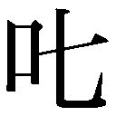ったげるから！」
「ありがとう、四ノ宮さん......。でも、大丈夫。小田桐くんが、どういう人かは......私もちゃんと、わかっているから」
「へー！ 水崎さんってば、結構そういうことはっきり言っちゃうタイプなんだ。意外ー！ カワイー！ なんかあたし、水崎さんのことすっごい好きかも！ ね、ね？ 〝ほのちゃん〟って呼んでいい？ あたしのことも〝瑠璃〟でいいから！」
「それは、構わないけれど」
「やたー！ ありがと、ほのちゃん！ あ、でも『ほのちゃん』じゃありきたりだしー、やっぱり『のかちゃん』にしよっかなー？」
一真を完全に置き去りにし、急速に仲を深めていく瑠璃と萌香。
一真はその中に入ることもできず、自分の〝彼女〟と〝幼馴染〟のやり取りを、ただ呆然と眺めているだけだった。
◆◆◆
萌香と別れた後、一真と瑠璃はごく当たり前に、同じ電車で帰路についた。
「でもびっくりしたー！ まさか一真が水崎さんと付き合ってたなんて。なーにが〝ゲーム貸してあげてるだけ〟よ。誤魔化しちゃってさー」
「いや、別に、誤魔化したってわけじゃ......」
「っていうか、水崎さんって、案外話しやすい感じなんだね。あたしともフツーにしゃべってくれたし。ほら、あたしってこんなじゃん？ 水崎さん真面目そーだから、『ひょっとして嫌われてるのかなー？』って思ってたんだよね。良かったー！ 勘違いっぽくて」
電車に乗っている間も、降りた後も、瑠璃の口は止まらない。その癖、一真のほうから話しかけようとすると、計ったように話題を逸らす。
......気の所為と言われればそれまでかもしれない。けれど、なんとなく、様子がおかしいような気がした。
「......あのさ。お前、どうしたんだよ。なんか変だぞ、さっきから」
「え？ べ、別に。なんもないよ、フツーじゃん」
「やっぱり、水崎さんとのこと黙ってたの、怒ってるのか？ それは、俺も悪かったと思ってるけど......」
「わかってるってば！ そ、それよりさっ。もっと一真と水崎さんの恋バナ聞かせてよ」
些細な違和感を押し流すように、瑠璃は一真を質問責めにしてくる。いつから付き合ってるの、だとか、どっちから告白したの、だとか。
瑠璃のテンションに振り回される形で、一真はその質問の一つ一つに答えていたけれど──。
「じゃさ、これ最後の質問ね。あのさ......一真は、水崎さんの、どこが、好きなの？」
「............え」
それを聞かれた途端、一真は、反射的に足を止めていた。
「......一真？」
立ち止まった瑠璃が、心配そうに一真を呼ぶ。けれど一真は、その声に答えを返せない。
（どこが、って......）
そんなの考えるまでもない。だって萌香は可愛くて、健気で、クールに見えるけど実は恥ずかしがり屋で、でもいつも一真の為に一生懸命で──。
何故だろう。答えはいくらでも思い付くのに、どうしてか、一真は何一つ口に出すことができなかった。喉が凍り付いたみたいに、なんの言葉も出てこない。
「......な、なんで黙ってんの？ だって一真、水崎さんと付き合ってるんでしょ？ どこが可愛いとか、そういうの、色々、あんじゃないの？」
「う、うるさいな......いいだろ、そんなのなんだって──」
「なっ......!? 良くない！ 全然良くないよ！ だって一真、水崎さんと付き合ってるんでしょ!? 水崎さんの彼氏なんでしょ!?」
彼氏──瑠璃の放った言葉が、一真の胸に矢のように突き刺さる。
そうだ。自分は、萌香と付き合っている。なのにどうして、こんな簡単な質問に答えることができないのだろう。
萌香の家でも感じた嫌な感覚が、再び膨れ上がっていく。『どうして私と付き合ってくれたの？』と、そう萌香に聞かれて、答えられなかった自分。
一真の疑問を代弁するように、瑠璃が、抑えたような声でこう言った。
「......一真、前に言ってたよね。水崎さんと一緒に、ゲームしてるって」
「そ、それが、どうしたんだよ......」
「前は、違うって言ったけどさ......それってやっぱり、エッチなヤツなんじゃないの？」
息を吞む。それで、瑠璃には何もかもわかったらしい。こちらを見る瑠璃の表情が、あからさまに硬くなった。
「ねえ......一真が、水崎さんのこと好きなのって、一緒にそういうゲーム、やってくれるから？」
「そ、そんなわけ......！」
「──じゃあ、あたしは？」
一瞬、何を聞かれたのかわからなくて、呆然と瑠璃の顔を見返す。
じっとこちらを見つめる幼馴染は、今までに見たことのないような顔をしていた。怒るような、それでいて怯えるような、そんな顔。
「もし、あたしが、水崎さんより先に、そういうゲームやらせてって言ってたら......一真は、あたしとも、付き合って、くれた？」
頭が真っ白になる。
足元の感覚がなくなって、体がどこかへ放り出されたみたいに。
何も、考えることができなくなる。
「............な、何言って......」
無意識に零れた声は、みっともないくらい震えていた。
それはきっと、瑠璃のその言葉が、一真にとって痛いところを突いていたから。
だって、一真は思ってしまったのだ。
──そうかもしれない、と。
「......!?」
不意に電子音が鳴り響いて、携帯が震え出す。
電話だった。
萌香からの。
「......水崎さんから？」
「っ......瑠璃......！」
「......あ、あたし、もう、行くね。変なこと言って、ごめん。忘れて」
止める暇もなかった。さっと踵を返し、瑠璃の姿はあっという間に、道の向こうへ消えていく。
取り残される形になった一真は、しばしそこに立ち尽くして呆然としていた。
しかしすぐに、我に返って携帯を手に取る。
『あ......小田桐くん？ 水崎です』
「う、うん......。えっと、どうしたの？ さっき別れたばっかりなのに......」
『......ごめんなさい。迷惑だった、かしら？』
「い、いや、そういうわけじゃないけど」
たった今、あんなことがあった所為だろうか。萌香の声を聞いているのが、ひどく落ち着かなかった。迂闊にしゃべったら、動揺している内心を見透かされそうな気がして、相槌を打つのさえ怖い。
『その......特に、用事というほどのことも、ないのだけど。ただ、小田桐くんは、そろそろ、家に着いたかと思って......』
「そ、そっか......」
『......あ、あの。でも、やっぱり、もう少しだけ、いい？』
「う、うん......何？」
『その......もうすぐ、連休でしょう？ シルバーウィーク。............小田桐くんは、何か、予定はある？』
そう言う萌香の声は、なんだか少しそわそわしている気がした。嬉しそうな声音。対照的に、一真の表情は硬く強張っていく。
『あ、あのっ、よ、予定があるなら、それでいいの。ただ......休みの間は、学校でも、会えないし。小田桐くんさえ良かったら、少しだけでも、会えたらと、思って......』
物言いこそ控えめだったけれど、その言葉の一つ一つからは、『少しでも一緒にいたい』という気持ちがこれでもかと溢れていた。
付き合いたての『彼女』が、自分に会いたいと言ってくれる。ちょっとでもいいから、一緒にいたいと言ってくれる。しかも、その彼女は学園で一番と言われるくらいの美少女で、性格だって健気で可愛くて。
こんなに幸せなことなんて、きっとない。今の一真は、世界中の誰にも負けないぐらいのリア充だ。
──だから。
「......ごめん。連休中は、ちょっと、色々あって」
『............、そう』
「ごめん、本当に。折角誘ってくれたのに」
『いいの。謝ることなんてないわ。用事があるのなら、仕方がないもの。それに......会いたいのは、ただの、私の我儘だから』
そんなことはない。そう思ったけれど、言葉にすることはできなかった。彼女の誘いを拒んでおいてそんなことを言うのは、ひどい偽善に思えたから。
『それじゃあ、遅くにごめんなさい。......おやすみなさい、小田桐くん』
「うん......おやすみ、水崎さん」
通話を終え、携帯を耳から離して。
それからも、一真はずっと、その場を動くことができずにいた。
四章 彼がエロゲをする理由
カーテンの隙間から、夕日が差し込んでいる。夢のシルバーウィーク、その記念すべき最初の一日が、早くも終わろうとしていた。
「はあ......」
自室のベッドに寝転がり、一真は溜息を零す。
もちろん、憂鬱の原因は、折角の連休が早くも一日終わってしまったことでも、両親が一真達を残して、二人だけで温泉旅行に行ってしまったからでもない。
言うまでもなく、萌香のことだ。
「......はあ」
枕元に放り出していた携帯を手に取り、さきほど送られてきたメールを開く。
『件名 水崎です
小田桐くんへ
連休が始まりましたね。
小田桐くんは、何をして過ごす予定ですか？
忙しいのはわかっていますが、
できれば、少しだけでも、会いたいと思っています。
もし時間が作れそうなら、メールください。
それじゃあ、また。
水崎萌香』
絵文字も何もないメールは、堅苦しい文章もあって、ややとっつきにくい印象を感じさせる。それこそ、このメールを書いた、萌香自身のように。
けれど、一真は知っていた。そのクールな外見の裏に、実は案外、たくさんの表情が隠れていること。
彼女に告白され、付き合い始めて、一真は、それまで想像もしていなかった、水崎萌香という少女の様々な一面を知った。
クールで完璧な優等生だと思っていた彼女は、実はそれほどクールでも、完璧でもなくて。最初は驚かされてばかりだったけれど、今は、知ることができて良かったと思う。
だって、クールでも完璧でもない彼女は、そう見えていた頃よりも、ずっとずっと、可愛かったから。
だが、そう思うからこそ、一真は悩まずにはいられない。
先日のデートで、萌香は、一真が忘れていた昔の思い出を、一真に思い出させてくれた。昔、痴漢に遭った彼女を、一真が助けたこと。だから萌香は一真を好きになってくれたのだと、そう教えてもくれた。
けれど──自分はそんな彼女に、痴漢ゲーなんてものをやらせてしまっていたのだ。
実際に被害に遭ったことがあるのに、女の子が次々痴漢されていくゲームをやらされるなんて、きっととても嫌だっただろう。もしかしたら、他のエロゲも嫌々やっていたのかもしれない。〝彼氏〟である一真に気を遣って。
だとしたら、自分は──。
（最低だ......）
知らなかった、なんてことは言い訳にならない。たとえ知らなかったとしても、あれだけ一緒にいたのだから、もっと早くに「何かおかしい」と気付くべきだった。
だって一真は、萌香の『彼氏』なのだから。
その上──。
『もし、あたしが、水崎さんより先に、そういうゲームやらせてって言ってたら......一真は、あたしとも付き合って、くれた？』
あの時、瑠璃に投げ放たれたその言葉で、一真は気が付いてしまった。自分が萌香のことをどう思っているのか、はっきりした答えを口にできないことに。
どうして自分は、萌香と付き合っているのだろう。
一緒にエロゲをやってくれるから？ 自分好みのヒロインになりきってくれるから？ 彼女が......自分にとって、とても、都合の良い存在だから。だから自分は、萌香と付き合っているんだろうか。
そんなことはない──そう思いたいけれど、瑠璃の指摘があながち間違っていないことも、また事実で。
だから思ってしまうのだ。そんな程度の気持ちしかないのに、萌香と付き合い続けるのは、ひどい裏切りなのではないかと。
ずっと、萌香に無理をさせていたのかもしれない自分。
そこまでさせていながら、彼女のことが本当に好きなのかどうか、はっきり答えられない自分。
考えれば考えるほど情けなくて、一真は罪悪感と自己嫌悪の沼にずぶずぶと沈んでいく。
「......は～あ」
「どうしたの～？ 溜息なんてついちゃってぇ」
「うわっ!? あ、姉貴!? いつの間に......！」
「いつの間にって～、最初っからドアちょっと開いてたわよぅ？」
ふと気付くと、わずかに開いたドアの隙間から、一葉がじーっとこっちを見ていた。
「カズちゃんこのところず～っと楽しそうだったのに、急に溜息なんてつき始めて、お姉ちゃん心配。ねぇねぇ、どうしたの？ 何があったの？ お姉ちゃんに相談して～」
「別に、なんでもな──」
追い払おうとして、しかし思い直す。
ダメ人間を地で行く姉だが、こんなんでも一真より年上ではあるのだ。つまりはそれだけ長く生きているということで、もしかすると、何か為になる話が聞けるかもしれない。
一真の気が変わったのを察したのか、一葉は得意げな笑顔でベッドに腰を下ろす。
「ふふふ～、いいのよーゆっくりで。お姉ちゃん原稿終わったから、時間はた～っぷりあるもの」
「いや。そんな話しにくい話でもないんだけど、さ......」
姉と向き合う形で座り直し、一真はゆっくりと話し始めた。
──のだが。
ぐ～きゅるるるるきゅきゅ！
「..................」
「え、えっとぉ、ごめんねぇ？ お姉ちゃん、実は今までずっとお昼寝しててぇ、なんにも食べてなくて～......！」
「......いいよ、食べながらでも。話聞いてくれんなら」
そして五分後。
再び一真の部屋に戻ってきた二人は、テーブルを挟んで向かい合う。一葉の前では、先ほど台所で作ってきた即席ラーメンがほかほかと湯気を立てていた。
「はぁ～......！ 中途半端な時間に食べるラーメンっておいしい～......。作家やってるって感じ～......」
「作家って何する人のことなんだよ......。それより、話戻していいか？」
「ほ～ろぉ。ひゃんへほひっふぇ～」
どんぶりのラーメンが減っていく様を眺めながら、一真は改めて話し出す。
萌香と付き合い始めてから、今日までにあった様々な出来事。そして今、自分が抱えている悩みのこと。
麵を啜りながらではあったけれど、一葉はそれを熱心に、頷きながら聞いてくれた。
「......というわけなんだけどさ。......どう思う？」
「あ～おいしかったぁ～。ごちそうさまぁ」
「話聞いてたよなちゃんと!?」
「ちゃぁんと聞いたわよ～。そうねぇ～......言いたいことはたくさんあるけどぉ、とりあえず、お姉ちゃんが思ったのはねぇ」
「うん」
「昔やったエロゲに似てるなぁって」
「は？」
思わず真顔になる一真。対する一葉は、ラーメンのどんぶりを撫でながらにこにこと続ける。
「主人公と幼馴染のヒロインがいるんだけどねぇ。ちょっと色々あって、主人公はその子と、とりあえずお付き合いを始めることになっちゃうの。自分の気持ちがちゃんと固まらないままね。それでぇ、そのヒロインの子とのルートを進めていくんだけど～」
「はあ」
「これがね～、とぉ～っても難しくってぇ。もうねぇ、全然クリアできないの～。何回やり直しても、バッドエンドになっちゃって～。でぇ、攻略情報調べてみたら～、最初っから最後までずーっとヒロインに冷たくする選択肢を選び続けなきゃいけないっていうの～。そんなのわかんないわよね～」
「......つまり、俺と水崎さんの関係も、どう足搔いてもバッドエンドだと......？」
「ううん違うの違うの、そんな悲しそうな顔しないでカズちゃん！ ごめんね、お姉ちゃんちょっと余計なこと言っちゃった。元気出して～」
ぱたぱた、たぷたぷ、と、手を（そしてついでに胸を）揺らして否定する一葉。しかし、実際問題本当にそうなりそうな気もするので、一真は笑って流せない。
「......やっぱさ、間違ってたのかな」
「え？」
「水崎さんに、一緒にエロゲやってほしいって思ったこと」
人を選ぶ趣味であることは、わかっていたつもりだった。
だが、今にして思えば、自分は本当にそれをわきまえていただろうか。『エロゲは恥ずかしいものなんかじゃない』、『本当は素晴らしくていいものなんだ』と、そう思う気持ちが心のどこかにありはしなかったか。
そんな風に思い上がっていたから......萌香の見せていた〝サイン〟を、見逃してしまったのではないか。
「エロゲって何かと悪く言われるし、偏見持たれるのは俺だって嫌だけど。......でも、たまに冷静になって、自分のやってること見直してみるとさ、そういう風に思う人達の気持ちもわかるなって、思うんだ。陵辱系のゲームなんかやってると、特に」
面白い作品も、素晴らしい作品も、エロゲの中にはたくさんある。
でも......それでもやっぱり、エロゲは『エロゲ』なのだ。どんな名作を生み出そうとも、この世界が一般の人々に受け入れられる日は、きっと永遠に来ない。
決して卑下するわけではないけれど。そのことをもっと、肝に銘じておくべきだったのかもしれない。
「......カズちゃん！」
「へ？ ──ぶっ!?」
顔を上げたら、いきなり、ぺしーんと頰をひっぱたかれた。力が入っていなかったのでちっとも痛くはなかったけど、単純に驚いて、一真は声を張り上げる。
「な、何するんだよいきなり!?」
「それはお姉ちゃんの台詞！ もう、カズちゃんのバカ！」
バン！ と机を叩き、一葉は勢い良く立ち上がった。いつにない姉の剣幕に、一真はあっけに取られて彼女を見上げる。
「どうしてそんなこと言うの!? そんな、エロゲが悪いみたいに！ エロゲが何をしたの!? 悪いことをするのはいつだって人間じゃない！ 御堂も言ってたでしょ！ 道具は罪なんか背負えないんだって！」
「そ、それとこれとは話が全然違うだろ......」
「違わない！ 全然違わないの！」
高らかに宣言するや否や、一葉はバーン！ と一真の部屋のクローゼットを開け放つ。
クローゼットの中は物置代わりになっていて、置くところのなくなったオタグッズや中学時代の教科書など、様々な物が雑多に詰め込まれている。
その中から、一葉は一番手前にあった段ボール箱を引っ張り出した。収まっているのは、一真がこれまでにプレイしてきたエロゲのパッケージだ。
「カズちゃん！ これは何!?」
「な、何って、エロゲだけど......」
「そうよ！ カズちゃんが今までにプレイしてきたエロゲが、ここに全部入ってる！ 思い出して！ このゲーム達をプレイしていた時の気持ちを！ その時の感動を！ それでもカズちゃんは、ここにあるゲーム達が良くないものだって思うの!? 〝こんなものやらなければ良かった〟って、そう思うの!?」
「それは──」
思わず、突き付けられた段ボール箱の中身を見つめる。
世間一般の人にとっては、理解できない趣味かもしれない。
それでも、このエロゲをやらなければ良かった、このエロゲに出会わないほうが良かったなんて、一真は思えなかった。
だってここには、ここにしかない物語があって、世界があって、キャラクターがいる。
エロゲという媒体でなければ知ることのできなかった興奮や感動が、この箱の中には一杯に詰まっているのだ。
それを価値のないものだと断じることなんて、一真にはできない。したくない。
けれど──。
「けどさ......それと、『好きでいていいかどうか』っていうのは、また別の話なんじゃないのか......？」
萌香から痴漢に遭ったという話を聞かされたあの時から、一真にはずっと、気に掛かって仕方がないことがある。
たとえ実際に行動に移してはいなくても、陵辱系のエロゲを好んでいるという時点で、自分もまた、彼女に嫌な思いをさせたその痴漢と同類なのではないかと。
でも一葉はもう、一真の問いに答えてはくれなかった。代わりに、箱の中から一つのエロゲを取り出し、手渡す。
「ごめんね。それは、お姉ちゃんにも答えてあげられない。カズちゃんが、自分で考えなくちゃだめなことだって、お姉ちゃん、思うから。でも、これだけは覚えててね？ お姉ちゃんは、何があっても、カズちゃんの味方だから」
そうして、一葉は部屋を出て行った......空になったラーメンのどんぶりを置いて。
再び一人になった部屋で、一真は問題の段ボール箱──そこに詰め込まれたエロゲをじっと見つめる。
ある意味、ここにあるエロゲは、一真が直面している問題の元凶だ。エロゲをやったりしていなければ、一真は萌香に辛い思いをさせることなんてなかったんだから。
でも......ここにあるエロゲが一真にたくさんの感動を、そして教訓を与えてくれたことも、紛れもない事実で。
『エロゲをやらずにいたほうが幸せになれた』なんて、一真には、やっぱりどうしても思えない。
けれど......それなら、『やって良かった』と思える点はどこだろう？
本当に、一真にとってエロゲがかけがえのないものであるなら、大切なことを教えてくれる人生のバイブルであるのなら、今のこの状況を打開する方法も、エロゲの中にこそ存在しているのではないか......？
......そうして気が付いたら、いつしか一真はその中の一つを手に取り、パソコンに向かっていた。
（......何やってんだ、俺）
容量の問題で削除した古いゲームを再びインストールしながら、割と真面目に思う。こんなことをしていたって、問題は何も解決しないのに。
（でも、まあ......少しくらい）
ずっと一人で塞ぎ込んでいたって、解決法が思い浮かぶわけでもないのだ──実際思い付いていないのだから。こういう時こそ、気分転換が重要だったりもするだろう。
少しだけ。そう自分に言い聞かせながら、一真は久しぶりに、インストールの済んだエロゲを起動させた。
◆◆◆
そして迎えた、シルバーウィーク最終日──。
「......ふぁ」
欠伸が零れたのをきっかけに、集中が途切れる。画面から目を離して時計を見ると、時刻は朝の五時。もうそろそろ、日も昇るだろうか。
あの夜、一葉と話をした後。一真はずっと部屋に籠もり、手持ちのエロゲを片っ端からやり直していた。古いものも新しいものも、休みなく、ぶっ続けで。
......誓って言うが、決して現実逃避をしていたわけではない。
ただ、最初にプレイを始めてみた時、ふと思ったのだ。
萌香は今まで、一真と一緒にエロゲをやりながら、何を思っていたんだろうと。
考えてみれば、萌香はどんなエロゲをやっても、作品に対する感想を口にしたことが一度もなかった。
どのシーンが良かったとか、悪かったとか。どのキャラクターが好きとか嫌いとか。仮にエロゲでなくとも、なんらかの作品に触れていれば、当然見せるであろう反応。
一真も尋ねそびれていたから、あえて言わなかっただけかもしれないけれど──なんとなく、それが引っ掛かって。
だから一真は、彼女と一緒にやったエロゲを、もう一度プレイしてみることにしたのだ。
これをプレイしている時──一真と一緒にいる時、萌香が何を考えていたのか。どんなことを感じていたのか。
それを、少しでも知る為に。
......が。
数日掛けてエロゲをやり込んで、萌香の気持ちが少しでもわかったかと言えば、悲しいことにそれはノーで。むしろ、かえってわからなくなってしまったような気もする。
この数日で一真が理解できたことといえば、精々自分のことだけ。
自分はやっぱり──エロゲが、好きでたまらないということだけだ。
褒められた趣味でないのは理解している。高校生の癖にエロゲをやるなんてとんでもないルール違反だということも、身に染みてわかっている。
それはやっぱりいけないことで、反省しなければいけないことで、胸を張ったりなんて絶対にできなくて。
それでも。
それでもやっぱり、一真はエロゲをやめられない。手放せない。諦められない。
だってエロゲはこんなに──こんなに、面白いんだから。
いけない、良くないとわかっていても、夢中にならずにはいられないんだから。
......けれど、萌香はどうだっただろう。
エロゲの面白さ。楽しさ。素晴らしさ。一真を惹きつけてやまないエロゲの魅力を、自分はちゃんと、萌香に伝えることができていたんだろうか。
そんなことを考えた時、一真が思い出したのは、中学時代のことだ。
生まれて初めて、エロゲを手にしたあの日のこと。
そして──エロゲを好きになるきっかけとなった、ある女の子のこと。
中学三年生の時。同じクラスに、いつも一人で、本ばかりを読んでいる女の子がいた。
彼女が一人だったのは、クラスの誰も、彼女に話しかけようとはしなかったから。そしてそれは、彼女に、とある噂が付きまとっていたからだ。
いわく、『彼女の父親は、エロゲのシナリオライターをしている』と。
当時の一真は、その〝エロゲ〟というものがなんなのか知らなかったし、それはクラスメイトの大半が同じだったろうと思う。
ただ、それがいわゆる、いかがわしいもの、良くないものだというのはなんとなくでも理解できて、だから皆、彼女と関わり合いになるのを避けていた。
でも、周囲にどんな目で見られても、彼女はいつだって顔を上げて、堂々としていた。
いかにも気の強そうな瞳で、きっと前を見据えて。
話してみたいと思った。
仲良くなりたいと思った。
それで自分も、周りから孤立するかもしれないとわかってはいたけれど、それでも止められなかった。
だから、あの日──。
『あ、あのさ！ 俺、実はっ......その、〝エロゲ〟っていうのをやってみたいんだ!!』
下校時刻。偶然一緒になった昇降口で、一真はそう、彼女に声を掛けたのだ。
......結局、彼女の返事は、「勝手にやれば？」というにべもないものだったけれど。
正直言えば、当時はかなりへこんだ。嫌われたんじゃないかと落ち込んだし、余計なことを言わなければ良かったと後悔もした。
でも、それからしばらくの時間が過ぎた、一学期の終業式。
帰宅しようとした一真は、自分の机の中に、新聞紙で厳重に包装されたエロゲが突っ込まれているのを見付けたのだ。
確証があったわけじゃない。
けれど、きっと彼女だと思った。
あの時、勇気を出して声を掛けた一真に、彼女が答えをくれたんだと。
だから一真は、エロゲをやり始めたのだ。
この夏休みが終わったら、もう一度彼女に声を掛けよう。そう思って。
けれど結局、その日はやってこなかった。
二学期の始業式。学校に、彼女は現れなかったから。担任の話では、一学期の終わりには転校が決まっていたという。
話したかったことも、伝えたかったことも、何一つ言葉にできないまま、彼女は、一真の目の前から消えてしまった。
彼女に対する気持ちが恋だったのかどうか、一真は今もわかっていない。
なら、萌香はどうだろう。
自分は一体、彼女とどうなりたいのだろうか。
目の前のゲーム画面を見つめる。モニターには丁度、ヒロインが大量の触手に襲われてエロいこと......もとい、えらいことになっているイベントＣＧが表示されていた。
......何十時間もエロゲをやって、一つ、はっきりと確信できたことがある。
自分は確かに、こういう陵辱系のシチュに萌えてしまうけれど──しかし、萌香を同じ目に遭わせたいとは、決して思っていないということ。
彼女がひどい目に遭って、辛い思いをさせられるなんて、そんなのは絶対に許せない。それは萌香に限った話じゃなく、瑠璃であっても、結奈であっても、一葉であっても、どこの誰だろうと同じことだ。
今ならば、誰になじられても、胸を張って反論できる。現実とフィクションは、全くの別物だと。
けれど、それがわかっただけではまだ足りない。
考える。自分と萌香にとって一番望ましい結末は何か。
それはきっと──一真が萌香のことを、ちゃんと好きになることだ。
今の、あやふやな気持ちのままではなくて。萌香が一真を思ってくれるように、一真も、萌香を大切に思えるようになればいい。
いや。ならなくてはいけない。そう思う。
その為に、自分は何をすればいいだろう？
考えながら、一真はマウスを操作し、選択肢をクリックする。
次の瞬間、ゲーム画面が血のエフェクトで真っ赤に染まった。
「あっ......！」
いわゆる、即死バッド。暗転する画面を見ながら、一真は「あちゃー」と脱力する。
（うわ、クリック位置ミスった......何やってんだよ俺、セーブしてないのに......）
複雑な分岐のないＡＤＶだし、エンドまで通しでやるつもりでいたから、必要ないだろうと思っていたのだ。それが、まさかこんな形で選択肢を間違えるなんて。
（仕方ない......もう一回最初からやろう......）
溜息をつきつつ、メニューを起動してタイトル画面に戻ろうとし、
ふと、手が止まった。
（............あ）
画面に表示されたその項目に、目が吸い寄せられる。直前の思考を、もう一度なぞる。
（......そうか）
ようやくわかった。今の自分が、どうするべきなのか。
決意を固め、一真はパソコンを切って立ち上がる。
いつしか、カーテンの向こうには朝の気配。
連休最後の一日が、いよいよ、幕を開けようとしている。
◆◆◆
『件名 おはよう
朝早くにメールして、もし起こしちゃったらごめん。
この前は、メールありがとう。
『会いたい』って言ってもらえて、すごく嬉しかった。
実は俺も、今日は水崎さんと一緒に過ごしたいと思ってます。
良かったら、今からいつもの待ち合わせ場所に来てくれないかな？
支度とかもあるだろうから、すぐにじゃなくていいんだけど。
大丈夫そうだったら、メールください。
待ってます。』
朝の九時になるまで待って、萌香にメールを送る。休みだからまだ寝ているかもと思ったけれど、返事はすぐに来た。こんなところは、さすがに優等生の彼女らしい。
『件名 Ｒｅ：おはよう
過ぎに気間ｓ。』
「いや慌て過ぎだから！」
どうやら『すぐに行きます』と打ちたかったらしい。いつも丁寧なメールをくれる萌香にしては、珍しい失敗だった。つまりは、それだけ急いでいたということだろう。
（って、ツッコミ入れてる場合じゃない。俺も出ないと......！）
今日ばっかりは、遅刻なんて馬鹿な真似は許されない。
元々、萌香から連絡があったらいつでも出られるよう、支度はしておいたのだ。すぐさま靴を履いて、玄関のノブに手を掛ける。
「ん～？ カズちゃんお出掛け～？」
「あ、姉貴か」
振り返ると、丁度一葉が二階から降りてきたところだった。頭が寝癖でぼさぼさなところを見ると、起きたばかりらしい。
「悪い、姉貴。俺、今日は多分夕方まで帰らないから、昼飯は自分でなんとかしてくれ」
「......ふ～ん。そっかぁ、わかった。いってらっしゃい、カズちゃん」
じっと一真の顔を見つめた後、一葉は意味深な表情でにこっと笑う。
「頑張れ、カズちゃん！ ファイト！」
「いいってそういうのは！ 恥ずかしいんだよ！」
ぐっと親指を立てる姉に見送られ、一真はやや気恥ずかしい気持ちで、玄関を出た。
◆◆◆
すぐに家を出た甲斐あって、待ち合わせ場所に着いたのは一真のほうが先だった。
「よし」
とりあえず、ここまでは順調だ。
後は、萌香がやってきてから。
（......なんか今さら緊張してきた......）
考えに考えて、『これしかない』と決めたことではあったけれど、正直なところ、本当に上手くいくかどうかは自信がない。
そうこうするうちに、とうとう萌香がやってきた。
「小田桐くん......！」
艶やかな髪をなびかせて、懸命に走ってくる萌香。そんなに急がなくてもいいのに、と思う反面、自分なんかのことでそんなにも一生懸命になってくれることが、こんなにも嬉しい。
「おはよう、水崎さん。ごめん、急に呼び出したりしちゃって」
「いいの、だって、私も、小田桐くんに、会いたかったから......」
そう言った矢先、萌香の表情が少しだけ翳った。不安そうな顔。
「......本当は、小田桐くんにメールをもらった時。嬉しいよりもまず、安心したの」
「安心？」
「だって......休みの前に、電話した時は......小田桐くん、あまり、私と、会いたくないみたいだったから......」
「......それは、ごめん」
取り繕っても仕方がないので、素直に頭を下げる。実際、一真が萌香を避けていたのは本当のことなのだ。そして、そんな一真の態度が、彼女を傷付けていたことも。
「......じゃあ、やっぱり......」
「でも、それは、水崎さんが悪いんじゃないよ。ただ、俺が勝手に悩んでただけで......だから今日は、お詫びがしたくて呼んだんだ」
「......お詫び？」
不思議そうに、目を瞬かせる萌香。
そんな彼女を正面から見据えて、一真は告げる。今にも口から心臓が飛び出しそうになりながら、それでもどうにか、詰まることなく最後まで。
「水崎さん。俺と、デートしてください」
表面上は精一杯爽やかに、内心では緊張で死にそうになりながら、一真はゆっくりと手を差し出す。
対する萌香は、きょとん、と、また瞬き。
けれどすぐに。差し出した手に手を重ねて、ふっと顔を綻ばせる。
「......はい。よろしく、お願いします」
「......うん。行こう」
萌香の手をそっと握り返し、ゆっくりと歩き出す。
萌香との、三度目のデートが始まった。
◆◆◆
「......ここ」
「うん。水崎さん、いつもここを通る時、お店を気にしてたでしょ？ だから、今日は入ってみようよ」
萌香を連れ、一真がやってきたのは、例の喫茶店だった。
祝日の午前中だが、ドアにはきちんと『ＯＰＥＮ』の札が掛かっている。店の営業日や開店時間は、いつも通りがかる時になんとなく見て知っていた。
......いや。正確に言えばなんとなくじゃない。
いつか、萌香を誘ってみようと思って。だから、その為に覚えたのだ。
木でできたドアを開け、そっと中の様子を窺う。
店内は適度に照明が絞られ、ピアノのメロディが静かに流れている。開店間もないからか、客の姿はない。落ち着いた雰囲気はいかにも喫茶店という感じだが、高校生が気軽に入るには、少し厳しいと言わざるを得なかった。
しかし、ここまで来て後には引けない。意を決し、一真は萌香を促して店内に──。
「いらっしゃいませ」
「うわぁ!?」
いきなり声を掛けられて、思わずひっくり返りそうになった。
「これは失礼。驚かせてしまいましたかな？」
そう言って穏やかに笑ったのは、エプロンを身につけた初老の男性だった。恐らく、彼がこの店のマスターなのだろう。
「しかし、こんなに若いお客さんとは珍しい。ここは学校のそばにある割に、あまり学生さんはいらしてくれなくて。やはり高校生だと、喫茶店は入りづらいんですかねぇ」
「あ、え、えっと、その」
「ああ、すみません。つい世間話を。どうぞ、お好きなお席にお掛けください。今、お水とメニューをお持ちしましょう」
どもりっぱなしの一真を温かく受け流して、マスターはカウンターの裏へ戻っていく。
「......どうぞと仰ってくださったし。座りましょう、小田桐くん」
「う、うん」
初っ端から情けない姿を晒した気がするが、まあいい。本番はここからだ。
「どうぞ。こちらが当店のメニューになります」
「あ......す、すみません」
一真達が席に着くと同時に、店主がメニューを持ってやってきた。
それを受け取り、早速開こうとして──一真は重大なことに気付く。
「あ！ み、水崎さん！ 朝ご飯っていつ頃食べた!?」
「七時頃だけれど」
「......今ってお腹空いてる？」
「............その、空いているといえば、いないこともないわ」
何故か、萌香の視線が不自然に泳いだ。はぐらかすような物言いも、彼女にしては珍しい気がする。
気にはなったが、それより問題なのは、萌香の言う『空いているといえばいないこともない』というのが、具体的にどの程度の腹具合を指すかだ。
（......いや、でも、結局は俺が頑張ればいいんだ。なんとかなる、はず......！）
迷いを振り払い、一真は傍らに立つマスターを見上げる。
「あの、すみません。外の黒板にあった『今月の特盛』ってやつ、頼みたいんですけど」
向かいで、萌香が息を吞むのが聞こえた。
「おや、これは嬉しい。あれは自信作なんですが、中々頼んでくださる方がいなくて」
「えっと、パンケーキなんですよね？」
「ええ。五段重ねでトッピングは生クリーム、季節のフルーツ、アイスの三種類。もちろん、メープルシロップはおかわり自由ですから、好きなだけお掛けいただけますよ」
「......だって。水崎さん」
声を掛けると、マスターの説明に聞き入っていた萌香がはっと目を見開いた。
「じゃあそれ、一つお願いします」
「畏まりました」
「水崎さんは？ 他に何か頼む？ 今日は俺が奢るから、食べたいものがあったら何でも言ってよ」
「え、えっと、私は......」
わたわた、と、萌香は目に見えて慌てている。思ってもみなかった展開に、頭が追い付いていないようだ。
ちょっとおかしい。いつもなら、泡を食うのは一真のほうなのに、今日はすっかり立場が逆転している。
「では、ひとまずスペシャルパンケーキが一品ということで。メニューは置いておきますから、何かありましたらいつでもお声をお掛けください」
「はい。よろしくお願いします」
「ごゆっくり」
マスターが厨房に引っ込むと、すぐに、萌香が声を掛けてきた。
「お、小田桐くん」
「あ、食べたいもの決まった？」
「そ、そうじゃなくて......どうして」
「どうしてって？」
「......どうして、私の、食べたいもの」
「知ってるの？」と、そう尋ねる声は小さくて、なんだか今にも消え入りそうだった。わずかに俯いた顔。その頰は少し、赤い。
「そりゃだって、水崎さん、この店の前通ると、いつもあの黒板見てたし」
「......気付いていたの？」
「まあ......こんなんでも俺、一応、水崎さんの彼氏だから」
冗談のつもりだったが、すぐに、余計なことを言うんじゃなかったと後悔した。それを聞いた萌香が、ぱっと顔を赤らめたからだ。
必然的に一真も猛烈に恥ずかしくなり、二人は赤い顔で俯き合う。
「え、えっと......ど、どんなだろうね。スペシャルパンケーキって」
「五段、重ねだって、さっきお店の人が」
「あ、ああそっか......お、おいしいといいよね」
「そ、そうね。おいしいのは、いいことだわ」
「そっ、そうだね！ 楽しみだよね！」
しかし、五段重ねというのは結構なボリュームだと思う。『特盛』と銘打っていたくらいだから当然なのかもしれないが、果たして無事に食べきれるだろうか？
（まあ、パンケーキだし。それに、こういう小さいお店なら、そうそうとんでもないのは出てこないよな）
──と思うじゃん？
「お待たせしました。こちらがご注文の、『今月の特盛・スペシャルパンケーキ』でございます」
マスターの穏やかな声と共に、一真の目の前に「どん！」と巨大な何かが落下する。
「..................噓だろ」
呆然としながら、一真は積み上げられたパンケーキの『山』を見上げた。
ふっくらほかほかに焼き上がったパンケーキの直径は、丁度、大きめのフライパンと同じぐらい。一枚の厚さも尋常でなく、優に五センチ以上はある。そんなものが五枚も積み上がっている様は、まさに圧巻の一言だ。
そしてその山の頂には、これまた山のようにこんもりと盛られた生クリーム、フルーツ、アイスの三英傑。掛け放題だというメープルシロップは、恐ろしいことに陶製の水差しを容器にしていた。
「..................」
「では、ごゆっくり」
穏やかな表情を一切崩さないまま、マスターはカウンターに戻りグラスを磨き始める。
（......食えるか？ これ）
無理だ。不可能だ。名もなきモブでしかない一真には、この試練はあまりに荷が重い。
萌香は、どんな顔をしているだろう。やはり啞然としているのか、それとも、考えなしにこんなものを頼んだ一真を非難しているのか。パンケーキのタワーに遮られて、こちらからでは彼女の様子はまるで見えない。
「み、水崎さん......」
そろそろと、一真は向かいの席を覗き込む。
そして次の瞬間、目を瞠った。
（え......？）
山と積まれたパンケーキを見つめる萌香の瞳は、輝いていた。
それはもう、きらきらと。嬉しそうに、楽しそうに。色白の頰は興奮に火照り、よく見れば、早く食べたいとばかりに身じろぎまでしている。
いつもの無表情とは違う。
羞恥で真っ赤になった顔とも違う。
それは、一真が初めて目にする、『水崎萌香』の表情だった。
「えっと......水崎さん？」
そっと声を掛けるが、萌香の視線は目の前のパンケーキに固定されたまま動かない。
「......小田桐くん」
「え？」
「これ......食べてもいいの？」
「それは、もちろんいいけど......でも、」
『食べられるの？』と聞き返す前に、萌香はパンケーキの山に挑みかかっていた。
「あー......んっ」
山の一角を器用に切り崩し、トッピングと共にぱくりと一口。手のひらサイズの一切れが一瞬で口の中に消えて、思わず目を疑う。
「ん......おいし、んむ......あむ......」
ハムスターのように頰を膨らませ、萌香はもくもくもくと無心にパンケーキを味わう。それはもう、とびっきり幸せそうな顔で。
一切れ食べ終わると、間を置かずにまた一切れ。萌香が手と口を動かすたび、あれだけ大きく見えた山が急速に小さくなっていく。
「す、すごいね......水崎さんって」
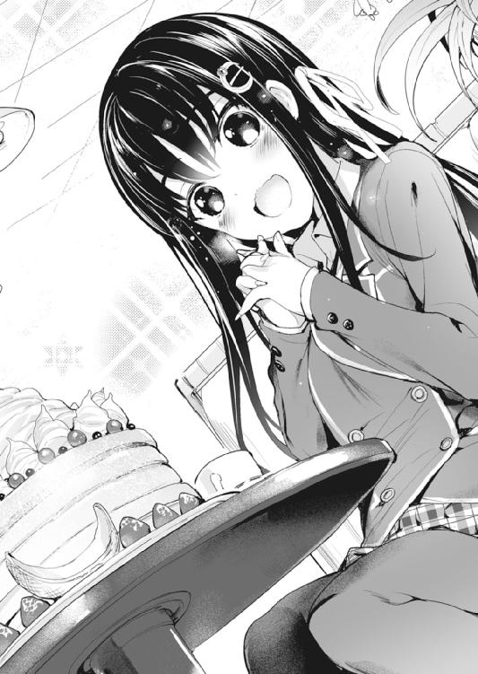
思わず呟いたら、それまで止まることのなかった手がぴたりと制止した。
「あ......っ」
カチャン、とフォークを取り落とし、萌香は慌てた様子で口を押さえた。頰張ったものを飲み込もうとしてか、もぐむぐもぐ、と、頰が忙しく動く。
「あ、慌てなくていいよ！ ほら、水」
こくこく、と頷いて、コップを受け取る萌香。
水を飲み、また少しもごもごと口を動かして、彼女はようやく話し始めた。
「ご、ごめんなさい......。わ、私ったら、つい......」
「え？ そんな......謝ることなんかないよ。元々、水崎さんに食べてもらおうと思って頼んだんだし」
「......そうじゃ、なくて」
言いづらそうに、萌香は俯いて縮こまる。
「か......可愛くないで、しょう？ 食いしん坊な、女の子なんて......」
「そう？ 俺は好きだけどなぁ。普段のキャラにもよるけど、大抵はいい感じにギャップが出て可愛いし」
腹ペコキャラのヒロインなんて、さほど珍しくない。騎士王しかり、軍神ちゃんしかり、どっかの空母しかり。
けれど萌香は、一真の言葉を聞いた瞬間、弾かれたように顔を上げた。
「えっ......」
目を見開いたその顔が、見る見るうちに赤く染まっていく。
そのリアクションを見て初めて、一真もようやく、自分が何を言ったかに気が付いた。
「あっ!? い、いや、今のは水崎さんのことじゃなくて二次元の話でっ......！ ああでもっ、水崎さんが可愛くないってことじゃないんだけどっ！」
必死に弁解するが、そもそも何を弁解すればいいのかわからないので、途中で何を言っているかわからなくなる。その間、萌香は赤くなったまま無言。カウンターでは、店主のおじいさんが「若いっていいねぇ」みたいな顔をしている。
「えっと......なんか、ごめん......」
「......いいの。............小田桐くん」
「え？ な、何？」
「......続き。食べても、いい？」
おずおずと、控えめな上目遣いで、萌香は一真の顔を窺う。その間も、萌香の目は時折、我慢できないとでも言うようにパンケーキをチラ見していて。
見ていたら、自然と頰が緩んでいた。
「うん、どうぞ。俺のことはいいから、水崎さんが好きなだけ食べてよ」
パンケーキは確かにおいしそうだけれど、たとえ一口も食べられなくても、萌香のこんな顔を見ていられるなら、それだけで十分だ。......どの道、完食できる気がしないし。
と、思ったのだが、
「それはだめよ」
「え？」
「おいしいものを独り占めにするなんて、絶対にしてはいけないことだもの。......どうぞ。小田桐くんも、遠慮せずに食べて」
言うが早いか、萌香は切り分けたパンケーキを取り皿に盛り、でん！ と一真の前に。さらにその上から、濃厚な生クリームやら溶けかけたアイスやらのトッピングを、これでもか、これでもかと載せていく。
「あ、あの、水崎さ......」
「それじゃ、いただきます」
頰を引き攣らせる一真には気付かず、萌香は再び、もぐもぐとパンケーキを頰張り出す。
しかし、一心不乱だった先ほどとは違い、今度は食べながら、ちらちらと一真のほうに視線を向けてきていた。
見るからに幸せそうな、何かを期待する表情。
「............」
たらり、と、背筋を汗が伝うのを感じながら、一真はフォークを手に取った。
「......おいしかったわね」
「うん......そうだね......。おいしいかどうかで言ったら、確かにおいしかったけど......」
とりあえず、胃袋が破裂せずに済んで本当に良かったと思う。
会計を済ませて店を出、時刻を確かめる。十二時ちょっと前。デートを終わりにするには、まだまだ早い時間だ。
「ねえ、水崎さん。この後なんだけど──」
「小田桐くん」
「え？」
「そろそろ、お昼よね？」
「えっ」
そりゃあ確かに、時間的にはお昼だけれども。
なんだろうか。この嫌な予感は。
「え、えっと、水崎さん......？」
「小田桐くん......私ね。小田桐くんと一緒に、行きたいところがあるの」
はにかむように目元を染めて、萌香は一真を見上げる。まるで甘えるみたいな仕草。
「良かったら......もう少しだけ、付き合ってくれる？」
じっと、期待に満ちた瞳で、萌香が一真を見つめる。
時刻は十二時ちょっと前。
デートは、まだ、始まったばかりだった。
◆◆◆
「............桐くん」
「ん......ま、待って水崎さん......も、もう食べられない......っ」
「......小田桐くん。そろそろ起きて」
「......へ？」
呟いた瞬間、ぱち、と瞼が開いた。
夕焼けに染まる、小さな児童公園。その片隅にあるベンチに寝そべり、一真はぱちぱちと目を瞬かす。
（あれ......？ 俺、なんでこんなとこに......？）
眠気が晴れなくてぼーっとしていると、すぐそばから萌香の声が聞こえた。
「......目が覚めた？」
「え......？ み、水崎さん......？」
そっと額に指が触れ、萌香が、真上から一真の顔を覗き込んでくる。
そして、横になる一真の頭の下には、なんだかとてつもなく柔らかい何かがあって。
「うわっ!? ご、ごご、ごめっ──うっぷ......！」
膝枕されていることに気付いて跳ね起きた瞬間、胃が押し潰されるような不快感が襲ってきて、一真は口を押さえた。
「い、胃が......胃が苦しい......」
まるで、内臓という内臓に隙間なく物が詰まっているような、そんな感覚だ。完全に食べ過ぎである。
「ご、ごめん水崎さん......俺、寝ちゃって......げふ......っ」
「いいの。......本当は、寝不足だったんでしょう？ 目の下に、隈ができていたもの」
隣に座る萌香が、そっと額の汗を拭ってくれる。
喫茶店を出た後、一真は萌香に連れられて電車を乗り継ぎ、彼女の行きつけだというラーメン屋に向かった。
その店は彼女が小さい頃から、家族でよく通っていた店らしい。店主夫婦は萌香に対してまるで実の娘のように接し、萌香もまた、二人の前では、いつもよりやや砕けた、親しげな態度を見せていた。
そして、萌香はそのラーメン屋で、『お昼』と称してラーメンを食べ、おばさんがおまけでつけてくれたチャーハンも一粒残らず平らげた。その食べっぷりたるや、食べ終えると同時に居合わせた客が拍手喝采したほどである。
が、萌香の食欲はその後も止まらなかった。ラーメン屋を後にした二人はその足で蕎麦屋に行き、和菓子屋を覗き、ケーキ屋をはしごしてパンを食べ歩いた。
皆、萌香が普段からよく行く、お気に入りのお店だという。
実際、彼女がお勧めだと言うメニューはどれもびっくりするほどおいしくて、一真はそれこそ感動さえしたのだが。
そもそも、最初のパンケーキの時点で大分限界だった一真の胃袋に、その食い倒れ紀行についていくだけの余力は、最早なかったのである。
結局、道半ばにして食べ過ぎで動けなくなった一真の為、二人はこの公園で一休みをすることにし。
そして、寝不足と満腹が祟り、一真はそのまま寝落ちてしまったというわけだ。
「でも......無理に私と同じものを食べることは、なかったのに」
「うん......その通りなんだけど......」
実際、萌香は途中から一真が満腹であることに気付き、無理に付き合わなくていいと再三言ってくれていたのだ。なんならもう帰ろうとも。
それでもまだ行こう、まだ食べようと言い張ったのは、他ならぬ一真自身である。
理由は──。
「でもさ。俺も、知りたかったから......水崎さんが、大事に思ってるもののこと」
萌香が今まで一真にしてくれたことを、今度は自分がやる。それが、今日のこのデートで、一真が掲げていた〝目標〟だった。
萌香がエロゲを一緒にやりたいと言ってくれた時、一真はとても嬉しかったから。今度は萌香にも、同じように喜んでほしい。その為には、ただ一緒に店を回るだけで終わらせてはいけないと思ったのだ。
一真のそういう思いは、萌香にも伝わったらしい。少しだけ目を細めて、萌香が呟く。
「......ありがとう。小田桐くん」
「......うん。喜んでもらえたなら、俺も嬉しい」
一真の言葉を聞いて、萌香はまた笑みを深くした。
花の蕾がほんの少しだけ綻ぶような、淡いけど、とても優しい表情。人前ではクールな彼女が、一真の前でだけ見せる顔だ。
......そろそろ、切り出す頃合いかもしれない。そう思い、一真は静かに居住まいを正す。
「......水崎さん」
名前を呼んで、立ち上がる。萌香の正面に回り、彼女の顔を真っ直ぐに見る。
一真の表情から何かを察したのか、萌香も、倣うように立ち上がった。
「水崎さん。俺、水崎さんに、言わなきゃいけないことがあるんだ」
「......何？」
「──今までごめん！」
力強く。ありったけの誠意を込めて、一真は深々と頭を下げる。
「......お、小田桐くん......？」
「ごめん、水崎さん。今までずっと、嫌な思いさせてて」
「......なんのこと？」
「水崎さん、昔、痴漢されたことあるのに......それなのに、女の子が無理矢理エロいことさせられるエロゲやらされて、水崎さんは、すごく嫌だったと思う。なのに俺、今までちっとも、水崎さんに嫌な思いさせてることに気が付かなかった。だから、ごめん。本当に、ごめん」
頭を垂れたまま、何度も「ごめん」を繰り返す。
萌香が許してくれるまで、頭は上げないつもりだった。なんなら土下座をしてもいい。多分自分は、そのくらい無神経なことを、彼女にしていたんだと思うから。
「でも、聞いてほしいんだ。ああいうエロゲ持ってて、何を今さらって思うかもしれないけど......でも俺、本当に女の子に......水崎さんに、ああいうことがしたいとか、そういう風に思ってるわけじゃないんだ。水崎さんにはよくわからないかもしれないけど、俺にとっては、フィクションとか妄想って、現実とは全然別のもので......現実じゃないからこそ、あえて想像してみることもある、っていうか......」
「......わかってるわ。小田桐くんが、そうだってことは。だって、小田桐くんはあの時、私を助けてくれたもの」
それだけで十分だと、萌香は一真に言う。
つい、目頭が熱くなった。一真は自分が信じられなくなって悩んだけれど、萌香はずっと一真のことを理解して、そして信じてくれていたのだ。
「......確かに、少し、昔を思い出して、嫌な気分になったりはしたけれど。でも、それだけよ。ああいうゲームをすることが、嫌だったわけじゃないわ」
「......水崎さん」
ゆっくりと、顔を上げる。一真と目が合うと、萌香は恥ずかしそうに顔を綻ばせた。
「その......だから、またやりましょう。一緒に。この間は、ちょっと失敗してしまったけれど、私、また頑張るから──」
「......ごめん、水崎さん。その前に、一つ確かめたいんだけどさ......水崎さんは、エロゲをやってて、楽しい？」
「えっ......？」
きょとんと、萌香が目を丸くする。どうしてそんなことを聞くのかわからない、とでも言うように。
「それは......でも、いいの。小田桐くんと一緒にいれば、私はそれで十分楽しいから、私のことは気にしないで、小田桐くんの好きに──」
「そうじゃないよ、水崎さん」
萌香の言葉を遮って、一真は深呼吸を一つ。
「......あのさ、水崎さん。俺、エロゲが好きなんだ」
「わかって──」
「だから、ずっと、水崎さんにもエロゲを楽しんでほしいって、思ってた」
それは、今日まで一真の胸に燻り続けていた思い。
『彼女』と過ごす日々に浮かれるあまり気付かずにいた、『本音』だった。
「水崎さん。初めて水崎さんと一緒に登校した時、俺が言ったこと覚えてる？ 〝エロゲの良さはエロだけじゃない〟......俺は、エロだけが目当てで、エロゲをやってるわけじゃないんだって」
「覚えている、けれど......」
「あの時は、俺、上手く言えなかったけど......エロゲってさ、本当に面白いんだ。なんていうか、作ってる側の人達が、すごく、自由な感じがして......。いい意味でも悪い意味でも、〝なんでもあり〟なんだよ。ストーリーも、設定も、キャラクターも、主題歌だって......作ってる人が『面白いと思ったこと』を、好き放題に詰め込んでるみたいな感じがするんだ。だから、中二病全開のバトル物とかもあるし、エロよりグロのほうがメインみたいなゲームもあるし、それに、俺が好きな、陵辱系の作品もあるし......そういうのって、大勢の人に受けたりはしないけど、でも、だからこそ、映画とか小説とか、コンシューマのゲームとか、そういう他の媒体じゃ真似のできない、『世界にたった一つ』の作品が生まれるんじゃないかって......俺、そういう風に思うんだよ」
......でも多分。そういう素晴らしさは、萌香には、ちゃんと届いていなかったんだろうと思う。だって彼女は、ストーリーにも世界観にも、キャラクターにも声優の演技にも、オープニングにもＢＧＭにも、何一つ、触れることがなかったから。
ただ、作中に出てくるエロシーンのシチュエーションをなぞるだけ。
それを責めるつもりなんて少しもない。だって、萌香のそういう行動を、一真は嬉しく感じていたんだから。
でも、そうやって単純に浮かれていたから、自分にとっても彼女にとっても大切なことを、すっかり忘れてしまっていた。
「水崎さんが、俺の好みに少しでも近付こうって頑張ってくれてたのはわかってるし、その為にエロゲやりたいって言ってくれたのも、すごく嬉しかった。でも......でもさ！ 俺にとってのエロゲって、そういうんじゃないんだよ！ 単なる『エロシチュのカタログ』なんかじゃないんだよ！ 物語で、世界で、人生なんだよ！ 俺の好みとか、理想とか、そんなのどうだっていい！ そんなことより大切なメッセージが、エロゲの中にはたくさん詰まってるんだ！ 折角エロゲやってるのに、エロの部分しか見ないで、それ以外のところを全部スルーするなんてもったいない！ めちゃくちゃもったいないよ、水崎さん！」
ぜえはあと息を切らす一真を、萌香は呆気に取られて見つめている。
だがすぐに、その表情が気まずそうに曇った。
「あ、あの......ごめんなさい、小田桐くん。私──」
「......だから気付いたんだ。『俺も、水崎さんに対して同じことをしてた』って」
「え......？」
驚いたようにこちらを見つめる萌香の視線を、一真は正面から受け止める。
「俺も、『水崎さんと付き合える』って、そのことばっかり意識して、舞い上がって......水崎さん自身のことを、全然見てなかった。付き合うなら......『彼氏』になるなら、俺は、水崎さんのこと、もっと本気で、好きになってなきゃいけなかったのに」
萌香のエロゲのやり方は、いわばシーンの抜き出しだ。本編をプレイせずに、回想モードでエロだけ楽しむようなもの。
でも、そんな方法じゃ、そのエロゲの本当の良さなんてわかりっこない。
オープニングを見てテンションを上げ、選択肢に頭を悩ませ、時には即死バッドに突っ込んだりしつつ、ＳＬＧパートやバトルパートに悪戦苦闘して、気が付いたら本編そっちのけでのめり込んで......そうやって、一からきちんとプレイしなかったら、作品の良さもキャラの魅力も何一つ感じ取れない。
そしてそれは、人と人との関係だって、きっと同じだ。
途中の段階を、飛ばしたりしないで。出会いから、きちんとスタートしなければ、その人のことを本当に好きになることなんて、きっと、できやしないのだ。
萌香に告白されたあの時、一真は舞い上がるあまり、そこまでの道のりをスキップしてしまった。彼女を攻略するという、最も大切な工程を、蔑ろにしてしまった。
だから、今日、一真は萌香に伝えなくてはならない。
この間違った関係から、正しい未来に辿り着く為に。
それがたとえ......どんなに、心の痛むことでも。
「......水崎さん」
言うや、一真はがばっとその場に膝をついた。手をつき、頭を垂れ、そして言う。
「──ごめん！ 俺と......俺と、別れてください！」
......その瞬間、萌香は、なんの言葉も口にはしなかった。息を吞む音すらも聞こえない、完全な静寂。
けれど一真には、彼女が衝撃に身を震わせたのがはっきりとわかった。
「一度別れて......そして、もう一度、最初から始めさせてほしいんだ！」
今朝、エロゲをプレイしていた時。タイトル画面に表示された『最初から始める』の文字を見て、一真は気が付いた。これこそが、今の自分が選ぶべき『選択肢』なんだと。
「折角告白してくれたのに、今までずっと、水崎さんに尽くしてもらってたのに、今になってこんなこと言うなんて、勝手だってわかってる！ でも、俺、このままじゃ嫌なんだ！ 水崎さんのこと、本当の意味で、大切にできるようになりたいから......！」
何も、別れる必要なんてないのかもしれない。今のままでも、萌香と付き合っていくことはできるのかもしれない。
だが、やっぱり、それではだめだと一真は思う。
家を出る時、一真は覚悟を決めたのだから。
萌香が、エロゲのヒロインのように振る舞ってくれたように。
自分も──主人公になるのだと。
もし、このまま萌香と付き合い続ければ、小さな気持ちのズレはいつか歪みになって、彼女との関係を決定的に破滅させてしまうだろう。選択肢を間違えたまま強引に物語を進めても、行き着く先にはバッドエンドしかないように。
そんな終わり方は、どうしても嫌だから。
だから一真は、地面に顔が付くほど深く頭を下げ、自分の意志を訴え続ける。
──長い長い、沈黙の後。
「......でも。それでも、私......嫌......」
萌香は、たっぷりと時間を掛けて、ようやく口を開いた。
「私は......ずっと、小田桐くんと仲良くなりたいって、思っていたわ。だから、小田桐くんと付き合えることになった時、本当に、すごく嬉しかった......。なのに......なのに、これでおしまいなんて......お別れなんて、そんなのっ......そんなのは、嫌......っ」
胸が、どうしようもなく痛んだ。途方もない罪悪感と、後悔。
それでも一真は、歯を食い縛ってそれに耐える。
「ごめん、水崎さん！ 勝手なこと言って、本当に悪いと思ってる！ 俺のこと責めても、恨んでくれてもいいから......！」
「......なら、一つだけ、約束、して？」
「......えっ？」
思わず、顔を上げる。
「小田桐くんの言いたいことは、よくわかったわ......それが、私の為を思ってのことなんだって、ことも。だから......お願い。私も、もう一度、最初から始めさせてほしいの」
静かに身を屈め、萌香はそっと、一真の前に小指を差し出す。告げられる、『約束』の言葉。
一真はそれに頷き返し、自分の小指を伸ばして、
──そうして、一真と萌香は、元の、ただのクラスメイトに戻った。
エピローグ
「あ～！ カズちゃん、や～っと起きてきた～。もう、お寝坊さんなんだからぁ」
「へ......？ あ、姉貴？」
連休明けの朝。一真が台所に降りていくと、大変珍しいことに、一葉がフライパンを持って料理をしていた。
「ど、どうしたんだよ!? 姉貴が料理なんて......熱でもあるのか!?」
「ひっどぉい。普段やらないだけでぇ、お姉ちゃんだって、お料理ぐらいできるんだから」
ぷくっと頰を膨らませると、一葉はフライパンで焼いていた何かを皿に盛り、一真の前に差し出す。
「じゃ～ん。見て見て、おいしそうでしょ～？ 目玉焼きよ～。お姉ちゃんの得意料理～」
「......まあ、料理ではあるけどさ」
「でしょ～。カズちゃんの分もあるからぁ、久しぶりに、一緒に朝ご飯食べましょ～」
見れば、テーブルの上にはトーストの載った皿もあった。それに牛乳とコップも。一葉が用意したにしては、極めてまともな朝食である。
もちろん、それは『この』姉にしては頑張ったという意味であって、料理そのものが素晴らしい出来というわけでは断じてない。
（まあ、いいけどさ。俺が用意したって似たようなもんだし）
作る手間が省けただけでもありがたいので、一真は素直に席に着く。すぐに一葉も、にこにこ顔で向かいに座った。
「......じゃあ、いただきます」
「は～い。いただかれま～す」
「そういえば、母さん達は？」
「昨夜遅くに帰ってきて、まだ寝てるわよ～。今日ももう一日お休みもらってるみたいだから、のんびりするんじゃないかしら～」
「そっか。......そういえばさ、前に相談したことだけど」
トーストを齧りつつ切り出すと、一葉は「ふっふっふ～」と似合わない含み笑いをした。
「いいのいいの～。お姉ちゃんはわかってるから～。上手く行ったんでしょ～？」
「いや。別れた」
「────ふえ？」
「ごちそうさま。じゃ、行ってきます」
動きを止める一葉は放っておいて、一真は手早く食器を片付け、台所を出る。
ドアを閉める時にちらっと振り返ってみたが、一葉は相変わらず、呆けた顔で椅子に座ったままだった。
◆◆◆
家を出て駅に向かおうとした矢先。不意に向かいの家の扉が開いて、一真は反射的に足を止める。
現れたのは、一真同様制服に身を包んだ幼馴染で。
「「──あ」」
ばっちり目が合ってしまい、二人は揃ってぽかんと口を開け、その場に固まった。
「あ、え、えっと......」
あたふたする一真を、瑠璃もまた、どことなく気まずげな顔で見つめる。
何しろ、瑠璃と面と向かって話をするのは、『あの一件』以来だ。どうしても、意識せずにはいられない。
そもそも、瑠璃がどういうつもりであんなことを言ったのか。一真は未だに、彼女に問い質せないままなのだ。
「な、なあ、瑠──四ノ宮。あのさ、こないだのこと、なんだけど......」
おずおずと切り出すと、瑠璃の体がぴくっと震えた。
「......教えない」
「......は？」
「一真には、教えたげない」
それだけ言い、瑠璃はくるりと踵を返した。たーっと駆け出していく背中に、慌てて声を掛ける。
「ちょっ......おい！ 待てよ！ なんだよ、それ！」
「──一真がバカだから！ だから、ちゃんとわかるようになるまで、教えてなんかあげないの！」
足を止め、ぱっと振り返って。瑠璃は子供のように、べーっと舌を出してみせる。
「だからっ......だから約束！ それまでは、あたしと一真は、ずっと今まで通り！ 今まで通りだからね！」
──そうして、幼馴染は去っていった。
一真の胸に、多大な混乱と動揺を残して。
◆◆◆
家を出て早々、なんだかとんでもない事態に遭遇したが。しかし、いつまでも玄関先で棒立ちになっているわけにもいかない。
何しろ今日は──大切な、約束があるから。
朝方の校舎に人の姿はない。グラウンドから聞こえてくる運動部の掛け声を聞きながら、一真は階段を上がり、自身の教室に向かった。
一─Ｃ。扉を開けると、この半年ですっかり見慣れた教室の風景が目に飛び込んでくる。
そこにいたのは、一人の少女、
いや、美少女だった。
艶やかに背を流れ落ちる黒髪。白い素肌に華奢な姿態。こちらを見る瞳はびっくりするほど綺麗に澄んでいて、窓からの朝日を受けてきらきらと輝いて見える。
一真が教室に足を踏み入れると、座っていた萌香は、静かに席を立った。
「......おはよう、小田桐くん」
「うん。おはよう、水崎さん」
挨拶を交わして、萌香の元へと歩いていく。
と、そこで一真は、萌香の机に何かのプリントが載っているのに気が付いた。
よく見てみると、そのプリントは入部届で、『希望する部活動』の欄には、『サブカルチャー研究会』の文字が。
「え？ 水崎さん、サブ研に入るの？」
「ええ。正式に、入部しようと思って。......そ、それでね、小田桐くん」
萌香の目元が少しだけ、恥ずかしそうに赤く染まる。
「そ、その......私、やってみたい、エロゲが、あるの」
「......え？」
一真が驚いていると、萌香は一層恥ずかしそうに、俯いてもじもじし始めた。
「その、小田桐くんが、言っていたでしょう？ エロゲには、素敵なところがたくさんあるって。だから、私、もう一度、ちゃんと、『エロゲ』っていうものを、やってみたいと思ったの。それで、色々調べて、買ってみようと、思っているものが、あるのだけど......」
「本当に？ そ、それで、なんてエロゲ？ タイトルは？」
「ご、ごめんなさい、タイトルはちょっと見ていなくて......イラストに描いてあった鯛焼きが、すごくおいしそうだったのは覚えているのだけど......」
「あ、そっか。でも、嬉しいよ！ 水崎さんが、エロゲに興味持ってくれて！」
ずっと思っていた。誰かと──萌香と一緒に、エロゲをやりたい。その面白さや感動を、二人で分かち合いたいと。
その願いがついに、叶うのかもしれない。
はしゃぐ一真の顔を見上げて、萌香はほっとしたように笑顔を見せた。
しかし、次の瞬間、柔らかだったその表情が、真剣な色を帯びる。
「......小田桐くん。私......あなたに伝えたいことが、あるの」
それは丸っきり、『いつか』の再現。
夕焼けの代わりに朝日を背にして。萌香はまた、一真に言う。
「私を──あなたの、彼女にしてほしいの」
──『もう一度、私の告白を受けてほしい』。
それが、別れを告げた一真に対して、萌香が切り出した『約束』だった。
確かに、一真と萌香の関係は、あの放課後の教室での告白から始まった。だから、本当の意味で『最初から始める』のなら、戻るべきはあの瞬間なんだろう。
でも、自分から別れてほしいと言い出しておいてそんなことを望むのは、あまりにも虫が良過ぎると思った。これ以上萌香に甘えない為には、クラスメイトという関係に戻り、もう一度、ゼロから彼女との時間を築いていくしかないと思ったのだ。
まさか──あんなことを言った自分に対して、萌香がまた告白してくれるなんて、そんなこと、思ってもみなかったから。
『約束』の言葉を口にして、萌香はじっと、一真の答えを待っている。頰を染め、かすかに眉を曇らせて、緊張と不安を露わにしながら。
あの時と、一字一句変わらない言葉。寸分違わない、萌香の表情。
けれど、それを見つめ返す一真の心は、もうあの時とは違う。
「......うん。ありがとう、水崎さん」
はっと、小さく息を吞む萌香。その目を見つめて、はっきりと告げる。
「最初に水崎さんに告白された時。俺、付き合うって言った癖に、告白してもらったことに浮かれるばっかりで、覚悟も、真剣さも、全然足りてなかった。『付き合う』って......『彼氏』になるって、そんな、簡単なことじゃなかったのに」
......思い返せば、そもそもの間違いはそこにあった。
自分の萌香に対する気持ちは、まだ未完成なまま──その事実をあの時に告げていれば、一真はもっと、萌香に対して真っ直ぐに向き合えたはずなのだ。
一方的に別れを切り出した一真に対しても、変わらない気持ちで、もう一度『付き合いたい』と願ってくれた萌香。
彼女の気持ちは、本当に、胸が一杯になるくらいに、嬉しい。
だからこそ、もう二度とその気持ちに甘えるような真似はしないと、一真は、より一層の決意を固める。
だから──やり直そう。その決意を胸に。
もう一度、ここから。
「でも......今度こそ、俺は本気で、水崎さんのことを好きになる。水崎さんの彼氏として、相応しい男になるって約束する。だから、俺からもお願いします......！」
震えそうになる手をぐっと握り締めて。一真は、深く頭を下げる。
「水崎萌香さん！ もう一度、俺の彼女になってください！」
......答えを待つ時間は、随分長く感じられた。
けれど、どんなに待っても、萌香は何も言ってはくれなくて。さすがに緊張に耐えかねて、一真はそろそろと顔を上げる。
その瞬間、一真は固まってしまった。
（え......？）
一真の前に立ち尽くしたまま、萌香はわなわなと、華奢な体を震わせている。
両手で口を覆い、顔を耳まで真っ赤にして。こぼれ落ちんばかりに目を見開きながら、じっと一真を見つめている。
「あの......水崎、さん」
恐る恐る声を掛けると、萌香はびくっと痙攣。ますます顔を赤くして、ずざざざっと教壇のほうへ後退していく。
そしてそのまま、教卓の陰に隠れてしまった。
「............み、水崎さん......？」
「............も、もう一度」
そろりと、教卓の陰から、萌香が少しだけ顔を覗かせる。
「その、もしかしたら私、聞き間違えたかもしれないから......だから、もう一度、言ってくれる......？」
「えっ......!?」
まさか二度も言うことになるとは思っていなかったので、一瞬にして顔が熱くなる。
だが、すぐに一真は覚悟を決めた。今にも口から飛び出しそうになる心臓を懸命に落ち着かせながら、萌香の顔（半分以上隠れてるけど）を真っ直ぐに見つめる。
「み、水崎さん！ もう一度、俺と、付き合ってください！」
ぴゃっ、と、小さく震えた後、半分だけ覗いた萌香の顔がまた引っ込む。
「ま、待って......！ お、落ち着いて......落ち着かなきゃ......！ 『つきあう』って、そういう意味じゃないかもしれないしっ......そう、例えば『突き合う』とか......！」
「ちょっ、ちょっと待って水崎さん！」
その誤字は色々とまずい。
「そ、そうじゃないよ！ 『つきあう』ってつまり、〝彼女になってください〟って、そういう意味だから！」
なんだか泥沼に嵌まっている気がしたので、一真は意を決し、教卓の裏に回り込む。しゃがみ込んでいた萌香が、一真を見て変な悲鳴を上げた。
「あ、ご、ごめん......驚かせて......」
「ち、違うのっ、そうじゃないの......！ わ、わた、私、本当はすごく、不安でっ......小田桐くんが、本当にオーケーしてくれるかどうか、わからなかったから......だから、すごく、嬉しくてっ......どうしたらいいかわからなくて......！」
慌てた様子で言う萌香は、動転を通り越して完全にテンパっていた。こんな姿を見るのは、連休前に彼女の家に遊びに行った時以来だ。
「ほ、本当に......？ 本当にまた、私と、付き合ってくれるの......？」
「う、うん。もちろん、水崎さんが嫌じゃないなら......」
「..................──ない」
「え......？ わっ......!?」
聞き返した瞬間、萌香が、勢い良く抱き付いてきた。
ぎゅっと、背中に回される華奢な腕。彼女の髪の香り。柔らかな体が制服越しにぴたりと密着して、温もりに頭がくらくらする。
「み、水崎さっ......！ いてっ!?」
勢いを受け止めきれず、一真は数歩後退。黒板に背中を打ち、床にへたり込む。
けれど、それでもなお、萌香は一真から離れなかった。一真の胸に顔を埋めたまま、彼女は小さな声で、言う。
その声は、少し、潤んでいる気がした。
「嫌じゃない......嫌なはずない......ありがとう、小田桐くん......！」
ゆっくりと、萌香が顔を上げる。濡れた瞳に間近から見上げられて、心臓が痛いほどに高鳴った。
「私も、頑張る。もう一度頑張って......今度こそ、ちゃんと向き合うから、小田桐くんに。今度こそ、小田桐くんの、一番になれるように。だから、だから......っ」
そして、萌香は一真に小指を差し出した。
心から幸せそうな、満面の笑顔で。
「また......よろしく、お願いします」
そうして、また始まる。自分と萌香の、新しい関係が。
もう、選ぶべき道を誤ったりなんてしない。今度こそは全身全霊で、水崎萌香という女の子に向き合おう。
二人で、最高のエンディングを迎えられるように。
だって、今日のイベントはまだプロローグ。
自分達の物語は、まだまだ、始まったばかりなんだから。
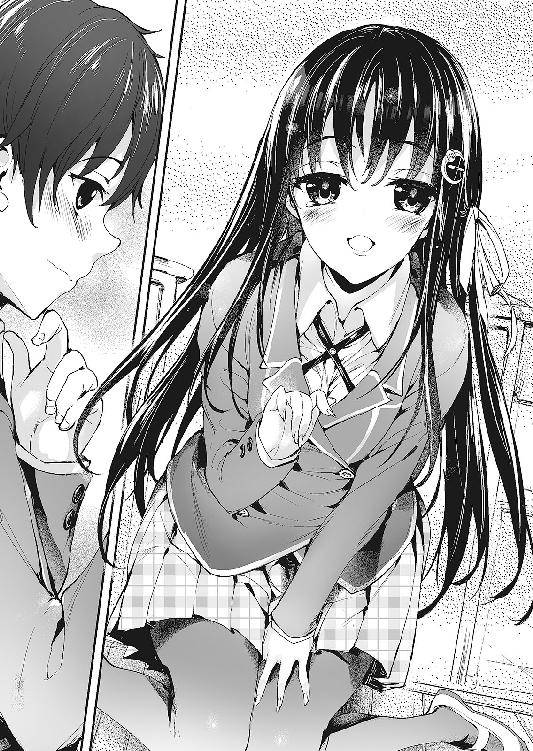
あとがき
初めまして、滝沢慧と申します。
このたびは『非オタの彼女が俺の持ってるエロゲに興味津々なんだが......』をお手に取ってくださり、どうもありがとうございます。
改めて書いてみるとすごいタイトルですね。手に取ってくださって本当にありがとうございます！（五体投地）
思い返せば一年と少し前。ラジオで、『彼女にオタクであることを打ち明けられない』、という悩み相談を聞いたのが、本作のアイデアを思い付いたきっかけでした。
「確かに非オタの人に言うのって勇気いるよなぁ」というところから、「彼女ができたはいいけど、オタクであることを打ち明けられずに悩む主人公」の話を書こうと思い付き、しかしただのオタ趣味では芸がないので、何かないかと思っていた時に、ふと目に留まったのがデスクトップにあったエロゲ、『ゴア・スクリーミング・ショウ』のアイコン。
「これだ！」と思い、そこからこの作品のキャラクター設定が生まれたわけです。
実際、エロゲが好きだと肩身が狭いことも多いじゃないですか。モノが陵辱系とかだとなおさら。特に最近は二次元に対する風当たりが強いですし、オタクであることまでは言えても、エロゲの話題にまで踏み込むのはちょっと躊躇してしまったりします。
だって「俺痴漢ゲーが好きなんだ」とか迂闊に口にしたら、相手によってはそのまま縁を切られますもんね。最悪社会的に死んでしまう可能性も微レ存。
そのリスクを考えると、やっぱり言えないよなー、となるわけです。
でも、やっぱり言いたいし、語りたいし、受け入れてほしいとも思うわけで。
ヒロインの萌香の設定は、そういうところからも来ています。
かくいう私自身、エロゲの話ができる友人は周囲にいません（というか友人自体がいないんですが）。
唯一の話し相手は一緒に暮らしてる妹達なんですが、さすがに妹にエロゲの話題は振れないじゃないですか。
で、一人寂しくプレイに勤しむ日々を送っていたわけなんですが、ある日、当の妹にその現場を押さえられまして。正直「オワタ」と思ったんですが、妹は引くでもなく喚くでもなく、「これ面白いの？」と意外にも前向きな反応。
舞い上がった私はここぞとばかりに妹にそのエロゲを勧めまくったんですが、結局「キョーミないや」の一言で切って捨てられて終わりました。
やっぱり初エロゲで蟲愛を勧めるのはハードルが高かったんですかね。
でも萌香だったらきっと、一真の話に興味津々で耳を傾けてくれるんだと思います。
何せ萌香は、一真の『彼女』ですから。
今後も色んな『エロゲ』を通して、二人のイチャイチャや成長を書いていけたらと思っておりますので、どうかこれからもよろしくお願い致します。
※ただし、実際の18歳未満の方々は、エロゲをやってはいけませんので、ご注意を。
最後になりましたが、この本を出版するにあたり、お力添えをいただきました多くの方々に、改めて感謝を述べさせていただきたいと思います。
まずは、拙作に金賞という大変栄誉ある賞を与えてくださった選考委員の皆様へ。そして、最終選考に至るまでに、拙作を評価してくださった全ての方へ。皆様のおかげで、私は作家になるという夢を叶えることができました。この場を借りまして、心からお礼を申し上げさせていただきます。本当に、ありがとうございました。
担当のＴさん。作家としても社会人としても未熟な私をここまで引っ張ってくださり、感謝の念に堪えません。Ｔさんのアドバイスがなければ、この作品は完成しませんでした。今後とも、よろしくお願い致します。
イラストを担当してくださった睦茸様。お忙しい中、素晴らしいイラストを描いてくださって誠にありがとうございます。初めてヒロイン達のキャラデザをいただいた時の感動は忘れません。特に口絵の萌香が可愛すぎます。ありがとうございました。
両親へ。あなた達が今日まで育ててくれたから、私は今ここにいます。守ってくれてありがとう。妹たちへ。締め切りのたびに絡んでごめんなさい。今度何か奢ります。
そして何より、この本を読んでくださった読者の皆様に、心からの感謝を。
それともう一つ、ＷＥＢ読者賞について。
実はこの本の出版に先立ち、ファンタジア文庫さんのＷＥＢサイトで『ＷＥＢ読者賞総選挙』という投票企画が行われておりまして、大変光栄なことに、本作がＷＥＢ読者賞をいただきました。
投票してくださった皆様、本当にありがとうございました。
ゲーム化なども決定しておりますので、そちらも楽しみにお待ちください！
拙い作品ですが、少しでも楽しんでいただけたのなら何よりです。
ここまで読んでくださって、ありがとうございました。
二〇一五年十二月某日 滝沢慧
非オタの彼女が俺の持ってるエロゲに興味津々なんだが......
滝沢 慧
平成28年1月20日 発行
発行者 三坂泰二
発行 株式会社ＫＡＤＯＫＡＷＡ
〒102-8177 東京都千代田区富士見2-13-3
03-3238-8521（カスタマーサポート）
http://www.kadokawa.co.jp/
(C)Kei Takizawa, Mutsutake 2016
本電子書籍は下記にもとづいて制作しました
富士見ファンタジア文庫『非オタの彼女が俺の持ってるエロゲに興味津々なんだが......』
平成28年1月25日初版発行